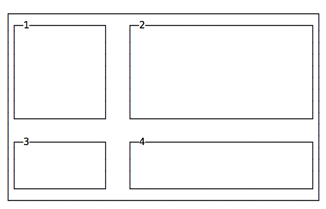

<!DOCTYPE html>
<html lang="en">
<head>
  <meta charset="UTF-8">
    <meta http-equiv="X-UA-Compatible" content="IE=edge">
    <meta name="viewport" content="width=device-width, initial-scale=1.0">
    <title>El Ayeb Imed</title>
    <link rel="shortcut icon" type="image/x-icon" href="images/imed.png">
    <link rel="stylesheet" href="style-css.css">

    
<script src="https://ajax.googleapis.com/ajax/libs/jquery/3.6.1/jquery.min.js"></script>


</script>
<body>
  
  <a href="index.html"></a>

<!--------------------------------------------Side bar--------------------------------------------------------------->


    <div class="side-bar">
      
      <a href="#preface">Preface</a><hr>
      <a href="#introduction-to-css">Introduction to CSS</a><hr>
      <a href="#a-brief-history-of-css">A brief history of CSS</a><hr>
      <a href="#adding-css-to-an-html-page">Adding CSS to an HTML page</a><hr>
      <a href="#selectors"> Selectors</a><hr>
      <a href="#cascade">Cascade</a><hr>
      <a href="#specificity">Specificity</a><hr>
      <a href="#inheritance">Inheritance</a><hr>
      <a href="#import">Import</a><hr>
      <a href="#attribute-selectors">Attribute selectors</a><hr>
      <a href="#pseudo-classes">Pseudo-classes</a><hr>
      <a href="#pseudo-elements">Pseudo-elements</a><hr>
      <a href="#colors">Colors</a><hr>
      <a href="#units">Units</a><hr>
      <a href="#url">url()</a><hr>
      <a href="#calc">calc()</a><hr>
      <a href="#backgrounds">Backgrounds</a><hr>
      <a href="#comments">Comments</a><hr>
      <a href="#custom-properties">Custom Properties</a><hr>
      <a href="#fonts">Fonts</a><hr>
      <a href="#typography">Typography</a><hr>
      <a href="#box-model">Box Model</a><hr>
      <a href="#border">Border</a><hr>
      <a href="#padding">Padding</a><hr>
      <a href="#margin">Margin</a><hr>
      <a href="#box-sizing">Box Sizing</a><hr>
      <a href="#display">Display</a><hr>
      <a href="#positioning">Positioning</a><hr>
      <a href="#floating-and-clearing">Floating and clearing</a><hr>
      <a href="#z-index">z-index</a><hr>
      <a href="#css-grid">CSS Grid</a><hr>
      <a href="#flexbox">Flexbox</a><hr>
      <a href="#tables">Tables</a><hr>
      <a href="#centering">Centering</a><hr>
      <a href="#lists">Lists</a><hr>
      <a href="#media-queries-and-responsive-design">Media queries and responsive design</a><hr>
      <a href="#feature-queries">Feature Queries</a><hr>
      <a href="#filters">Filters</a><hr>
      <a href="#transforms">Transforms</a><hr>
      <a href="#transitions">Transitions</a><hr>
      <a href="#animations">Animations</a><hr>
      <a href="#normalizing-css">Normalizing CSS</a><hr>
      <a href="#error-handling">Error handling</a><hr>
      <a href="#vendor-prefixes">Vendor prefixes</a><hr>
      <a href="#css-for-print">CSS for print</a>
    </div>
    


<!-------------------------------------------------Content------------------------------------------------------------------>
  <div class="parag">
    
    <h2 id="preface">1. Preface</h2>
    
    <p>CSS, a shorthand for Cascading Style Sheets, is one of the main building blocks of the Web. Its history goes back to the 90&rsquo;s and along with HTML it has changed a lot since its humble beginnings.</p>
    <p>Having created websites since before CSS existed, I have seen its evolution.</p>
    <p>CSS is an amazing tool, and in the last few years it has grown a lot, introducing many fantastic features like CSS Grid, Flexbox and CSS Custom Properties.</p>
    <p>This handbook is aimed at a vast audience.</p>
    <p>First, the beginner. I explain CSS from zero in a succinct but comprehensive way, so you can use this book to learn CSS from the basics.</p>
    <p>Then, the professional. CSS is often considered like a secondary thing to learn, especially by JavaScript developers. They know CSS is not a real programming language, they are programmers and therefore they should not bother learning CSS the right way. I wrote this book for you, too.</p>
    <p>Next, the person that knows CSS from a few years but hasn&rsquo;t had the opportunity to learn the new things in it. We&rsquo;ll talk extensively about the new features of CSS, the ones that are going to build the web of the next decade.</p>
    <p>CSS has improved a lot in the past few years and it&rsquo;s evolving fast.</p>
    <p>Even if you don&rsquo;t write CSS for a living, knowing how CSS works can help save you some headaches when you need to understand it from time to time, for example while tweaking a web page.</p>
    <p><strong>CSS</strong> (an abbreviation of <strong>Cascading Style Sheets</strong>) is the language that we use to style an HTML file, and tell the browser how should it render the elements on the page.</p>
    <blockquote>
    <p>In this book I talk exclusively about styling HTML documents, although CSS can be used to style other things too.</p>
    </blockquote>
    <p>A CSS file contains several CSS rules.</p>
    <p>Each rule is composed by 2 parts:</p>
    <ul>
    <li>the <strong>selector</strong></li>
    <li>the <strong>declaration block</strong></li>
    </ul>
    <p>The selector is a string that identifies one or more elements on the page, following a special syntax that we&rsquo;ll soon talk about extensively.</p>
    <p>The declaration block contains one or more <strong>declarations</strong>, in turn composed by a <strong>property</strong> and <strong>value</strong> pair.</p>
    <p>Those are all the things we have in CSS.</p>
    <p>Carefully organising properties, associating them values, and attaching those to specific elements of the page using a selector is the whole argument of this ebook.</p>
  
    <h2 id="introduction-to-css">2. Introduction to CSS</h2>
    <h3>2.1. How does CSS look like</h3>
    <p>A CSS <strong>rule set</strong> has one part called <strong>selector</strong>, and the other part called <strong>declaration</strong>. The declaration contains various <strong>rules</strong>, each composed by a <strong>property</strong>, and a <strong>value</strong>.</p>
    <p>In this example, <code>p</code> is the selector, and applies one rule which sets the value <code>20px</code> to the <code>font-size</code> property:</p>
    <div><pre><code<span><span><span>p</span> {
    </span></span><span><span>  <span>font-size</span>: <span>20</span><span>px</span>;
    </span></span><span><span>}
    </span></span></code></pre></div><p>Multiple rules are stacked one after the other:</p>
    <div><pre><code<span><span><span>p</span> {
    </span></span><span><span>  <span>font-size</span>: <span>20</span><span>px</span>;
    </span></span><span><span>}
    </span></span><span><span>
    </span></span><span><span><span>a</span> {
    </span></span><span><span>  <span>color</span>: <span>blue</span>;
    </span></span><span><span>}
    </span></span></code></pre></div><p>A selector can target one or more items:</p>
    <div><pre><code><span><span><span>p</span>, <span>a</span> {
    </span></span><span><span>  <span>font</span><span>-</span><span>size</span><span>:</span> <span>20</span><span>px</span>;
    </span></span><span><span>}
    </span></span></code></pre></div><p>and it can target HTML tags, like above, or HTML elements that contain a certain class attribute with <code>.my-class</code>, or HTML elements that have a specific <code>id</code> attribute with <code>#my-id</code>.</p>
    <p>More advanced selectors allow you to choose items whose attribute matches a specific value, or also items which respond to pseudo-classes (more on that later)</p>
    <h3>2.2. Semicolons</h3>
    <p>Every CSS rule terminates with a semicolon. Semicolons are <strong>not</strong> optional, except after the last rule, but I suggest to always use them for consistency and to avoid errors if you add another property and forget to add the semicolon on the previous line.</p>
    <h3>2.3. Formatting and indentation</h3>
    <p>There is no fixed rule for formatting. This CSS is valid:</p>
    <div><pre><code<span><span><span>p</span> {
    </span></span><span><span>           <span>font-size</span>: <span>20</span><span>px</span>;}
    </span></span><span><span>
    </span></span><span><span><span>a</span> {<span>color</span>: <span>blue</span>;
    </span></span><span><span>}
    </span></span></code></pre></div><p>but a pain to see. Stick to some conventions, like the ones you see in the examples above: stick selectors and the closing brackets to the left, indent 2 spaces for each rule, have the opening bracket on the same line of the selector, separated by one space.</p>
    <p>Correct and consistent use of spacing and indentation is a visual aid in understanding your code.</p>
    <h2 id="a-brief-history-of-css">3. A brief history of CSS</h2>
    <p>Before moving on, I want to give you a brief recap of the history of CSS.</p>
    <p>CSS was grown out of the necessity of styling web pages. Before CSS was introduced, people wanted a way to style their web pages, which looked all very similar and &ldquo;academic&rdquo; back in the day. You couldn&rsquo;t do much in terms of personalisation.</p>
    <p>HTML 3.2 introduced the option of defining colors inline as HTML element attributes, and presentational tags like <code>center</code> and <code>font</code>, but that escalated quickly into a far from ideal situation.</p>
    <p>CSS let us move everything presentation-related from the HTML to the CSS, so that HTML could get back being the format that defines the structure of the document, rather than how things should look in the browser.</p>
    <p>CSS is continuously evolving, and CSS you used 5 years ago might just be outdated, as new idiomatic CSS techniques emerged and browsers changed.</p>
    <p>It&rsquo;s hard to imagine the times when CSS was born and how different the web was.</p>
    <p>At the time, we had several competing browsers, the main ones being Internet Explorer or Netscape Navigator.</p>
    <p>Pages were styled by using HTML, with special presentational tags like <code>bold</code> and special attributes, most of which are now deprecated.</p>
    <p>This meant you had a limited amount of customisation opportunities.</p>
    <p>The bulk of the styling decisions were left to the browser.</p>
    <p>Also, you built a site specifically for one of them, because each one introduced different non-standard tags to give more power and opportunities.</p>
    <p>Soon people realised the need for a way to style pages, in a way that would work across all browsers.</p>
    <p>After the initial idea proposed in 1994, CSS got its first release in 1996, when the CSS Level 1 (&ldquo;CSS 1&rdquo;) recommendation was published.</p>
    <p>CSS Level 2 (&ldquo;CSS 2&rdquo;) got published in 1998.</p>
    <p>Since then, work began on CSS Level 3. The CSS Working Group decided to split every feature and work on it separately, in modules.</p>
    <p>Browsers weren&rsquo;t especially fast at implementing CSS. We had to wait until 2002 to have the first browser implement the full CSS specification: IE for Mac, as nicely described in this CSS Tricks post: <a target="_blank" href="https://css-tricks.com/look-back-history-css/">https://css-tricks.com/look-back-history-css/</a></p>
    <p>Internet Explorer implemented the box model incorrectly right from the start, which led to years of pain trying to have the same style applied consistently across browsers. We had to use various tricks and hacks to make browsers render things as we wanted.</p>
    <p>Today things are much, much better. We can just use the CSS standards without thinking about quirks, most of the time, and CSS has never been more powerful.</p>
    <p>We don&rsquo;t have official release numbers for CSS any more now, but the CSS Working Group releases a &ldquo;snapshot&rdquo; of the modules that are currently considered stable and ready to be included in browsers. This is the latest snapshot, from 2018: <a target="_blank" href="https://www.w3.org/TR/css-2018/">https://www.w3.org/TR/css-2018/</a></p>
    <p>CSS Level 2 is still the base for the CSS we write today, and we have many more features built on top of it.</p>
    <h2 id="adding-css-to-an-html-page">4. Adding CSS to an HTML page</h2>
    <p>CSS is attached to an HTML page in different ways.</p>
    <h3>4.1. 1: Using the <code>link</code> tag</h3>
    <p>The <code>link</code> tag is the way to include a CSS file. This is the preferred way to use CSS as it&rsquo;s intended to be used: one CSS file is included by all the pages of your site, and changing one line on that file affects the presentation of all the pages in the site.</p>
    <p>To use this method, you add a <code>link</code> tag with the <code>href</code> attribute pointing to the CSS file you want to include. You add it inside the <code>head</code> tag of the site (not inside the <code>body</code> tag):</p>
    <div><pre><code"><span><span>&lt;<span>link</span> <span>rel</span><span>=</span><span>&#34;stylesheet&#34;</span> <span>type</span><span>=</span><span>&#34;text/css&#34;</span> <span>href</span><span>=</span><span>&#34;myfile.css&#34;</span> /&gt;
    </span></span></code></pre></div><p>The <code>rel</code> and <code>type</code> attributes are required too, as they tell the browser which kind of file we are linking to.</p>
    <h3>4.2. 2: using the <code>style</code> tag</h3>
    <p>Instead of using the <code>link</code> tag to point to separate stylesheet containing our CSS, we can add the CSS directly inside a <code>style</code> tag. This is the syntax:</p>
    <div><pre><code"><span><span>&lt;<span>style</span>&gt;
    </span></span><span><span>  <span>..</span>.<span>our</span> <span>CSS</span><span>...;</span>
    </span></span><span><span>&lt;/<span>style</span>&gt;
    </span></span></code></pre></div><p>Using this method we can avoid creating a separate CSS file. I find this is a good way to experiment before &ldquo;formalising&rdquo; CSS to a separate file, or to add a special line of CSS just to a file.</p>
    <h3>4.3. 3: inline styles</h3>
    <p>Inline styles are the third way to add CSS to a page. We can add a <code>style</code> attribute to any HTML tag, and add CSS into it.</p>
    <div><pre><code"><span><span>&lt;<span>div</span> <span>style</span><span>=</span><span>&#34;&#34;</span>&gt;...&lt;/<span>div</span>&gt;
    </span></span></code></pre></div><p>Example:</p>
    <div><pre><code"><span><span>&lt;<span>div</span> <span>style</span><span>=</span><span>&#34;background-color: yellow&#34;</span>&gt;...&lt;/<span>div</span>&gt;
    </span></span></code></pre></div>
    <h2 id="selectors">5. Selectors</h2>
    <p>A selector allows us to associate one or more declarations to one or more elements on the page.</p>
    <h3>5.1. Basic selectors</h3>
    <p>Suppose we have a <code>p</code> element on the page, and we want to display the words into it using the yellow color.</p>
    <p>We can <strong>target</strong> that element using this selector <code>p</code>, which targets all the element using the <code>p</code> tag in the page. A simple CSS rule to achieve what we want is:</p>
    <div><pre><code<span><span><span>p</span> {
    </span></span><span><span>  <span>color</span>: <span>yellow</span>;
    </span></span><span><span>}
    </span></span></code></pre></div><p>Every HTML tag has a corresponding selector, for example: <code>div</code>, <code>span</code>, <code>img</code>.</p>
    <p>If a selector matches multiple elements, all the elements in the page will be affected by the change.</p>
    <p>HTML elements have 2 attributes which are very commonly used within CSS to associate styling to a specific element on the page: <code>class</code> and <code>id</code>.</p>
    <p>There is one big difference between those two: inside an HTML document you can repeat the same <code>class</code> value across multiple elements, but you can only use an <code>id</code> once. As a corollary, using classes you can select an element with 2 or more specific class names, something not possible using ids.</p>
    <p>Classes are identified using the <code>.</code> symbol, while ids using the <code>#</code> symbol.</p>
    <p>Example using a class:</p>
    <div><pre><code"><span><span>&lt;<span>p</span> <span>class</span><span>=</span><span>&#34;dog-name&#34;</span>&gt;Roger&lt;/<span>p</span>&gt;
    </span></span></code></pre></div><div><pre><code<span><span>.<span>dog-name</span> {
    </span></span><span><span>  <span>color</span>: <span>yellow</span>;
    </span></span><span><span>}
    </span></span></code></pre></div><p>Example using an id:</p>
    <div><pre><code"><span><span>&lt;<span>p</span> <span>id</span><span>=</span><span>&#34;dog-name&#34;</span>&gt;Roger&lt;/<span>p</span>&gt;
    </span></span></code></pre></div><div><pre><code<span><span>#dog-name {
    </span></span><span><span>  <span>color</span>: <span>yellow</span>;
    </span></span><span><span>}
    </span></span></code></pre></div>
    <h3>5.2. Combining selectors</h3>
    <p>So far we&rsquo;ve seen how to target an element, a class or an id. Let&rsquo;s introduce more powerful selectors.</p>
    <h4>5.2.1. Targeting an element with a class or id</h4>
    <p>You can target a specific element that has a class, or id, attached.</p>
    <p>Example using a class:</p>
    <div><pre><code"><span><span>&lt;<span>p</span> <span>class</span><span>=</span><span>&#34;dog-name&#34;</span>&gt;Roger&lt;/<span>p</span>&gt;
    </span></span></code></pre></div><div><pre><code<span><span><span>p</span>.<span>dog-name</span> {
    </span></span><span><span>  <span>color</span>: <span>yellow</span>;
    </span></span><span><span>}
    </span></span></code></pre></div><p>Example using an id:</p>
    <div><pre><code"><span><span>&lt;<span>p</span> <span>id</span><span>=</span><span>&#34;dog-name&#34;</span>&gt;Roger&lt;/<span>p</span>&gt;
    </span></span></code></pre></div><div><pre><code<span><span><span>p</span>#dog-name {
    </span></span><span><span>  <span>color</span>: <span>yellow</span>;
    </span></span><span><span>}
    </span></span></code></pre></div><p>Why would you want to do that, if the class or id already provides a way to target that element? You might have to do that to have more specificity. We&rsquo;ll see what that means later.</p>
    <h4>5.2.2. Targeting multiple classes</h4>
    <p>You can target an element with a specific class using <code>.class-name</code>, as you saw previously. You can target an element with 2 (or more) classes by combining the class names separated with a dot, without spaces.</p>
    <p>Example:</p>
    <div><pre><code"><span><span>&lt;<span>p</span> <span>class</span><span>=</span><span>&#34;dog-name roger&#34;</span>&gt;Roger&lt;/<span>p</span>&gt;
    </span></span></code></pre></div><div><pre><code<span><span>.<span>dog-name</span>.<span>roger</span> {
    </span></span><span><span>  <span>color</span>: <span>yellow</span>;
    </span></span><span><span>}
    </span></span></code></pre></div>
    <h4>5.2.3. Combining classes and ids</h4>
    <p>In the same way, you can combine a class and an id.</p>
    <p>Example:</p>
    <div><pre><code"><span><span>&lt;<span>p</span> <span>class</span><span>=</span><span>&#34;dog-name&#34;</span> <span>id</span><span>=</span><span>&#34;roger&#34;</span>&gt;Roger&lt;/<span>p</span>&gt;
    </span></span></code></pre></div><div><pre><code<span><span>.<span>dog-name</span>#roger {
    </span></span><span><span>  <span>color</span>: <span>yellow</span>;
    </span></span><span><span>}
    </span></span></code></pre></div>
    <h3>5.3. Grouping selectors</h3>
    <p>You can combine selectors to apply the same declarations to multiple selectors. To do so, you separate them with a comma.</p>
    <p>Example:</p>
    <div><pre><code"><span><span>&lt;<span>p</span>&gt;My dog name is:&lt;/<span>p</span>&gt;
    </span></span><span><span>&lt;<span>span</span> <span>class</span><span>=</span><span>&#34;dog-name&#34;</span>&gt; Roger &lt;/<span>span</span>&gt;
    </span></span></code></pre></div><div><pre><code<span><span><span>p</span><span>,</span>
    </span></span><span><span>.<span>dog-name</span> {
    </span></span><span><span>  <span>color</span>: <span>yellow</span>;
    </span></span><span><span>}
    </span></span></code></pre></div><p>You can add spaces in those declarations to make them more clear:</p>
    <div><pre><code<span><span><span>p</span><span>,</span>
    </span></span><span><span>.<span>dog-name</span> {
    </span></span><span><span>  <span>color</span>: <span>yellow</span>;
    </span></span><span><span>}
    </span></span></code></pre></div>
    <h3>5.4. Follow the document tree with selectors</h3>
    <p>We&rsquo;ve seen how to target an element in the page by using a tag name, a class or an id.</p>
    <p>You can create a more specific selector by combining multiple items to follow the document tree structure. For example, if you have a <code>span</code> tag nested inside a <code>p</code> tag, you can target that one without applying the style to a <code>span</code> tag not included in a <code>p</code> tag:</p>
    <div><pre><code"><span><span>&lt;<span>span</span>&gt; Hello! &lt;/<span>span</span>&gt;
    </span></span><span><span>&lt;<span>p</span>&gt;
    </span></span><span><span>  My dog name is:
    </span></span><span><span>  &lt;<span>span</span> <span>class</span><span>=</span><span>&#34;dog-name&#34;</span>&gt; Roger &lt;/<span>span</span>&gt;
    </span></span><span><span>&lt;/<span>p</span>&gt;
    </span></span></code></pre></div><div><pre><code<span><span><span>p</span> <span>span</span> {
    </span></span><span><span>  <span>color</span>: <span>yellow</span>;
    </span></span><span><span>}
    </span></span></code></pre></div><p>See how we used a space between the two tokens <code>p</code> and <code>span</code>.</p>
    <p>This works even if the element on the right is multiple levels deep.</p>
    <p>To make the dependency strict on the first level, you can use the <code>&gt;</code> symbol between the two tokens:</p>
    <div><pre><code<span><span><span>p</span> <span>&gt;</span> <span>span</span> {
    </span></span><span><span>  <span>color</span>: <span>yellow</span>;
    </span></span><span><span>}
    </span></span></code></pre></div><p>In this case, if a <code>span</code> is not a first children of the <code>p</code> element, it&rsquo;s not going to have the new color applied.</p>
    <p>Direct children will have the style applied:</p>
    <div><pre><code"><span><span>&lt;<span>p</span>&gt;
    </span></span><span><span>  &lt;<span>span</span>&gt; This is yellow &lt;/<span>span</span>&gt;
    </span></span><span><span>  &lt;<span>strong</span>&gt;
    </span></span><span><span>    &lt;<span>span</span>&gt; This is not yellow &lt;/<span>span</span>&gt;
    </span></span><span><span>  &lt;/<span>strong</span>&gt;
    </span></span><span><span>&lt;/<span>p</span>&gt;
    </span></span></code></pre></div><p>Adjacent sibling selectors let us style an element only if preceded by a specific element. We do so using the <code>+</code> operator:</p>
    <p>Example:</p>
    <div><pre><code<span><span><span>p</span> <span>+</span> <span>span</span> {
    </span></span><span><span>  <span>color</span>: <span>yellow</span>;
    </span></span><span><span>}
    </span></span></code></pre></div><p>This will assign the color yellow to all span elements preceded by a <code>p</code> element:</p>
    <div><pre><code"><span><span>&lt;<span>p</span>&gt;This is a paragraph&lt;/<span>p</span>&gt;
    </span></span><span><span>&lt;<span>span</span>&gt;This is a yellow span&lt;/<span>span</span>&gt;
    </span></span></code></pre></div><p>We have a lot more selectors we can use:</p>
    <ul>
    <li>attribute selectors</li>
    <li>pseudo class selectors</li>
    <li>pseudo element selectors</li>
    </ul>
    <p>We&rsquo;ll find all about them in the next sections.</p>
    <h2 id="cascade">6. Cascade</h2>
    <p>Cascade is a fundamental concept of CSS. After all, it&rsquo;s in the name itself, the first C of CSS - Cascading Style Sheets - it must be an important thing.</p>
    <p>What does it mean?</p>
    <p>Cascade is the process, or algorithm, that determines the properties applied to each element on the page. Trying to converge from a list of CSS rules that are defined in various places.</p>
    <p>It does so taking in consideration:</p>
    <ul>
    <li>specificity</li>
    <li>importance</li>
    <li>inheritance</li>
    <li>order in the file</li>
    </ul>
    <p>It also takes care of resolving conflicts.</p>
    <p>Two or more competing CSS rules for the same property applied to the same element need to be elaborated according to the CSS spec, to determine which one needs to be applied.</p>
    <p>Even if you just have one CSS file loaded by your page, there is other CSS that is going to be part of the process. We have the browser (user agent) CSS. Browsers come with a default set of rules, all different between browsers.</p>
    <p>Then your CSS come into play.</p>
    <p>Then the browser applies any user stylesheet, which might also be applied by browser extensions.</p>
    <p>All those rules come into play while rendering the page.</p>
    <p>We&rsquo;ll now see the concepts of specificity and inheritance.</p>
    <h2 id="specificity">7. Specificity</h2>
    <p>What happens when an element is targeted by multiple rules, with different selectors, that affect the same property?</p>
    <p>For example, let&rsquo;s talk about this element:</p>
    <div><pre><code"><span><span>&lt;<span>p</span> <span>class</span><span>=</span><span>&#34;dog-name&#34;</span>&gt;Roger&lt;/<span>p</span>&gt;
    </span></span></code></pre></div><p>We can have</p>
    <div><pre><code<span><span>.<span>dog-name</span> {
    </span></span><span><span>  <span>color</span>: <span>yellow</span>;
    </span></span><span><span>}
    </span></span></code></pre></div><p>and another rule that targets <code>p</code>, which sets the color to another value:</p>
    <div><pre><code<span><span><span>p</span> {
    </span></span><span><span>  <span>color</span>: <span>red</span>;
    </span></span><span><span>}
    </span></span></code></pre></div><p>And another rule that targets <code>p.dog-name</code>. Which rule is going to take precedence over the others, and why?</p>
    <p>Enter specificity. <strong>The more specific rule will win</strong>.
    If two or more rules have the <strong>same specificity, the one that appears last wins</strong>.</p>
    <p>Sometimes what is more specific in practice is a bit confusing to beginners. I would say it&rsquo;s also confusing to experts that do not look at those rules that frequently, or simply overlook them.</p>
    <h3>7.1. How to calculate specificity</h3>
    <p>Specificity is calculated using a convention.</p>
    <p>We have 4 slots, and each one of them starts at 0: <code>0 0 0 0 0</code>. The slot at the left is the most important, and the rightmost one is the least important.</p>
    <p>Like it works for numbers in the decimal system: <code>1 0 0 0</code> is higher than <code>0 1 0 0</code>.</p>
    <h4>7.1.1. Slot 1</h4>
    <p>The first slot, the rightmost one, is the least important.</p>
    <p>We increase this value when we have an <strong>element selector</strong>. An element is a tag name. If you have more than one element selector in the rule, you increment accordingly the value stored in this slot.</p>
    <p>Examples:</p>
    <div><pre><code<span><span><span>p</span> {
    </span></span><span><span>} <span>/* 0 0 0 1 */</span>
    </span></span><span><span><span>span</span> {
    </span></span><span><span>} <span>/* 0 0 0 1 */</span>
    </span></span><span><span><span>p</span> <span>span</span> {
    </span></span><span><span>} <span>/* 0 0 0 2 */</span>
    </span></span><span><span><span>p</span> <span>&gt;</span> <span>span</span> {
    </span></span><span><span>} <span>/* 0 0 0 2 */</span>
    </span></span><span><span><span>div</span> <span>p</span> <span>&gt;</span> <span>span</span> {
    </span></span><span><span>} <span>/* 0 0 0 3 */</span>
    </span></span></code></pre></div>
    <h4>7.1.2. Slot 2</h4>
    <p>The second slot is incremented by 3 things:</p>
    <ul>
    <li>class selectors</li>
    <li>pseudo-class selectors</li>
    <li>attribute selectors</li>
    </ul>
    <p>Every time a rule meets one of those, we increment the value of the second column from the right.</p>
    <p>Examples:</p>
    <div><pre><code<span><span>.<span>name</span> {
    </span></span><span><span>} <span>/* 0 0 1 0 */</span>
    </span></span><span><span>.<span>users</span> .<span>name</span> {
    </span></span><span><span>} <span>/* 0 0 2 0 */</span>
    </span></span><span><span><span>[</span><span>href</span><span>$=</span><span>&#39;.pdf&#39;</span><span>]</span> {
    </span></span><span><span>} <span>/* 0 0 1 0 */</span>
    </span></span><span><span>:<span>hover</span> {
    </span></span><span><span>} <span>/* 0 0 1 0 */</span>
    </span></span></code></pre></div><p>Of course slot 2 selectors can be combined with slot 1 selectors:</p>
    <div><pre><code<span><span><span>div</span> .<span>name</span> {
    </span></span><span><span>} <span>/* 0 0 1 1 */</span>
    </span></span><span><span><span>a</span><span>[</span><span>href</span><span>$=</span><span>&#39;.pdf&#39;</span><span>]</span> {
    </span></span><span><span>} <span>/* 0 0 1 1 */</span>
    </span></span><span><span>.<span>pictures</span> <span>img</span>:<span>hover</span> {
    </span></span><span><span>} <span>/* 0 0 2 1 */</span>
    </span></span></code></pre></div><p>One nice trick with classes is that you can repeat the same class and increase the specificity. For example:</p>
    <div><pre><code<span><span>.<span>name</span> {
    </span></span><span><span>} <span>/* 0 0 1 0 */</span>
    </span></span><span><span>.<span>name</span>.<span>name</span> {
    </span></span><span><span>} <span>/* 0 0 2 0 */</span>
    </span></span><span><span>.<span>name</span>.<span>name</span>.<span>name</span> {
    </span></span><span><span>} <span>/* 0 0 3 0 */</span>
    </span></span></code></pre></div>
    <h4>7.1.3. Slot 3</h4>
    <p>Slot 3 holds the most important thing that can affect your CSS specificity in a CSS file: the <code>id</code>.</p>
    <p>Every element can have an <code>id</code> attribute assigned, and we can use that in our stylesheet to target the element.</p>
    <p>Examples:</p>
    <div><pre><code<span><span>#name {
    </span></span><span><span>} <span>/* 0 1 0 0 */</span>
    </span></span><span><span>.<span>user</span> #name {
    </span></span><span><span>} <span>/* 0 1 1 0 */</span>
    </span></span><span><span>#name <span>span</span> {
    </span></span><span><span>} <span>/* 0 1 0 1 */</span>
    </span></span></code></pre></div>
    <h4>7.1.4. Slot 4</h4>
    <p>Slot 4 is affected by inline styles. Any inline style will have precedence over any rule defined in an external CSS file, or inside the <code>style</code> tag in the page header.</p>
    <p>Example:</p>
    <div><pre><code<span><span><span>&lt;</span><span>p</span> <span>style</span><span>=</span><span>&#34;color: red&#34;</span><span>&gt;</span><span>Test</span><span>&lt;/</span><span>p</span><span>&gt;</span> <span>/* 1 0 0 0 */</span>
    </span></span></code></pre></div><p>Even if any other rule in the CSS defines the color, this inline style rule is going to be applied. Except for one case - if <code>!important</code> is used, which fills the slot 5.</p>
    <h3>7.2. Importance</h3>
    <p>Specificity does not matter if a rule ends with <code>!important</code>:</p>
    <div><pre><code<span><span><span>p</span> {
    </span></span><span><span>  <span>font-size</span>: <span>20</span><span>px</span> <span>!important</span>;
    </span></span><span><span>}
    </span></span></code></pre></div><p>That rule will take precedence over any rule with more specificity</p>
    <p>Adding <code>!important</code> in a CSS rule is going to make that rule be more important than any other rule, according to the specificity rules. The only way another rule can take precedence is to have <code>!important</code> as well, and have higher specificity in the other less important slots.</p>
    <h3>7.3. Tips</h3>
    <p>In general you should use the amount of specificity you need, but not more. In this way, you can craft other selectors to overwrite the rules set by preceding rules without going mad.</p>
    <p><code>!important</code> is a highly debated tool that CSS offers us. Many CSS experts advocate against using it. I find myself using it especially when trying out some style and a CSS rule has so much specificity that I need to use <code>!important</code> to make the browser apply my new CSS.</p>
    <p>But generally, <code>!important</code> should have no place in your CSS files.</p>
    <p>Using the <code>id</code> attribute to style CSS is also debated a lot, since it has a very high specificity. A good alternative is to use classes instead, which have less specificity, and so they are easier to work with, and they are more powerful (you can have multiple classes for an element, and a class can be reused multiple times).</p>
    <h3>7.4. Tools to calculate the specificity</h3>
    <p>You can use the site <a target="_blank" href="https://specificity.keegan.st/">https://specificity.keegan.st/</a> to perform the specificity calculation for you automatically.</p>
    <p>It&rsquo;s useful especially if you are trying to figure things out, as it can be a nice feedback tool.</p>
    <h2 id="inheritance">8. Inheritance</h2>
    <p>When you set some properties on a selector in CSS, they are inherited by all the children of that selector.</p>
    <p>I said <em>some</em>, because not all properties show this behaviour.</p>
    <p>This happens because some properties make sense to be inherited. This helps us write CSS much more concisely, since we don&rsquo;t have to explicitly set that property again on every single children.</p>
    <p>Some other properties make more sense to <em>not</em> be inherited.</p>
    <p>Think about fonts: you don&rsquo;t need to apply the <code>font-family</code> to every single tag of your page. You set the <code>body</code> tag font, and every children inherits it, along with other properties.</p>
    <p>The <code>background-color</code> property, on the other hand, makes little sense to be inherited.</p>
    <h3>8.1. Properties that inherit</h3>
    <p>Here is a list of the properties that do inherit. The list is non-comprehensive, but those rules are just the most popular ones you&rsquo;ll likely use:</p>
    <ul>
    <li>border-collapse</li>
    <li>border-spacing</li>
    <li>caption-side</li>
    <li>color</li>
    <li>cursor</li>
    <li>direction</li>
    <li>empty-cells</li>
    <li>font-family</li>
    <li>font-size</li>
    <li>font-style</li>
    <li>font-variant</li>
    <li>font-weight</li>
    <li>font-size-adjust</li>
    <li>font-stretch</li>
    <li>font</li>
    <li>letter-spacing</li>
    <li>line-height</li>
    <li>list-style-image</li>
    <li>list-style-position</li>
    <li>list-style-type</li>
    <li>list-style</li>
    <li>orphans</li>
    <li>quotes</li>
    <li>tab-size</li>
    <li>text-align</li>
    <li>text-align-last</li>
    <li>text-decoration-color</li>
    <li>text-indent</li>
    <li>text-justify</li>
    <li>text-shadow</li>
    <li>text-transform</li>
    <li>visibility</li>
    <li>white-space</li>
    <li>widows</li>
    <li>word-break</li>
    <li>word-spacing</li>
    </ul>
    <h3>8.2. Forcing properties to inherit</h3>
    <p>What if you have a property that&rsquo;s not inherited by default, and you want it to, in a children?</p>
    <p>In the children, you set the property value to the special keyword <code>inherit</code>.</p>
    <p>Example:</p>
    <div><pre><code<span><span><span>body</span> {
    </span></span><span><span>  <span>background-color</span>: <span>yellow</span>;
    </span></span><span><span>}
    </span></span><span><span>
    </span></span><span><span><span>p</span> {
    </span></span><span><span>  <span>background-color</span>: <span>inherit</span>;
    </span></span><span><span>}
    </span></span></code></pre></div>
    <h3>8.3. Forcing properties to NOT inherit</h3>
    <p>On the contrary, you might have a property inherited and you want to avoid so.</p>
    <p>You can use the <code>revert</code> keyword to revert it. In this case, the value is reverted to the original value the browser gave it in its default stylesheet.</p>
    <p>In practice this is rarely used, and most of the times you&rsquo;ll just set another value for the property to overwrite that inherited value.</p>
    <h3>8.4. Other special values</h3>
    <p>In addition to the <code>inherit</code> and <code>revert</code> special keywords we just saw, you can also set any property to:</p>
    <ul>
    <li><code>initial</code>: use the default browser stylesheet if available. If not, and if the property inherits by default, inherit the value. Otherwise do nothing.</li>
    <li><code>unset</code>: if the property inherits by default, inherit. Otherwise do nothing.</li>
    </ul>
    <h2 id="import">9. Import</h2>
    <p>From any CSS file you can import another CSS file using the <code>@import</code> directive.</p>
    <p>Here is how you use it:</p>
    <div><pre><code<span><span>@<span>import</span> <span>url</span><span>(</span><span>myfile</span>.<span>css</span><span>)</span>;
    </span></span></code></pre></div><p>url() can manage absolute or relative URLs.</p>
    <p>One important thing you need to know is that <code>@import</code> directives must be put before any other CSS in the file, or they will be ignored.</p>
    <p>You can use media descriptors to only load a CSS file on the specific media:</p>
    <div><pre><code<span><span>@<span>import</span> <span>url</span><span>(</span><span>myfile</span>.<span>css</span><span>)</span> <span>all</span>;
    </span></span><span><span>@<span>import</span> <span>url</span><span>(</span><span>myfile-screen</span>.<span>css</span><span>)</span> <span>screen</span>;
    </span></span><span><span>@<span>import</span> <span>url</span><span>(</span><span>myfile-print</span>.<span>css</span><span>)</span> <span>print</span>;
    </span></span></code></pre></div>
    <h2 id="attribute-selectors">10. Attribute selectors</h2>
    <p>We already introduced several of the basic CSS selectors: using element selectors, class, id, how to combine them, how to target multiple classes, how to style several selectors in the same rule, how to follow the page hierarchy with child and direct child selectors, and adjacent siblings.</p>
    <p>In this section we&rsquo;ll analyze attribute selectors, and we&rsquo;ll talk about pseudo class and pseudo element selectors in the next 2 sections.</p>
    <h3>10.1. Attribute presence selectors</h3>
    <p>The first selector type is the attribute presence selector.</p>
    <p>We can check if an element <strong>has</strong> an attribute using the <code>[]</code> syntax. <code>p[id]</code> will select all <code>p</code> tags in the page that have an <code>id</code> attribute, regardless of its value:</p>
    <div><pre><code<span><span><span>p</span><span>[</span><span>id</span><span>]</span> {
    </span></span><span><span>  <span>/* ... */</span>
    </span></span><span><span>}
    </span></span></code></pre></div>
    <h3>10.2. Exact attribute value selectors</h3>
    <p>Inside the brackets you can check the attribute value using <code>=</code>, and the CSS will be applied only if the attribute matches the exact value specified:</p>
    <div><pre><code<span><span><span>p</span><span>[</span><span>id</span><span>=</span><span>&#39;my-id&#39;</span><span>]</span> {
    </span></span><span><span>  <span>/* ... */</span>
    </span></span><span><span>}
    </span></span></code></pre></div>
    <h3>10.3. Match an attribute value portion</h3>
    <p>While <code>=</code> let us check for exact value, we have other operators:</p>
    <ul>
    <li><code>*=</code> checks if the attribute contains the partial</li>
    <li><code>^=</code> checks if the attribute starts with the partial</li>
    <li><code>$=</code> checks if the attribute ends with the partial</li>
    <li><code>|=</code> checks if the attribute starts with the partial and it&rsquo;s followed by a dash (common in classes, for example), or just contains the partial</li>
    <li><code>~=</code> checks if the partial is contained in the attribute, but separated by spaces from the rest</li>
    </ul>
    <p>All the checks we mentioned are <strong>case sensitive</strong>.</p>
    <p>If you add an <code>i</code> just before the closing bracket, the check will be case insensitive. It&rsquo;s supported in many browsers but not in all, check <a target="_blank" href="https://caniuse.com/#feat=css-case-insensitive">https://caniuse.com/#feat=css-case-insensitive</a>.</p>
    <h2 id="pseudo-classes">11. Pseudo-classes</h2>
    <p>Pseudo classes are predefined keywords that are used to select an element based on its <strong>state</strong>, or to target a specific child.</p>
    <p>They start with a <strong>single colon</strong> <code>:</code>.</p>
    <p>They can be used as part of a selector, and they are very useful to style active or visited links for example, change the style on hover, focus, or target the first child, or odd rows. Very handy in many cases.</p>
    <p>These are the most popular pseudo classes you will likely use:</p>
    <table>
    <thead>
    <tr>
    <th>Pseudo class</th>
    <th>Targets</th>
    </tr>
    </thead>
    <tbody>
    <tr>
    <td><code>:active</code></td>
    <td>an element being activated by the user (e.g. clicked). Mostly used on links or buttons</td>
    </tr>
    <tr>
    <td><code>:checked</code></td>
    <td>a checkbox, option or radio input types that are enabled</td>
    </tr>
    <tr>
    <td><code>:default</code></td>
    <td>the default in a set of choices (like, option in a select or radio buttons)</td>
    </tr>
    <tr>
    <td><code>:disabled</code></td>
    <td>an element disabled</td>
    </tr>
    <tr>
    <td><code>:empty</code></td>
    <td>an element with no children</td>
    </tr>
    <tr>
    <td><code>:enabled</code></td>
    <td>an element that&rsquo;s enabled (opposite to <code>:disabled</code>)</td>
    </tr>
    <tr>
    <td><code>:first-child</code></td>
    <td>the first child of a group of siblings</td>
    </tr>
    <tr>
    <td><code>:focus</code></td>
    <td>the element with focus</td>
    </tr>
    <tr>
    <td><code>:hover</code></td>
    <td>an element hovered with the mouse</td>
    </tr>
    <tr>
    <td><code>:last-child</code></td>
    <td>the last child of a group of siblings</td>
    </tr>
    <tr>
    <td><code>:link</code></td>
    <td>a link that&rsquo;s not been visited</td>
    </tr>
    <tr>
    <td><code>:not()</code></td>
    <td>any element not matching the selector passed. E.g. <code>:not(span)</code></td>
    </tr>
    <tr>
    <td><code>:nth-child()</code></td>
    <td>an element matching the specified position</td>
    </tr>
    <tr>
    <td><code>:nth-last-child()</code></td>
    <td>an element matching the specific position, starting from the end</td>
    </tr>
    <tr>
    <td><code>:only-child</code></td>
    <td>an element without any siblings</td>
    </tr>
    <tr>
    <td><code>:required</code></td>
    <td>a form element with the <code>required</code> attribute set</td>
    </tr>
    <tr>
    <td><code>:root</code></td>
    <td>represents the <code>html</code> element. It&rsquo;s like targeting <code>html</code>, but it&rsquo;s more specific. Useful in <a target="_blank" href="https://flaviocopes.com/css-variables/">CSS Variables</a>.</td>
    </tr>
    <tr>
    <td><code>:target</code></td>
    <td>the element matching the current URL fragment (for inner navigation in the page)</td>
    </tr>
    <tr>
    <td><code>:valid</code></td>
    <td>form elements that validated client-side successfully</td>
    </tr>
    <tr>
    <td><code>:visited</code></td>
    <td>a link that&rsquo;s been visited</td>
    </tr>
    </tbody>
    </table>
    <p>Let&rsquo;s do an example. A common one, actually. You want to style a link, so you create a CSS rule to target the <code>a</code> element:</p>
    <div><pre><code<span><span><span>a</span> {
    </span></span><span><span>  <span>color</span>: <span>yellow</span>;
    </span></span><span><span>}
    </span></span></code></pre></div><p>Things seem to work fine, until you click one link. The link goes back to the predefined color (blue) when you click it. Then when you open the link and go back to the page, now the link is blue.</p>
    <p>Why does that happen?</p>
    <p>Because the link when clicked changes state, and goes in the <code>:active</code> state. And when it&rsquo;s been visited, it is in the <code>:visited</code> state. Forever, until the user clears the browsing history.</p>
    <p>So, to correctly make the link yellow across all states, you need to write</p>
    <div><pre><code<span><span><span>a</span><span>,</span>
    </span></span><span><span><span>a</span>:<span>visited</span><span>,</span>
    </span></span><span><span><span>a</span>:<span>active</span> {
    </span></span><span><span>  <span>color</span>: <span>yellow</span>;
    </span></span><span><span>}
    </span></span></code></pre></div><p><code>:nth-child()</code> deserves a special mention. It can be used to target odd or even children with <code>:nth-child(odd)</code> and <code>:nth-child(even)</code>.</p>
    <p>It is commonly used in lists to color odd lines differently from even lines:</p>
    <div><pre><code<span><span><span>ul</span>:<span>nth-child</span><span>(</span><span>odd</span><span>)</span> {
    </span></span><span><span>  <span>color</span>: <span>white</span>;
    </span></span><span><span>  <span>background-color</span>: <span>black</span>;
    </span></span><span><span>}
    </span></span></code></pre></div><p>You can also use it to target the first 3 children of an element with <code>:nth-child(-n+3)</code>. Or you can style 1 in every 5 elements with <code>:nth-child(5n)</code>.</p>
    <p>Some pseudo classes are just used for printing, like <code>:first</code>, <code>:left</code>, <code>:right</code>, so you can target the first page, all the left pages, and all the right pages, which are usually styled slightly differently.</p>
    <h2 id="pseudo-elements">12. Pseudo-elements</h2>
    <p>Pseudo-elements are used to style a specific part of an element.</p>
    <p>They start with a double colon <code>::</code>.</p>
    <blockquote>
    <p>Sometimes you will spot them in the wild with a single colon, but this is only a syntax supported for backwards compatibility reasons. You should use 2 colons to distinguish them from pseudo-classes.</p>
    </blockquote>
    <p><code>::before</code> and <code>::after</code> are probably the most used pseudo-elements. They are used to add content before or after an element, like icons for example.</p>
    <p>Here&rsquo;s the list of the pseudo-elements:</p>
    <table>
    <thead>
    <tr>
    <th>Pseudo-element</th>
    <th>Targets</th>
    </tr>
    </thead>
    <tbody>
    <tr>
    <td><code>::after</code></td>
    <td>creates a pseudo-element after the element</td>
    </tr>
    <tr>
    <td><code>::before</code></td>
    <td>creates a pseudo-element before the element</td>
    </tr>
    <tr>
    <td><code>::first-letter</code></td>
    <td>can be used to style the first letter of a block of text</td>
    </tr>
    <tr>
    <td><code>::first-line</code></td>
    <td>can be used to style the first line of a block of text</td>
    </tr>
    <tr>
    <td><code>::selection</code></td>
    <td>targets the text selected by the user</td>
    </tr>
    </tbody>
    </table>
    <p>Let&rsquo;s do an example. Say you want to make the first line of a paragraph slightly bigger in font size, a common thing in typography:</p>
    <div><pre><code<span><span><span>p</span>::<span>first-line</span> {
    </span></span><span><span>  <span>font-size</span>: <span>2</span><span>rem</span>;
    </span></span><span><span>}
    </span></span></code></pre></div><p>Or maybe you want the first letter to be bolder:</p>
    <div><pre><code<span><span><span>p</span>::<span>first-letter</span> {
    </span></span><span><span>  <span>font-weight</span>: <span>bolder</span>;
    </span></span><span><span>}
    </span></span></code></pre></div><p><code>::after</code> and <code>::before</code> are a bit less intuitive. I remember using them when I had to add icons using CSS.</p>
    <p>You specify the <code>content</code> property to insert any kind of content after or before an element:</p>
    <div><pre><code<span><span><span>p</span>::<span>before</span> {
    </span></span><span><span>  <span>content</span>: url(<span>/myimage.png</span>);
    </span></span><span><span>}
    </span></span><span><span>
    </span></span><span><span>.<span>myElement</span>::<span>before</span> {
    </span></span><span><span>  <span>content</span>: <span>&#39;Hey Hey!&#39;</span>;
    </span></span><span><span>}
    </span></span></code></pre></div>
    <h2 id="colors">13. Colors</h2>
    <p>By default an HTML page is rendered by web browsers quite sadly in terms of the colors used.</p>
    <p>We have a white background, black color, and blue links. That&rsquo;s it.</p>
    <p>Luckily CSS gives us the ability to add colors to our designs.</p>
    <p>We have these properties:</p>
    <ul>
    <li><code>color</code></li>
    <li><code>background-color</code></li>
    <li><code>border-color</code></li>
    </ul>
    <p>All of them accept a <strong>color value</strong>, which can be in different forms.</p>
    <h3>13.1. Named colors</h3>
    <p>First, we have CSS keywords that define colors. CSS started with 16, but today there is a huge number of colors names:</p>
    <ul>
    <li><code>aliceblue</code></li>
    <li><code>antiquewhite</code></li>
    <li><code>aqua</code></li>
    <li><code>aquamarine</code></li>
    <li><code>azure</code></li>
    <li><code>beige</code></li>
    <li><code>bisque</code></li>
    <li><code>black</code></li>
    <li><code>blanchedalmond</code></li>
    <li><code>blue</code></li>
    <li><code>blueviolet</code></li>
    <li><code>brown</code></li>
    <li><code>burlywood</code></li>
    <li><code>cadetblue</code></li>
    <li><code>chartreuse</code></li>
    <li><code>chocolate</code></li>
    <li><code>coral</code></li>
    <li><code>cornflowerblue</code></li>
    <li><code>cornsilk</code></li>
    <li><code>crimson</code></li>
    <li><code>cyan</code></li>
    <li><code>darkblue</code></li>
    <li><code>darkcyan</code></li>
    <li><code>darkgoldenrod</code></li>
    <li><code>darkgray</code></li>
    <li><code>darkgreen</code></li>
    <li><code>darkgrey</code></li>
    <li><code>darkkhaki</code></li>
    <li><code>darkmagenta</code></li>
    <li><code>darkolivegreen</code></li>
    <li><code>darkorange</code></li>
    <li><code>darkorchid</code></li>
    <li><code>darkred</code></li>
    <li><code>darksalmon</code></li>
    <li><code>darkseagreen</code></li>
    <li><code>darkslateblue</code></li>
    <li><code>darkslategray</code></li>
    <li><code>darkslategrey</code></li>
    <li><code>darkturquoise</code></li>
    <li><code>darkviolet</code></li>
    <li><code>deeppink</code></li>
    <li><code>deepskyblue</code></li>
    <li><code>dimgray</code></li>
    <li><code>dimgrey</code></li>
    <li><code>dodgerblue</code></li>
    <li><code>firebrick</code></li>
    <li><code>floralwhite</code></li>
    <li><code>forestgreen</code></li>
    <li><code>fuchsia</code></li>
    <li><code>gainsboro</code></li>
    <li><code>ghostwhite</code></li>
    <li><code>gold</code></li>
    <li><code>goldenrod</code></li>
    <li><code>gray</code></li>
    <li><code>green</code></li>
    <li><code>greenyellow</code></li>
    <li><code>grey</code></li>
    <li><code>honeydew</code></li>
    <li><code>hotpink</code></li>
    <li><code>indianred</code></li>
    <li><code>indigo</code></li>
    <li><code>ivory</code></li>
    <li><code>khaki</code></li>
    <li><code>lavender</code></li>
    <li><code>lavenderblush</code></li>
    <li><code>lawngreen</code></li>
    <li><code>lemonchiffon</code></li>
    <li><code>lightblue</code></li>
    <li><code>lightcoral</code></li>
    <li><code>lightcyan</code></li>
    <li><code>lightgoldenrodyellow</code></li>
    <li><code>lightgray</code></li>
    <li><code>lightgreen</code></li>
    <li><code>lightgrey</code></li>
    <li><code>lightpink</code></li>
    <li><code>lightsalmon</code></li>
    <li><code>lightseagreen</code></li>
    <li><code>lightskyblue</code></li>
    <li><code>lightslategray</code></li>
    <li><code>lightslategrey</code></li>
    <li><code>lightsteelblue</code></li>
    <li><code>lightyellow</code></li>
    <li><code>lime</code></li>
    <li><code>limegreen</code></li>
    <li><code>linen</code></li>
    <li><code>magenta</code></li>
    <li><code>maroon</code></li>
    <li><code>mediumaquamarine</code></li>
    <li><code>mediumblue</code></li>
    <li><code>mediumorchid</code></li>
    <li><code>mediumpurple</code></li>
    <li><code>mediumseagreen</code></li>
    <li><code>mediumslateblue</code></li>
    <li><code>mediumspringgreen</code></li>
    <li><code>mediumturquoise</code></li>
    <li><code>mediumvioletred</code></li>
    <li><code>midnightblue</code></li>
    <li><code>mintcream</code></li>
    <li><code>mistyrose</code></li>
    <li><code>moccasin</code></li>
    <li><code>navajowhite</code></li>
    <li><code>navy</code></li>
    <li><code>oldlace</code></li>
    <li><code>olive</code></li>
    <li><code>olivedrab</code></li>
    <li><code>orange</code></li>
    <li><code>orangered</code></li>
    <li><code>orchid</code></li>
    <li><code>palegoldenrod</code></li>
    <li><code>palegreen</code></li>
    <li><code>paleturquoise</code></li>
    <li><code>palevioletred</code></li>
    <li><code>papayawhip</code></li>
    <li><code>peachpuff</code></li>
    <li><code>peru</code></li>
    <li><code>pink</code></li>
    <li><code>plum</code></li>
    <li><code>powderblue</code></li>
    <li><code>purple</code></li>
    <li><code>rebeccapurple</code></li>
    <li><code>red</code></li>
    <li><code>rosybrown</code></li>
    <li><code>royalblue</code></li>
    <li><code>saddlebrown</code></li>
    <li><code>salmon</code></li>
    <li><code>sandybrown</code></li>
    <li><code>seagreen</code></li>
    <li><code>seashell</code></li>
    <li><code>sienna</code></li>
    <li><code>silver</code></li>
    <li><code>skyblue</code></li>
    <li><code>slateblue</code></li>
    <li><code>slategray</code></li>
    <li><code>slategrey</code></li>
    <li><code>snow</code></li>
    <li><code>springgreen</code></li>
    <li><code>steelblue</code></li>
    <li><code>tan</code></li>
    <li><code>teal</code></li>
    <li><code>thistle</code></li>
    <li><code>tomato</code></li>
    <li><code>turquoise</code></li>
    <li><code>violet</code></li>
    <li><code>wheat</code></li>
    <li><code>white</code></li>
    <li><code>whitesmoke</code></li>
    <li><code>yellow</code></li>
    <li><code>yellowgreen</code></li>
    </ul>
    <p>plus <code>tranparent</code>, and <code>currentColor</code> which points to the <code>color</code> property, for example useful to make the <code>border-color</code> inherit it.</p>
    <p>They are defined in the <a target="_blank" href="https://www.w3.org/TR/css-color-4/">CSS Color Module, Level 4</a>. They are case insensitive.</p>
    <p>Wikipedia has a <a target="_blank" href="https://en.wikipedia.org/wiki/Web_colors">nice table</a> which lets you pick the perfect color by its name.</p>
    <p>Named colors are not the only option.</p>
    <h3>13.2. RGB and RGBa</h3>
    <p>You can use the <code>rgb()</code> function to calculate a color from its RGB notation, which sets the color based on its red-green-blue parts. From 0 to 255:</p>
    <div><pre><code<span><span><span>p</span> {
    </span></span><span><span>  <span>color</span>: rgb(<span>255</span>, <span>255</span>, <span>255</span>); <span>/* white */</span>
    </span></span><span><span>  <span>background-color</span>: rgb(<span>0</span>, <span>0</span>, <span>0</span>); <span>/* black */</span>
    </span></span><span><span>}
    </span></span></code></pre></div><p><code>rgba()</code> lets you add the alpha channel to enter a transparent part. That can be a number from 0 to 1:</p>
    <div><pre><code<span><span><span>p</span> {
    </span></span><span><span>  <span>background-color</span>: rgba(<span>0</span>, <span>0</span>, <span>0</span>, <span>0.5</span>);
    </span></span><span><span>}
    </span></span></code></pre></div>
    <h3>13.3. Hexadecimal notation</h3>
    <p>Another option is to express the RGB parts of the colors in the hexadecimal notation, which is composed by 3 blocks.</p>
    <p>Black, which is <code>rgb(0,0,0)</code> is expressed as <code>#000000</code> or <code>#000</code> (we can shortcut the 2 numbers to 1 if they are equal).</p>
    <p>White, <code>rgb(255,255,255)</code> can be expressed as <code>#ffffff</code> or <code>#fff</code>.</p>
    <p>The hexadecimal notation lets express a number from 0 to 255 in just 2 digits, since they can go from 0 to &ldquo;15&rdquo; (f).</p>
    <p>We can add the alpha channel by adding 1 or 2 more digits at the end, for example <code>#00000033</code>. Not all browsers support the shortened notation, so use all 6 digits to express the RGB part.</p>
    <h3>13.4. HSL and HSLa</h3>
    <p>This is a more recent addition to CSS.</p>
    <p>HSL = Hue Saturation Lightness.</p>
    <p>In this notation, black is <code>hsl(0, 0%, 0%)</code> and white is <code>hsl(0, 0%, 100%)</code>.</p>
    <p>If you are more familiar with HSL than RGB because of your past knowledge, you can definitely use that.</p>
    <p>You also have <code>hsla()</code> which adds the alpha channel to the mix, again a number from 0 to 1: <code>hsl(0, 0%, 0%, 0.5)</code></p>
    <h2 id="units">14. Units</h2>
    <p>One of the things you&rsquo;ll use every day in CSS are units. They are used to set lengths, paddings, margins, align elements and so on.</p>
    <p>Things like <code>px</code>, <code>em</code>, <code>rem</code>, or percentages.</p>
    <p>They are everywhere. There are some obscure ones, too. We&rsquo;ll go through each of them in this section.</p>
    <h3>14.1. Pixels</h3>
    <p>The most widely used measurement unit. A pixel does not actually correlate to a physical pixel on your screen, as that varies, a lot, by device (think high-DPI devices vs non-retina devices).</p>
    <p>There is a convention that make this unit work consistently across devices.</p>
    <h3>14.2. Percentages</h3>
    <p>Another very useful measure, percentages let you specify values in percentages of that parent element&rsquo;s corresponding property.</p>
    <p>Example:</p>
    <div><pre><code<span><span>.<span>parent</span> {
    </span></span><span><span>  <span>width</span>: <span>400</span><span>px</span>;
    </span></span><span><span>}
    </span></span><span><span>
    </span></span><span><span>.<span>child</span> {
    </span></span><span><span>  <span>width</span>: <span>50</span><span>%</span>; <span>/* = 200px */</span>
    </span></span><span><span>}
    </span></span></code></pre></div>
    <h3>14.3. Real-world measurement units</h3>
    <p>We have those measurement units which are translated from the outside world. Mostly useless on screen, they can be useful for print stylesheets. They are:</p>
    <ul>
    <li><code>cm</code> a centimeter (maps to 37.8 pixels)</li>
    <li><code>mm</code> a millimeter (0.1cm)</li>
    <li><code>q</code> a quarter of a millimeter</li>
    <li><code>in</code> an inch (maps to 96 pixels)</li>
    <li><code>pt</code> a point (1 inch = 72 points)</li>
    <li><code>pc</code> a pica (1 pica = 12 points)</li>
    </ul>
    <h3>14.4. Relative units</h3>
    <ul>
    <li><code>em</code> is the value assigned to that element&rsquo;s <code>font-size</code>, therefore its exact value changes between elements. It does not change depending on the font used, just on the font size. In typography this measures the width of the <code>m</code> letter.</li>
    <li><code>rem</code> is similar to <code>em</code>, but instead of varying on the current element font size, it uses the root element (<code>html</code>) font size. You set that font size once, and <code>rem</code> will be a consistent measure across all the page.</li>
    <li><code>ex</code> is like <code>em</code>, but inserted of measuring the width of <code>m</code>, it measures the height of the <code>x</code> letter. It can change depending on the font used, and on the font size.</li>
    <li><code>ch</code> is like <code>ex</code> but instead of measuring the height of <code>x</code> it measures the width of <code>0</code> (zero).</li>
    </ul>
    <h3>14.5. Viewport units</h3>
    <ul>
    <li><code>vw</code> the <strong>viewport width unit</strong> represents a percentage of the viewport width. <code>50vw</code> means 50% of the viewport width.</li>
    <li><code>vh</code> the <strong>viewport height unit</strong> represents a percentage of the viewport height. <code>50vh</code> means 50% of the viewport height.</li>
    <li><code>vmin</code> the <strong>viewport minimum unit</strong> represents the minimum between the height or width in terms of percentage. <code>30vmin</code> is the 30% of the current width or height, depending which one is smaller</li>
    <li><code>vmax</code> the <strong>viewport maximum unit</strong> represents the maximum between the height or width in terms of percentage. <code>30vmax</code> is the 30% of the current width or height, depending which one is bigger</li>
    </ul>
    <h3>14.6. Fraction units</h3>
    <p><code>fr</code> are fraction units, and they are used in CSS Grid to divide space into fractions.</p>
    <p>We&rsquo;ll talk about them in the context of CSS Grid later on.</p>
    <h2 id="url">15. <code>url()</code></h2>
    <p>When we talk about background images, <code>@import</code>, and more, we use the <code>url()</code> function to load a resource:</p>
    <div><pre><code<span><span><span>div</span> {
    </span></span><span><span>  <span>background-image</span>: url(<span>test.png</span>);
    </span></span><span><span>}
    </span></span></code></pre></div><p>In this case I used a relative URL, which searches the file in the folder where the CSS file is defined.</p>
    <p>I could go one level back</p>
    <div><pre><code<span><span><span>div</span> {
    </span></span><span><span>  <span>background-image</span>: url(<span>../test.png</span>);
    </span></span><span><span>}
    </span></span></code></pre></div><p>or go into a folder</p>
    <div><pre><code<span><span><span>div</span> {
    </span></span><span><span>  <span>background-image</span>: url(<span>subfolder/test.png</span>);
    </span></span><span><span>}
    </span></span></code></pre></div><p>Or I could load a file starting from the root of the domain where the CSS is hosted:</p>
    <div><pre><code<span><span><span>div</span> {
    </span></span><span><span>  <span>background-image</span>: url(<span>/test.png</span>);
    </span></span><span><span>}
    </span></span></code></pre></div><p>Or I could use an absolute URL to load an external resource:</p>
    <div><pre><code<span><span><span>div</span> {
    </span></span><span><span>  <span>background-image</span>: url(<span>https://mysite.com/test.png</span>);
    </span></span><span><span>}
    </span></span></code></pre></div>
    <h2 id="calc">16. <code>calc()</code></h2>
    <p>The <code>calc()</code> function lets you perform basic math operations on values, and it&rsquo;s especially useful when you need to add or subtract a length value from a percentage.</p>
    <p>This is how it works:</p>
    <div><pre><code<span><span><span>div</span> {
    </span></span><span><span>  <span>max-width</span>: calc(<span>80</span><span>%</span> <span>-</span> <span>100</span><span>px</span>);
    </span></span><span><span>}
    </span></span></code></pre></div><p>It returns a length value, so it can be used anywhere you expect a pixel value.</p>
    <p>You can perform</p>
    <ul>
    <li>additions using <code>+</code></li>
    <li>subtractions using <code>-</code></li>
    <li>multiplication using <code>*</code></li>
    <li>division using <code>/</code></li>
    </ul>
    <blockquote>
    <p>One caveat: with addition and subtraction, the space around the operator is mandatory, otherwise it does not work as expected.</p>
    </blockquote>
    <p>Examples:</p>
    <div><pre><code<span><span><span>div</span> {
    </span></span><span><span>  <span>max-width</span>: calc(<span>50</span><span>%</span> <span>/</span> <span>3</span>);
    </span></span><span><span>}
    </span></span></code></pre></div><div><pre><code<span><span><span>div</span> {
    </span></span><span><span>  <span>max-width</span>: calc(<span>50</span><span>%</span> <span>+</span> <span>3</span><span>px</span>);
    </span></span><span><span>}
    </span></span></code></pre></div>
    <h2 id="backgrounds">17. Backgrounds</h2>
    <p>The background of an element can be changed using several CSS properties:</p>
    <ul>
    <li><code>background-color</code></li>
    <li><code>background-image</code></li>
    <li><code>background-clip</code></li>
    <li><code>background-position</code></li>
    <li><code>background-origin</code></li>
    <li><code>background-repeat</code></li>
    <li><code>background-attachment</code></li>
    <li><code>background-size</code></li>
    </ul>
    <p>and the shorthand property <code>background</code>, which allows to shorten definitions and group them on a single line.</p>
    <p><code>background-color</code> accepts a color value, which can be one of the color keywords, or an <code>rgb</code> or <code>hsl</code> value:</p>
    <div><pre><code<span><span><span>p</span> {
    </span></span><span><span>  <span>background-color</span>: <span>yellow</span>;
    </span></span><span><span>}
    </span></span><span><span>
    </span></span><span><span><span>div</span> {
    </span></span><span><span>  <span>background-color</span>: <span>#333</span>;
    </span></span><span><span>}
    </span></span></code></pre></div><p>Instead of using a color, you can use an image as background to an element, by specifying the image location URL:</p>
    <div><pre><code<span><span><span>div</span> {
    </span></span><span><span>  <span>background-image</span>: url(<span>image.png</span>);
    </span></span><span><span>}
    </span></span></code></pre></div><p><code>background-clip</code> lets you determine the area used by the background image, or color. The default value is <code>border-box</code>, which extends up to the border outer edge.</p>
    <p>Other values are</p>
    <ul>
    <li><code>padding-box</code> to extend the background up to the padding edge, without the border</li>
    <li><code>content-box</code> to extend the background up to the content edge, without the padding</li>
    <li><code>inherit</code> to apply the value of the parent</li>
    </ul>
    <p>When using an image as background you will want to set the position of the image placement using the <code>background-position</code> property: <code>left</code>, <code>right</code>, <code>center</code> are all valid values for the X axis, and <code>top</code>, <code>bottom</code> for the Y axis:</p>
    <div><pre><code<span><span><span>div</span> {
    </span></span><span><span>  <span>background-position</span>: <span>top</span> <span>right</span>;
    </span></span><span><span>}
    </span></span></code></pre></div><p>If the image is smaller than the background, you need to set the behavior using <code>background-repeat</code>. Should it <code>repeat-x</code>, <code>repeat-y</code> or <code>repeat</code> on all the axis? This last one is the default value. Another value is <code>no-repeat</code>.</p>
    <p><code>background-origin</code> lets you choose where the background should be applied: to the entire element including padding (default) using <code>padding-box</code>, to the entire element including the border using <code>border-box</code>, to the element without the padding using <code>content-box</code>.</p>
    <p>With <code>background-attachment</code> we can attach the background to the viewport, so that scrolling will not affect the background:</p>
    <div><pre><code<span><span><span>div</span> {
    </span></span><span><span>  <span>background-attachment</span>: <span>fixed</span>;
    </span></span><span><span>}
    </span></span></code></pre></div><p>By default the value is <code>scroll</code>. There is another value, <code>local</code>. The best way to visualize their behavior is <a target="_blank" href="https://codepen.io/BernLeech/pen/mMNKJV">this Codepen</a>.</p>
    <p>The last background property is <code>background-size</code>. We can use 3 keywords: <code>auto</code>, <code>cover</code> and <code>contain</code>. <code>auto</code> is the default.</p>
    <p><code>cover</code> expands the image until the entire element is covered by the background.</p>
    <p><code>contain</code> stops expanding the background image when one dimension (x or y) covers the whole smallest edge of the image, so it&rsquo;s fully contained into the element.</p>
    <p>You can also specify a length value, and if so it sets the width of the background image (and the height is automatically defined):</p>
    <div><pre><code<span><span><span>div</span> {
    </span></span><span><span>  <span>background-size</span>: <span>100</span><span>%</span>;
    </span></span><span><span>}
    </span></span></code></pre></div><p>If you specify 2 values, one is the width and the second is the height:</p>
    <div><pre><code<span><span><span>div</span> {
    </span></span><span><span>  <span>background-size</span>: <span>800</span><span>px</span> <span>600</span><span>px</span>;
    </span></span><span><span>}
    </span></span></code></pre></div><p>The shorthand property <code>background</code> allows to shorten definitions and group them on a single line.</p>
    <p>This is an example:</p>
    <div><pre><code<span><span><span>div</span> {
    </span></span><span><span>  <span>background</span>: url(<span>bg.png</span>) <span>top</span> <span>left</span> <span>no-repeat</span>;
    </span></span><span><span>}
    </span></span></code></pre></div><p>If you use an image, and the image could not be loaded, you can set a fallback color:</p>
    <div><pre><code<span><span><span>div</span> {
    </span></span><span><span>  <span>background</span>: url(<span>image.png</span>) <span>yellow</span>;
    </span></span><span><span>}
    </span></span></code></pre></div><p>You can also set a gradient as background:</p>
    <div><pre><code<span><span><span>div</span> {
    </span></span><span><span>  <span>background</span>: linear-gradient(<span>#fff</span>, <span>#333</span>);
    </span></span><span><span>}
    </span></span></code></pre></div>
    <h2 id="comments">18. Comments</h2>
    <p>CSS gives you the ability to write comments in a CSS file, or in the <code>style</code> tag in the page header</p>
    <p>The format is the <code>/* this is a comment */</code> C-style (or JavaScript-style, if you prefer) comments.</p>
    <p>This is a multiline comment. Until you add the closing <code>*/</code> token, the all the lines found after the opening one are commented.</p>
    <p>Example:</p>
    <div><pre><code<span><span>#name {
    </span></span><span><span>  <span>display</span>: <span>block</span>;
    </span></span><span><span>} <span>/* Nice rule! */</span>
    </span></span><span><span>
    </span></span><span><span><span>/* #name { display: block; } */</span>
    </span></span><span><span>
    </span></span><span><span>#name {
    </span></span><span><span>  <span>display</span>: <span>block</span>; <span>/*
    </span></span></span><span><span><span>	color: red;
    </span></span></span><span><span><span>	*/</span>
    </span></span><span><span>}
    </span></span></code></pre></div><p>CSS does not have inline comments, like <code>//</code> in C or JavaScript.</p>
    <p>Pay attention though - if you add <code>//</code> before a rule, the rule will not be applied, looking like the comment worked. In reality, CSS detected a syntax error and due to how it works it ignored the line with the error, and went straight to the next line.</p>
    <p>Knowing this approach lets you purposefully write inline comments, although you have to be careful because you can&rsquo;t add random text like you can in a block comment.</p>
    <p>For example:</p>
    <div><pre><code<span><span><span>//</span> <span>Nice</span> <span>rule</span><span>!</span>
    </span></span><span><span>#name {
    </span></span><span><span>  <span>display</span>: <span>block</span>;
    </span></span><span><span>}
    </span></span></code></pre></div><p>In this case, due to how CSS works, the <code>#name</code> rule is actually commented out. You can find more details <a target="_blank" href="https://www.xanthir.com/b4U10">here</a> if you find this interesting. To avoid shooting yourself in the foot, just avoid using inline comments and rely on block comments.</p>
    <h2 id="custom-properties">19. Custom Properties</h2>
    <p>In the last few years CSS preprocessors had a lot of success. It was very common for greenfield projects to start with Less or Sass. And it&rsquo;s still a very popular technology.</p>
    <p>The main benefits of those technologies are, in my opinion:</p>
    <ul>
    <li>They allow to nest selectors</li>
    <li>The provide an easy imports functionality</li>
    <li>They give you variables</li>
    </ul>
    <p>Modern CSS has a new powerful feature called <strong>CSS Custom Properties</strong>, also commonly known as <strong>CSS Variables</strong>.</p>
    <p>CSS is not a programming language like <a target="_blank" href="https://flaviocopes.com/javascript/">JavaScript</a>, Python, PHP, Ruby or Go where variables are key to do something useful. CSS is very limited in what it can do, and it&rsquo;s mainly a declarative syntax to tell browsers how they should display an HTML page.</p>
    <p>But a variable is a variable: a name that refers to a value, and variables in CSS helps reduce repetition and inconsistencies in your CSS, by centralizing the values definition.</p>
    <p>And it introduces a unique feature that CSS preprocessors won&rsquo;t never have: <strong>you can access and change the value of a CSS Variable programmatically using JavaScript</strong>.</p>
    <h3>19.1. The basics of using variables</h3>
    <p>A CSS Variable is defined with a special syntax, prepending <strong>two dashes</strong> to a name (<code>--variable-name</code>), then a colon and a value. Like this:</p>
    <div><pre><code<span><span>:<span>root</span> {
    </span></span><span><span>  --primary-color: <span>yellow</span>;
    </span></span><span><span>}
    </span></span></code></pre></div><p>(more on <code>:root</code> later)</p>
    <p>You can access the variable value using <code>var()</code>:</p>
    <div><pre><code<span><span><span>p</span> {
    </span></span><span><span>  <span>color</span>: <span>var</span>(<span>--</span>primary<span>-</span><span>color</span>);
    </span></span><span><span>}
    </span></span></code></pre></div><p>The variable value can be any valid CSS value, for example:</p>
    <div><pre><code<span><span>:<span>root</span> {
    </span></span><span><span>  --default-padding: <span>30</span><span>px</span> <span>30</span><span>px</span> <span>20</span><span>px</span> <span>20</span><span>px</span>;
    </span></span><span><span>  --default-color: <span>red</span>;
    </span></span><span><span>  --default-background: <span>#fff</span>;
    </span></span><span><span>}
    </span></span></code></pre></div>
    <h3>19.2. Create variables inside any element</h3>
    <p>CSS Variables can be defined inside any element. Some examples:</p>
    <div><pre><code<span><span>:<span>root</span> {
    </span></span><span><span>  --default-color: <span>red</span>;
    </span></span><span><span>}
    </span></span><span><span>
    </span></span><span><span><span>body</span> {
    </span></span><span><span>  --default-color: <span>red</span>;
    </span></span><span><span>}
    </span></span><span><span>
    </span></span><span><span><span>main</span> {
    </span></span><span><span>  --default-color: <span>red</span>;
    </span></span><span><span>}
    </span></span><span><span>
    </span></span><span><span><span>p</span> {
    </span></span><span><span>  --default-color: <span>red</span>;
    </span></span><span><span>}
    </span></span><span><span>
    </span></span><span><span><span>span</span> {
    </span></span><span><span>  --default-color: <span>red</span>;
    </span></span><span><span>}
    </span></span><span><span>
    </span></span><span><span><span>a</span>:<span>hover</span> {
    </span></span><span><span>  --default-color: <span>red</span>;
    </span></span><span><span>}
    </span></span></code></pre></div><p>What changes in those different examples is the <strong>scope</strong>.</p>
    <h3>19.3. Variables scope</h3>
    <p>Adding variables to a selector makes them available to all the children of it.</p>
    <p>In the example above you saw the use of <code>:root</code> when defining a CSS variable:</p>
    <div><pre><code<span><span>:<span>root</span> {
    </span></span><span><span>  --primary-color: <span>yellow</span>;
    </span></span><span><span>}
    </span></span></code></pre></div><p><code>:root</code> is a CSS pseudo-class that identifies the root element of a tree.</p>
    <p>In the context of an HTML document, using the <code>:root</code> selector points to the <code>html</code> element, except that <code>:root</code> has higher specificity (takes priority).</p>
    <p>In the context of an SVG image, <code>:root</code> points to the <code>svg</code> tag.</p>
    <p>Adding a CSS custom property to <code>:root</code> makes it available to all the elements in the page.</p>
    <p>If you add a variable inside a <code>.container</code> selector, it&rsquo;s only going to be available to children of <code>.container</code>:</p>
    <div><pre><code<span><span>.<span>container</span> {
    </span></span><span><span>  --secondary-color: <span>yellow</span>;
    </span></span><span><span>}
    </span></span></code></pre></div><p>and using it outside of this element is not going to work.</p>
    <p>Variables can be <strong>reassigned</strong>:</p>
    <div><pre><code<span><span>:<span>root</span> {
    </span></span><span><span>  --primary-color: <span>yellow</span>;
    </span></span><span><span>}
    </span></span><span><span>
    </span></span><span><span>.<span>container</span> {
    </span></span><span><span>  --primary-color: <span>blue</span>;
    </span></span><span><span>}
    </span></span></code></pre></div><p>Outside <code>.container</code>, <code>--primary-color</code> will be <em>yellow</em>, but inside it will be <em>blue</em>.</p>
    <p>You can also assign or overwrite a variable inside the HTML using <strong>inline styles</strong>:</p>
    <div><pre><code"><span><span>&lt;<span>main</span> <span>style</span><span>=</span><span>&#34;--primary-color: orange;&#34;</span>&gt;
    </span></span><span><span>  <span>&lt;!-- ... --&gt;</span>
    </span></span><span><span>&lt;/<span>main</span>&gt;
    </span></span></code></pre></div><blockquote>
    <p>CSS Variables follow the normal CSS cascading rules, with precedence set according to specificity</p>
    </blockquote>
    <h3>19.4. Interacting with a CSS Variable value using JavaScript</h3>
    <p>The coolest thing with CSS Variables is the ability to access and edit them using JavaScript.</p>
    <p>Here&rsquo;s how you set a variable value using plain JavaScript:</p>
    <div><pre><code><span><span><span>const</span> <span>element</span> <span>=</span> document.<span>getElementById</span>(<span>&#39;my-element&#39;</span>)
    </span></span><span><span><span>element</span>.<span>style</span>.<span>setProperty</span>(<span>&#39;--variable-name&#39;</span>, <span>&#39;a-value&#39;</span>)
    </span></span></code></pre></div><p>This code below can be used to access a variable value instead, in case the variable is defined on <code>:root</code>:</p>
    <div><pre><code><span><span><span>const</span> <span>styles</span> <span>=</span> <span>getComputedStyle</span>(document.<span>documentElement</span>)
    </span></span><span><span><span>const</span> <span>value</span> <span>=</span> String(<span>styles</span>.<span>getPropertyValue</span>(<span>&#39;--variable-name&#39;</span>)).<span>trim</span>()
    </span></span></code></pre></div><p>Or, to get the style applied to a specific element, in case of variables set with a different scope:</p>
    <div><pre><code><span><span><span>const</span> <span>element</span> <span>=</span> document.<span>getElementById</span>(<span>&#39;my-element&#39;</span>)
    </span></span><span><span><span>const</span> <span>styles</span> <span>=</span> <span>getComputedStyle</span>(<span>element</span>)
    </span></span><span><span><span>const</span> <span>value</span> <span>=</span> String(<span>styles</span>.<span>getPropertyValue</span>(<span>&#39;--variable-name&#39;</span>)).<span>trim</span>()
    </span></span></code></pre></div>
    <h3>19.5. Handling invalid values</h3>
    <p>If a variable is assigned to a property which does not accept the variable value, it&rsquo;s considered invalid.</p>
    <p>For example you might pass a pixel value to a <code>position</code> property, or a rem value to a color property.</p>
    <p>In this case the line is considered invalid and ignored.</p>
    <h3>19.6. Browser support</h3>
    <p>Browser support for CSS Variables is <strong>very good</strong>, <a target="_blank" href="https://www.caniuse.com/#feat=css-variables">according to Can I Use</a>.</p>
    <p>CSS Variables are here to stay, and you can use them today if you don&rsquo;t need to support Internet Explorer and old versions of the other browsers.</p>
    <p>If you need to support older browsers you can use libraries like <a target="_blank" href="https://flaviocopes.com/postcss/">PostCSS</a> or <a target="_blank" href="http://www.myth.io/">Myth</a>, but you&rsquo;ll lose the ability to interact with variables via JavaScript or the Browser Developer Tools, as they are transpiled to good old variable-less CSS (and as such, you lose most of the power of CSS Variables).</p>
    <h3>19.7. CSS Variables are case sensitive</h3>
    <p>This variable:</p>
    <div><pre><code<span><span><span>--width</span><span>:</span> <span>100px</span><span>;</span>
    </span></span></code></pre></div><p>is different than:</p>
    <div><pre><code<span><span><span>--Width</span><span>:</span> <span>100px</span><span>;</span>
    </span></span></code></pre></div>
    <h3>19.8. Math in CSS Variables</h3>
    <p>To do math in CSS Variables, you need to use <code>calc()</code>, for example:</p>
    <div><pre><code<span><span>:<span>root</span> {
    </span></span><span><span>  --default-left-padding: calc(<span>10</span><span>px</span> <span>*</span> <span>2</span>);
    </span></span><span><span>}
    </span></span></code></pre></div>
    <h3>19.9. Media queries with CSS Variables</h3>
    <p>Nothing special here. CSS Variables normally apply to media queries:</p>
    <div><pre><code<span><span><span>body</span> {
    </span></span><span><span>  --width: <span>500</span><span>px</span>;
    </span></span><span><span>}
    </span></span><span><span>
    </span></span><span><span>@<span>media</span> <span>screen</span> <span>and</span> <span>(</span><span>max-width</span><span>:</span> <span>1000px</span><span>)</span> <span>and</span> <span>(</span><span>min-width</span><span>:</span> <span>700px</span><span>)</span> {
    </span></span><span><span>  <span>--width</span><span>:</span> <span>800px</span><span>;</span>
    </span></span><span><span>}
    </span></span><span><span>
    </span></span><span><span>.<span>container</span> {
    </span></span><span><span>  <span>width</span>: <span>var</span>(<span>--</span>width);
    </span></span><span><span>}
    </span></span></code></pre></div>
    <h3>19.10. Setting a fallback value for var()</h3>
    <p><code>var()</code> accepts a second parameter, which is the default fallback value when the variable value is not set:</p>
    <div><pre><code<span><span>.<span>container</span> {
    </span></span><span><span>  <span>margin</span>: <span>var</span>(<span>--</span><span>default</span><span>-</span>margin, <span>30</span><span>px</span>);
    </span></span><span><span>}
    </span></span></code></pre></div>
    <h2 id="fonts">20. Fonts</h2>
    <p>At the dawn of the web you only had a handful of fonts you could choose from.</p>
    <p>Thankfully today you can load any kind of font on your pages.</p>
    <p>CSS has gained many nice capabilities over the years in regards to fonts.</p>
    <p>The <code>font</code> property is the shorthand for a number of properties:</p>
    <ul>
    <li><code>font-family</code></li>
    <li><code>font-weight</code></li>
    <li><code>font-stretch</code></li>
    <li><code>font-style</code></li>
    <li><code>font-size</code></li>
    </ul>
    <p>Let&rsquo;s see each one of them and then we&rsquo;ll cover <code>font</code>.</p>
    <p>Then we&rsquo;ll talk about how to load custom fonts, using <code>@import</code> or <code>@font-face</code>, or by loading a font stylesheet.</p>
    <h3>20.1. <code>font-family</code></h3>
    <p>Sets the font <em>family</em> that the element will use.</p>
    <p>Why &ldquo;family&rdquo;? Because what we know as a font is actually composed of several sub-fonts. which provide all the style (bold, italic, light..) we need.</p>
    <p>Here&rsquo;s an example from my Mac&rsquo;s Font Book app - the Fira Code font family hosts several dedicated fonts underneath:</p>
    <p></p>
    <p>This property lets you select a specific font, for example:</p>
    <div><pre><code<span><span><span>body</span> {
    </span></span><span><span>  <span>font-family</span>: Helvetica;
    </span></span><span><span>}
    </span></span></code></pre></div><p>You can set multiple values, so the second option will be used if the first cannot be used for some reason (if it&rsquo;s not found on the machine, or the network connection to download the font failed, for example):</p>
    <div><pre><code<span><span><span>body</span> {
    </span></span><span><span>  <span>font-family</span>: Helvetica, Arial;
    </span></span><span><span>}
    </span></span></code></pre></div><p>I used some specific fonts up to now, ones we call <strong>Web Safe Fonts</strong>, as they are pre-installed on different operating systems.</p>
    <p>We divide them in Serif, Sans-Serif, and Monospace fonts. Here&rsquo;s a list of some of the most popular ones:</p>
    <p><strong>Serif</strong></p>
    <ul>
    <li>Georgia</li>
    <li>Palatino</li>
    <li>Times New Roman</li>
    <li>Times</li>
    </ul>
    <p><strong>Sans-Serif</strong></p>
    <ul>
    <li>Arial</li>
    <li>Helvetica</li>
    <li>Verdana</li>
    <li>Geneva</li>
    <li>Tahoma</li>
    <li>Lucida Grande</li>
    <li>Impact</li>
    <li>Trebuchet MS</li>
    <li>Arial Black</li>
    </ul>
    <p><strong>Monospace</strong></p>
    <ul>
    <li>Courier New</li>
    <li>Courier</li>
    <li>Lucida Console</li>
    <li>Monaco</li>
    </ul>
    <p>You can use all of those as <code>font-family</code> properties, but they are not guaranteed to be there for every system. Others exist, too, with a varying level of support.</p>
    <p>You can also use generic names:</p>
    <ul>
    <li><code>sans-serif</code> a font without ligatures</li>
    <li><code>serif</code> a font with ligatures</li>
    <li><code>monospace</code> a font especially good for code</li>
    <li><code>cursive</code> used to simulate handwritten pieces</li>
    <li><code>fantasy</code> the name says it all</li>
    </ul>
    <p>Those are typically used at the end of a <code>font-family</code> definition, to provide a fallback value in case nothing else can be applied:</p>
    <div><pre><code<span><span><span>body</span> {
    </span></span><span><span>  <span>font-family</span>: Helvetica, Arial, <span>sans-serif</span>;
    </span></span><span><span>}
    </span></span></code></pre></div>
    <h3>20.2. <code>font-weight</code></h3>
    <p>This property sets the width of a font. You can use those predefined values:</p>
    <ul>
    <li>normal</li>
    <li>bold</li>
    <li>bolder (relative to the parent element)</li>
    <li>lighter (relative to the parent element)</li>
    </ul>
    <p>Or using the numeric keywords</p>
    <ul>
    <li>100</li>
    <li>200</li>
    <li>300</li>
    <li>400, mapped to <code>normal</code></li>
    <li>500</li>
    <li>600</li>
    <li>700 mapped to <code>bold</code></li>
    <li>800</li>
    <li>900</li>
    </ul>
    <p>where 100 is the lightest font, and 900 is the boldest.</p>
    <p>Some of those numeric values might not map to a font, because that must be provided in the font family. When one is missing, CSS makes that number be at least as bold as the preceding one, so you might have numbers that point to the same font.</p>
    <h3>20.3. <code>font-stretch</code></h3>
    <p>Allows to choose a narrow or wide face of the font, if available.</p>
    <p>This is important: the font must be equipped with different faces.</p>
    <p>Values allowed are, from narrower to wider:</p>
    <ul>
    <li><code>ultra-condensed</code></li>
    </ul>
    <ul>
    <li><code>extra-condensed</code></li>
    <li><code>condensed</code></li>
    <li><code>semi-condensed</code></li>
    <li><code>normal</code></li>
    <li><code>semi-expanded</code></li>
    <li><code>expanded</code></li>
    <li><code>extra-expanded</code></li>
    <li><code>ultra-expanded</code></li>
    </ul>
    <h3>20.4. <code>font-style</code></h3>
    <p>Allows you to apply an italic style to a font:</p>
    <div><pre><code<span><span><span>p</span> {
    </span></span><span><span>  <span>font-style</span>: <span>italic</span>;
    </span></span><span><span>}
    </span></span></code></pre></div><p>This property also allows the values <code>oblique</code> and <code>normal</code>. There is very little, if any, difference between using <code>italic</code> and <code>oblique</code>. The first is easier to me, as HTML already offers an <code>i</code> element which means italic.</p>
    <h3>20.5. <code>font-size</code></h3>
    <p>This property is used to determine the size of fonts.</p>
    <p>You can pass 2 kinds of values:</p>
    <ol>
    <li>a length value, like <code>px</code>, <code>em</code>, <code>rem</code> etc, or a percentage</li>
    <li>a predefined value keyword</li>
    </ol>
    <p>In the second case, the values you can use are:</p>
    <ul>
    <li>xx-small</li>
    <li>x-small</li>
    <li>small</li>
    <li>medium</li>
    <li>large</li>
    <li>x-large</li>
    <li>xx-large</li>
    <li>smaller (relative to the parent element)</li>
    <li>larger (relative to the parent element)</li>
    </ul>
    <p>Usage:</p>
    <div><pre><code<span><span><span>p</span> {
    </span></span><span><span>  <span>font-size</span>: <span>20</span><span>px</span>;
    </span></span><span><span>}
    </span></span><span><span>
    </span></span><span><span><span>li</span> {
    </span></span><span><span>  <span>font-size</span>: <span>medium</span>;
    </span></span><span><span>}
    </span></span></code></pre></div>
    <h3>20.6. <code>font-variant</code></h3>
    <p>This property was originally used to change the text to small caps, and it had just 3 valid values:</p>
    <ul>
    <li><code>normal</code></li>
    <li><code>inherit</code></li>
    <li><code>small-caps</code></li>
    </ul>
    <p>Small caps means the text is rendered in &ldquo;smaller caps&rdquo; beside its uppercase letters.</p>
    <h3>20.7. <code>font</code></h3>
    <p>The <code>font</code> property lets you apply different font properties in a single one, reducing the clutter.</p>
    <p>We must at least set 2 properties, <code>font-size</code> and <code>font-family</code>, the others are optional:</p>
    <div><pre><code<span><span><span>body</span> {
    </span></span><span><span>  <span>font</span>: <span>20</span><span>px</span> Helvetica;
    </span></span><span><span>}
    </span></span></code></pre></div><p>If we add other properties, they need to be put in the correct order.</p>
    <p>This is the order:</p>
    <div><pre><code<span><span><span>font</span><span>:</span> <span>&lt;</span><span>font-stretch</span><span>&gt;</span> <span>&lt;</span><span>font-style</span><span>&gt;</span> <span>&lt;</span><span>font-variant</span><span>&gt;</span> <span>&lt;</span><span>font-weight</span><span>&gt;</span> <span>&lt;</span><span>font-size</span><span>&gt;</span>
    </span></span><span><span>  <span>&lt;</span><span>line-height</span><span>&gt;</span> <span>&lt;</span><span>font-family</span><span>&gt;;</span>
    </span></span></code></pre></div><p>Example:</p>
    <div><pre><code<span><span><span>body</span> {
    </span></span><span><span>  <span>font</span>: <span>italic</span> <span>bold</span> <span>20</span><span>px</span> Helvetica;
    </span></span><span><span>}
    </span></span><span><span>
    </span></span><span><span><span>section</span> {
    </span></span><span><span>  <span>font</span>: <span>small-caps</span> <span>bold</span> <span>20</span><span>px</span> Helvetica;
    </span></span><span><span>}
    </span></span></code></pre></div>
    <h3>20.8. Loading custom fonts using <code>@font-face</code></h3>
    <p><code>@font-face</code> lets you add a new font family name, and map it to a file that holds a font.</p>
    <p>This font will be downloaded by the browser and used in the page, and it&rsquo;s been such a fundamental change to typography on the web - we can now use any font we want.</p>
    <p>We can add <code>@font-face</code> declarations directly into our CSS, or link to a CSS dedicated to importing the font.</p>
    <p>In our CSS file we can also use <code>@import</code> to load that CSS file.</p>
    <p>A <code>@font-face</code> declaration contains several properties we use to define the font, including <code>src</code>, the URI (one or more URIs) to the font. This follows the same-origin policy, which means fonts can only be downloaded form the current origin (domain + port + protocol).</p>
    <p>Fonts are usually in the formats</p>
    <ul>
    <li><code>woff</code> (Web Open Font Format)</li>
    <li><code>woff2</code> (Web Open Font Format 2.0)</li>
    <li><code>eot</code> (Embedded Open Type)</li>
    <li><code>otf</code> (OpenType Font)</li>
    <li><code>ttf</code> (TrueType Font)</li>
    </ul>
    <p>The following properties allow us to define the properties to the font we are going to load, as we saw above:</p>
    <ul>
    <li><code>font-family</code></li>
    <li><code>font-weight</code></li>
    <li><code>font-style</code></li>
    <li><code>font-stretch</code></li>
    </ul>
    <h3>20.9. A note on performance</h3>
    <p>Of course loading a font has performance implications which you must consider when creating the design of your page.</p>
    <h2 id="typography">21. Typography</h2>
    <p>We already talked about fonts, but there&rsquo;s more to styling text.</p>
    <p>In this section we&rsquo;ll talk about the following properties:</p>
    <ul>
    <li><code>text-transform</code></li>
    <li><code>text-decoration</code></li>
    <li><code>text-align</code></li>
    <li><code>vertical-align</code></li>
    <li><code>line-height</code></li>
    <li><code>text-indent</code></li>
    <li><code>text-align-last</code></li>
    <li><code>word-spacing</code></li>
    <li><code>letter-spacing</code></li>
    <li><code>text-shadow</code></li>
    <li><code>white-space</code></li>
    <li><code>tab-size</code></li>
    <li><code>writing-mode</code></li>
    <li><code>hyphens</code></li>
    <li><code>text-orientation</code></li>
    <li><code>direction</code></li>
    <li><code>line-break</code></li>
    <li><code>word-break</code></li>
    <li><code>overflow-wrap</code></li>
    </ul>
    <h3>21.1. <code>text-transform</code></h3>
    <p>This property can transform the case of an element.</p>
    <p>There are 4 valid values:</p>
    <ul>
    <li><code>capitalize</code> to uppercase the first letter of each word</li>
    <li><code>uppercase</code> to uppercase all the text</li>
    <li><code>lowercase</code> to lowercase all the text</li>
    <li><code>none</code> to disable transforming the text, used to avoid inheriting the property</li>
    </ul>
    <p>Example:</p>
    <div><pre><code<span><span><span>p</span> {
    </span></span><span><span>  <span>text-transform</span>: <span>uppercase</span>;
    </span></span><span><span>}
    </span></span></code></pre></div>
    <h3>21.2. <code>text-decoration</code></h3>
    <p>This property is sed to add decorations to the text, including</p>
    <ul>
    <li><code>underline</code></li>
    <li><code>overline</code></li>
    <li><code>line-through</code></li>
    <li><code>blink</code></li>
    <li><code>none</code></li>
    </ul>
    <p>Example:</p>
    <div><pre><code<span><span><span>p</span> {
    </span></span><span><span>  <span>text-decoration</span>: <span>underline</span>;
    </span></span><span><span>}
    </span></span></code></pre></div><p>You can also set the style of the decoration, and the color.</p>
    <p>Example:</p>
    <div><pre><code<span><span><span>p</span> {
    </span></span><span><span>  <span>text-decoration</span>: <span>underline</span> <span>dashed</span> <span>yellow</span>;
    </span></span><span><span>}
    </span></span></code></pre></div><p>Valid style values are <code>solid</code>, <code>double</code>, <code>dotted</code>, <code>dashed</code>, <code>wavy</code>.</p>
    <p>You can do all in one line, or use the specific properties:</p>
    <ul>
    <li><code>text-decoration-line</code></li>
    <li><code>text-decoration-color</code></li>
    <li><code>text-decoration-style</code></li>
    </ul>
    <p>Example:</p>
    <div><pre><code<span><span><span>p</span> {
    </span></span><span><span>  <span>text-decoration-line</span>: <span>underline</span>;
    </span></span><span><span>  <span>text-decoration-color</span>: <span>yellow</span>;
    </span></span><span><span>  <span>text-decoration-style</span>: <span>dashed</span>;
    </span></span><span><span>}
    </span></span></code></pre></div>
    <h3>21.3. <code>text-align</code></h3>
    <p>By default text align has the <code>start</code> value, meaning the text starts at the &ldquo;start&rdquo;, origin 0, 0 of the box that contains it. This means top left in left-to-right languages, and top right in right-to-left languages.</p>
    <p>Possible values are <code>start</code>, <code>end</code>, <code>left</code>, <code>right</code>, <code>center</code>, <code>justify</code> (nice to have a consistent spacing at the line ends):</p>
    <div><pre><code<span><span><span>p</span> {
    </span></span><span><span>  <span>text-align</span>: <span>right</span>;
    </span></span><span><span>}
    </span></span></code></pre></div>
    <h3>21.4. <code>vertical-align</code></h3>
    <p>Determines how inline elements are vertically aligned.</p>
    <p>We have several values for this property. First we can assign a length or percentage value. Those are used to align the text in a position higher or lower (using negative values) than the baseline of the parent element.</p>
    <p>Then we have the keywords:</p>
    <ul>
    <li><code>baseline</code> (the default), aligns the baseline to the baseline of the parent element</li>
    <li><code>sub</code> makes an element subscripted, simulating the <code>sub</code> HTML element result</li>
    <li><code>super</code> makes an element superscripted, simulating the <code>sup</code> HTML element result</li>
    <li><code>top</code> align the top of the element to the top of the line</li>
    <li><code>text-top</code> align the top of the element to the top of the parent element font</li>
    <li><code>middle</code> align the middle of the element to the middle of the line of the parent</li>
    <li><code>bottom</code> align the bottom of the element to the bottom of the line</li>
    <li><code>text-bottom</code> align the bottom of the element to the bottom of the parent element font</li>
    </ul>
    <h3>21.5. <code>line-height</code></h3>
    <p>This allows you to change the height of a line. Each line of text has a certain font height, but then there is additional spacing vertically between the lines. That&rsquo;s the line height:</p>
    <div><pre><code<span><span><span>p</span> {
    </span></span><span><span>  <span>line-height</span>: <span>0.9</span><span>rem</span>;
    </span></span><span><span>}
    </span></span></code></pre></div>
    <h3">21.6. <code>text-indent</code></h3>
    <p>Indent the first line of a paragraph by a set length, or a percentage of the paragraph width:</p>
    <div><pre><code<span><span><span>p</span> {
    </span></span><span><span>  <span>text-indent</span>: <span>-10</span><span>px</span>;
    </span></span><span><span>}
    </span></span></code></pre></div>
    <h3>21.7. <code>text-align-last</code></h3>
    <p>By default the last line of a paragraph is aligned following the <code>text-align</code> value. Use this property to change that behavior:</p>
    <div><pre><code<span><span><span>p</span> {
    </span></span><span><span>  <span>text-align-last</span>: <span>right</span>;
    </span></span><span><span>}
    </span></span></code></pre></div>
    <h3>21.8. <code>word-spacing</code></h3>
    <p>Modifies the spacing between each word.</p>
    <p>You can use the <code>normal</code> keyword, to reset inherited values, or use a length value:</p>
    <div><pre><code<span><span><span>p</span> {
    </span></span><span><span>  <span>word-spacing</span>: <span>2</span><span>px</span>;
    </span></span><span><span>}
    </span></span><span><span>
    </span></span><span><span><span>span</span> {
    </span></span><span><span>  <span>word-spacing</span>: <span>-0.2</span><span>em</span>;
    </span></span><span><span>}
    </span></span></code></pre></div>
    <h3>21.9. <code>letter-spacing</code></h3>
    <p>Modifies the spacing between each letter.</p>
    <p>You can use the <code>normal</code> keyword, to reset inherited values, or use a length value:</p>
    <div><pre><code<span><span><span>p</span> {
    </span></span><span><span>  <span>letter-spacing</span>: <span>0.2</span><span>px</span>;
    </span></span><span><span>}
    </span></span><span><span>
    </span></span><span><span><span>span</span> {
    </span></span><span><span>  <span>letter-spacing</span>: <span>-0.2</span><span>em</span>;
    </span></span><span><span>}
    </span></span></code></pre></div>
    <h3>21.10. <code>text-shadow</code></h3>
    <p>Apply a shadow to the text. By default the text has now shadow.</p>
    <p>This property accepts an optional color, and a set of values that set</p>
    <ul>
    <li>the X offset of the shadow from the text</li>
    <li>the Y offset of the shadow from the text</li>
    <li>the blur radius</li>
    </ul>
    <p>If the color is not specified, the shadow will use the text color.</p>
    <p>Examples:</p>
    <div><pre><code<span><span><span>p</span> {
    </span></span><span><span>  <span>text-shadow</span>: <span>0.2</span><span>px</span> <span>2</span><span>px</span>;
    </span></span><span><span>}
    </span></span><span><span>
    </span></span><span><span><span>span</span> {
    </span></span><span><span>  <span>text-shadow</span>: <span>yellow</span> <span>0.2</span><span>px</span> <span>2</span><span>px</span> <span>3</span><span>px</span>;
    </span></span><span><span>}
    </span></span></code></pre></div>
    <h3>21.11. <code>white-space</code></h3>
    <p>Sets how CSS handles the white space, new lines and tabs inside an element.</p>
    <p>Valid values that collapse white space are:</p>
    <ul>
    <li><code>normal</code> collapses white space. Adds new lines when necessary as the text reaches the container end</li>
    <li><code>nowrap</code> collapses white space. Does not add a new line when the text reaches the end of the container, and suppresses any line break added to the text</li>
    <li><code>pre-line</code> collapses white space. Adds new lines when necessary as the text reaches the container end</li>
    </ul>
    <p>Valid values that preserve white space are:</p>
    <ul>
    <li><code>pre</code> preserves white space. Does not add a new line when the text reaches the end of the container, but preserves line break added to the text</li>
    <li><code>pre-wrap</code> preserves white space. Adds new lines when necessary as the text reaches the container end</li>
    </ul>
    <h3>21.12. <code>tab-size</code></h3>
    <p>Sets the width of the tab character. By default it&rsquo;s 8, and you can set an integer value that sets the character spaces it takes, or a length value:</p>
    <div><pre><code<span><span><span>p</span> {
    </span></span><span><span>  <span>tab-size</span>: <span>2</span>;
    </span></span><span><span>}
    </span></span><span><span>
    </span></span><span><span><span>span</span> {
    </span></span><span><span>  <span>tab-size</span>: <span>4</span><span>px</span>;
    </span></span><span><span>}
    </span></span></code></pre></div>
    <h3>21.13. <code>writing-mode</code></h3>
    <p>Defines whether lines of text are laid out horizontally or vertically, and the direction in which blocks progress.</p>
    <p>The values you can use are</p>
    <ul>
    <li><code>horizontal-tb</code> (default)</li>
    <li><code>vertical-rl</code> content is laid out vertically. New lines are put on the left of the previous</li>
    <li><code>vertical-lr</code> content is laid out vertically. New lines are put on the right of the previous</li>
    </ul>
    <h3>21.14. <code>hyphens</code></h3>
    <p>Determines if hyphens should be automatically added when going to a new line.</p>
    <p>Valid values are</p>
    <ul>
    <li><code>none</code> (default)</li>
    <li><code>manual</code> only add an hyphen when there is already a visible hyphen or a hidden hyphen (a special character)</li>
    <li><code>auto</code> add hyphens when determined the text can have a hyphen.</li>
    </ul>
    <h3>21.15. <code>text-orientation</code></h3>
    <p>When <code>writing-mode</code> is in a vertical mode, determines the orientation of the text.</p>
    <p>Valid values are</p>
    <ul>
    <li><code>mixed</code> is the default, and if a language is vertical (like Japanese) it preserves that orientation, while rotating text written in western languages</li>
    <li><code>upright</code> makes all text be vertically oriented</li>
    <li><code>sideways</code> makes all text horizontally oriented</li>
    </ul>
    <h3>21.16. <code>direction</code></h3>
    <p>Sets the direction of the text. Valid values are <code>ltr</code> and <code>rtl</code>:</p>
    <div><pre><code<span><span><span>p</span> {
    </span></span><span><span>  <span>direction</span>: <span>rtl</span>;
    </span></span><span><span>}
    </span></span></code></pre></div>
    <h3>21.17. <code>word-break</code></h3>
    <p>This property specifies how to break lines within words.</p>
    <ul>
    <li><code>normal</code> (default) means the text is only broken between words, not inside a word</li>
    <li><code>break-all</code> the browser can break a word (but no hyphens are added)</li>
    <li><code>keep-all</code> suppress soft wrapping. Mostly used for CJK (Chinese/Japanese/Korean) text.</li>
    </ul>
    <p>Speaking of CJK text, the property <code>line-break</code> is used to determine how text lines break. I&rsquo;m not an expert with those languages, so I will avoid covering it.</p>
    <h3>21.18. <code>overflow-wrap</code></h3>
    <p>If a word is too long to fit a line, it can overflow outside of the container.</p>
    <blockquote>
    <p>This property is also known as <code>word-wrap</code>, although that is non-standard (but still works as an alias)</p>
    </blockquote>
    <p>This is the default behavior (<code>overflow-wrap: normal;</code>).</p>
    <p>We can use:</p>
    <div><pre><code<span><span><span>p</span> {
    </span></span><span><span>  <span>overflow-wrap</span>: <span>break-word</span>;
    </span></span><span><span>}
    </span></span></code></pre></div><p>to break it at the exact length of the line, or</p>
    <div><pre><code<span><span><span>p</span> {
    </span></span><span><span>  <span>overflow-wrap</span>: anywhere;
    </span></span><span><span>}
    </span></span></code></pre></div><p>if the browser sees there&rsquo;s a soft wrap opportunity somewhere earlier. No hyphens are added, in any case.</p>
    <p>This property is very similar to <code>word-break</code>. We might want to choose this one on western languages, while <code>word-break</code> has special treatment for non-western languages.</p>
    <h2 id="box-model">22. Box Model</h2>
    <p>Every CSS element is essentially a box. Every element is a generic box.</p>
    <p>The box model explains the sizing of the elements based on a few CSS properties.</p>
    <p>From the inside to the outside, we have:</p>
    <ul>
    <li>the content area</li>
    <li>padding</li>
    <li>border</li>
    <li>margin</li>
    </ul>
    <p>The best way to visualize the box model is to open the browser DevTools and check how it is displayed:</p>
    <p></p>
    <p>Here you can see how Firefox tells me the properties of a <code>span</code> element I highlighted. I right-clicked on it, pressed Inspect Element, and went to the Layout panel of the DevTools.</p>
    <p>See, the light blue space is the content area. Surrounding it there is the padding, then the border and finally the margin.</p>
    <p>By default, if you set a width (or height) on the element, that is going to be applied to the <strong>content area</strong>. All the padding, border, and margin calculations are done outside of the value, so you have to take this in mind when you do your calculation.</p>
    <p>You can change this behavior using Box Sizing.</p>
    <h2 id="border">23. Border</h2>
    <p>The border is a thin layer between padding and margin. Editing the border you can make elements draw their perimeter on screen.</p>
    <p>You can work on borders by using those properties:</p>
    <ul>
    <li><code>border-style</code></li>
    <li><code>border-color</code></li>
    <li><code>border-width</code></li>
    </ul>
    <p>The property <code>border</code> can be used as a shorthand for all those properties.</p>
    <p><code>border-radius</code> is used to create rounded corners.</p>
    <p>You also have the ability to use images as borders, an ability given to you by <code>border-image</code> and its specific separate properties:</p>
    <ul>
    <li><code>border-image-source</code></li>
    <li><code>border-image-slice</code></li>
    <li><code>border-image-width</code></li>
    <li><code>border-image-outset</code></li>
    <li><code>border-image-repeat</code></li>
    </ul>
    <p>Let&rsquo;s start with <code>border-style</code>.</p>
    <h3>23.1. The border style</h3>
    <p>The <code>border-style</code> property lets you choose the style of the border. The options you can use are:</p>
    <ul>
    <li><code>dotted</code></li>
    </ul>
    <ul>
    <li><code>dashed</code></li>
    <li><code>solid</code></li>
    <li><code>double</code></li>
    <li><code>groove</code></li>
    <li><code>ridge</code></li>
    <li><code>inset</code></li>
    <li><code>outset</code></li>
    <li><code>none</code></li>
    <li><code>hidden</code></li>
    </ul>
    <p></p>
    <p>Check <a target="_blank" href="https://codepen.io/flaviocopes/pen/yraaxq">this Codepen</a> for a live example</p>
    <p>The default for the style is <code>none</code>, so to make the border appear at all you need to change it to something else. <code>solid</code> is a good choice most of the times.</p>
    <p>You can set a different style for each edge using the properties</p>
    <ul>
    <li><code>border-top-style</code></li>
    <li><code>border-right-style</code></li>
    <li><code>border-bottom-style</code></li>
    <li><code>border-left-style</code></li>
    </ul>
    <p>or you can use <code>border-style</code> with multiple values to define them, using the usual Top-Right-Bottom-Left order:</p>
    <div><pre><code<span><span><span>p</span> {
    </span></span><span><span>  <span>border-style</span>: <span>solid</span> <span>dotted</span> <span>solid</span> <span>dotted</span>;
    </span></span><span><span>}
    </span></span></code></pre></div>
    <h3>23.2. The border width</h3>
    <p><code>border-width</code> is used to set the width of the border.</p>
    <p>You can use one of the pre-defined values:</p>
    <ul>
    <li><code>thin</code></li>
    <li><code>medium</code> (the default value)</li>
    <li><code>thick</code></li>
    </ul>
    <p>or express a value in pixels, em or rem or any other valid length value.</p>
    <p>Example:</p>
    <div><pre><code<span><span><span>p</span> {
    </span></span><span><span>  <span>border-width</span>: <span>2</span><span>px</span>;
    </span></span><span><span>}
    </span></span></code></pre></div><p>You can set the width of each edge (Top-Right-Bottom-Left) separately by using 4 values:</p>
    <div><pre><code<span><span><span>p</span> {
    </span></span><span><span>  <span>border-width</span>: <span>2</span><span>px</span> <span>1</span><span>px</span> <span>2</span><span>px</span> <span>1</span><span>px</span>;
    </span></span><span><span>}
    </span></span></code></pre></div><p>or you can use the specific edge properties <code>border-top-width</code>, <code>border-right-width</code>, <code>border-bottom-width</code>, <code>border-left-width</code>.</p>
    <h3>23.3. The border color</h3>
    <p><code>border-color</code> is used to set the color of the border.</p>
    <p>If you don&rsquo;t set a color, the border by default is colored using the color of the text in the element.</p>
    <p>You can pass any valid color value to <code>border-color</code>.</p>
    <p>Example:</p>
    <div><pre><code<span><span><span>p</span> {
    </span></span><span><span>  <span>border-color</span>: <span>yellow</span>;
    </span></span><span><span>}
    </span></span></code></pre></div><p>You can set the color of each edge (Top-Right-Bottom-Left) separately by using 4 values:</p>
    <div><pre><code<span><span><span>p</span> {
    </span></span><span><span>  <span>border-color</span>: <span>black</span> <span>red</span> <span>yellow</span> <span>blue</span>;
    </span></span><span><span>}
    </span></span></code></pre></div><p>or you can use the specific edge properties <code>border-top-color </code>, <code>border-right-color </code>, <code>border-bottom-color </code>, <code>border-left-color </code>.</p>
    <h3>23.4. The border shorthand property</h3>
    <p>Those 3 properties mentioned, <code>border-width</code>, <code>border-style</code> and <code>border-color</code> can be set using the shorthand property <code>border</code>.</p>
    <p>Example:</p>
    <div><pre><code<span><span><span>p</span> {
    </span></span><span><span>  <span>border</span>: <span>2</span><span>px</span> <span>black</span> <span>solid</span>;
    </span></span><span><span>}
    </span></span></code></pre></div><p>You can also use the edge-specific properties <code>border-top</code>, <code>border-right</code>, <code>border-bottom</code>, <code>border-left</code>.</p>
    <p>Example:</p>
    <div><pre><code<span><span><span>p</span> {
    </span></span><span><span>  <span>border-left</span>: <span>2</span><span>px</span> <span>black</span> <span>solid</span>;
    </span></span><span><span>  <span>border-right</span>: <span>3</span><span>px</span> <span>red</span> <span>dashed</span>;
    </span></span><span><span>}
    </span></span></code></pre></div>
    <h3>23.5. The border radius</h3>
    <p><code>border-radius</code> is used to set rounded corners to the border. You need to pass a value that will be used as the radius of the circle that will be used to round the border.</p>
    <p>Usage:</p>
    <div><pre><code<span><span><span>p</span> {
    </span></span><span><span>  <span>border-radius</span>: <span>3</span><span>px</span>;
    </span></span><span><span>}
    </span></span></code></pre></div><p>You can also use the edge-specific properties <code>border-top-left-radius</code>, <code>border-top-right-radius</code>, <code>border-bottom-left-radius</code>, <code>border-bottom-right-radius</code>.</p>
    <h3>23.6. Using images as borders</h3>
    <p>One very cool thing with borders is the ability to use images to style them. This lets you go very creative with borders.</p>
    <p>We have 5 properties:</p>
    <ul>
    <li><code>border-image-source</code></li>
    <li><code>border-image-slice</code></li>
    <li><code>border-image-width</code></li>
    <li><code>border-image-outset</code></li>
    <li><code>border-image-repeat</code></li>
    </ul>
    <p>and the shorthand <code>border-image</code>. I won&rsquo;t go in much details here as images as borders would need a more in-depth coverage as the one I can do in this little chapter. I recommend reading the <a target="_blank" href="https://css-tricks.com/almanac/properties/b/border-image/">CSS Tricks almanac entry on border-image</a> for more information.</p>
    <h2 id="padding">24. Padding</h2>
    <p>The <code>padding</code> CSS property is commonly used in CSS to add space in the inner side of an element.</p>
    <p>Remember:</p>
    <ul>
    <li><code>margin</code> adds space outside an element border</li>
    <li><code>padding</code> adds space inside an element border</li>
    </ul>
    <h3>24.1. Specific padding properties</h3>
    <p><code>padding</code> has 4 related properties that alter the padding of a single edge at once:</p>
    <ul>
    <li><code>padding-top</code></li>
    <li><code>padding-right</code></li>
    <li><code>padding-bottom</code></li>
    <li><code>padding-left</code></li>
    </ul>
    <p>The usage of those is very simple and cannot be confused, for example:</p>
    <div><pre><code<span><span><span>padding-left</span><span>:</span> <span>30px</span><span>;</span>
    </span></span><span><span><span>padding-right</span><span>:</span> <span>3em</span><span>;</span>
    </span></span></code></pre></div>
    <h3>24.2. Using the <code>padding</code> shorthand</h3>
    <p><code>padding</code> is a shorthand to specify multiple padding values at the same time, and depending on the number of values entered, it behaves differently.</p>
    <h4>24.2.1. 1 value</h4>
    <p>Using a single value applies that to <strong>all</strong> the paddings: top, right, bottom, left.</p>
    <div><pre><code<span><span><span>padding</span><span>:</span> <span>20px</span><span>;</span>
    </span></span></code></pre></div>
    <h4>24.2.2. 2 values</h4>
    <p>Using 2 values applies the first to <strong>bottom &amp; top</strong>, and the second to <strong>left &amp; right</strong>.</p>
    <div><pre><code<span><span><span>padding</span><span>:</span> <span>20px</span> <span>10px</span><span>;</span>
    </span></span></code></pre></div>
    <h4>24.2.3. 3 values</h4>
    <p>Using 3 values applies the first to <strong>top</strong>, the second to <strong>left &amp; right</strong>, the third to <strong>bottom</strong>.</p>
    <div><pre><code<span><span><span>padding</span><span>:</span> <span>20px</span> <span>10px</span> <span>30px</span><span>;</span>
    </span></span></code></pre></div>
    <h4>24.2.4. 4 values</h4>
    <p>Using 4 values applies the first to <strong>top</strong>, the second to <strong>right</strong>, the third to <strong>bottom</strong>, the fourth to <strong>left</strong>.</p>
    <div><pre><code<span><span><span>padding</span><span>:</span> <span>20px</span> <span>10px</span> <span>5px</span> <span>0px</span><span>;</span>
    </span></span></code></pre></div><p>So, the order is <em>top-right-bottom-left</em>.</p>
    <h3>24.3. Values accepted</h3>
    <p><code>padding </code> accepts values expressed in any kind of length unit, the most common ones are px, em, rem, but <a target="_blank" href="https://developer.mozilla.org/en-US/docs/Web/CSS/length">many others exist</a>.</p>
    <h2 id="margin">25. Margin</h2>
    <p>The <code>margin</code> CSS property is commonly used in CSS to add space around an element.</p>
    <p>Remember:</p>
    <ul>
    <li><code>margin</code> adds space outside an element border</li>
    <li><code>padding</code> adds space inside an element border</li>
    </ul>
    <h3>25.1. Specific margin properties</h3>
    <p><code>margin</code> has 4 related properties that alter the margin of a single edge at once:</p>
    <ul>
    <li><code>margin-top</code></li>
    <li><code>margin-right</code></li>
    <li><code>margin-bottom</code></li>
    <li><code>margin-left</code></li>
    </ul>
    <p>The usage of those is very simple and cannot be confused, for example:</p>
    <div><pre><code<span><span><span>margin-left</span><span>:</span> <span>30px</span><span>;</span>
    </span></span><span><span><span>margin-right</span><span>:</span> <span>3em</span><span>;</span>
    </span></span></code></pre></div>
    <h3>25.2. Using the <code>margin</code> shorthand</h3>
    <p><code>margin</code> is a shorthand to specify multiple margins at the same time, and depending on the number of values entered, it behaves differently.</p>
    <h4>25.2.1. 1 value</h4>
    <p>Using a single value applies that to <strong>all</strong> the margins: top, right, bottom, left.</p>
    <div><pre><code<span><span><span>margin</span><span>:</span> <span>20px</span><span>;</span>
    </span></span></code></pre></div>
    <h4>25.2.2. 2 values</h4>
    <p>Using 2 values applies the first to <strong>bottom &amp; top</strong>, and the second to <strong>left &amp; right</strong>.</p>
    <div><pre><code<span><span><span>margin</span><span>:</span> <span>20px</span> <span>10px</span><span>;</span>
    </span></span></code></pre></div>
    <h4>25.2.3. 3 values</h4>
    <p>Using 3 values applies the first to <strong>top</strong>, the second to <strong>left &amp; right</strong>, the third to <strong>bottom</strong>.</p>
    <div><pre><code<span><span><span>margin</span><span>:</span> <span>20px</span> <span>10px</span> <span>30px</span><span>;</span>
    </span></span></code></pre></div>
    <h4>25.2.4. 4 values</h4>
    <p>Using 4 values applies the first to <strong>top</strong>, the second to <strong>right</strong>, the third to <strong>bottom</strong>, the fourth to <strong>left</strong>.</p>
    <div><pre><code<span><span><span>margin</span><span>:</span> <span>20px</span> <span>10px</span> <span>5px</span> <span>0px</span><span>;</span>
    </span></span></code></pre></div><p>So, the order is <em>top-right-bottom-left</em>.</p>
    <h3>25.3. Values accepted</h3>
    <p><code>margin</code> accepts values expressed in any kind of length unit, the most common ones are px, em, rem, but <a target="_blank" href="https://developer.mozilla.org/en-US/docs/Web/CSS/length">many others exist</a>.</p>
    <p>It also accepts percentage values, and the special value <code>auto</code>.</p>
    <h3>25.4. Using <code>auto</code> to center elements</h3>
    <p><code>auto</code> can be used to tell the browser to select automatically a margin, and it&rsquo;s most commonly used to center an element in this way:</p>
    <pre tabindex="0"><code>margin: 0 auto;
    </code></pre><p>As said above, using 2 values applies the first to <strong>bottom &amp; top</strong>, and the second to <strong>left &amp; right</strong>.</p>
    <p>The modern way to center elements is to use <a target="_blank" href="https://flaviocopes.com/flexbox/">Flexbox</a>, and its <code>justify-content: center;</code> directive.</p>
    <p>Older browsers of course do not implement Flexbox, and if you need to support them <code>margin: 0 auto;</code> is still a good choice.</p>
    <h3>25.5. Using a negative margin</h3>
    <p><code>margin</code> is the only property related to sizing that can have a negative value. It&rsquo;s extremely useful, too.
    Setting a negative top margin makes an element move over elements before it, and given enough negative value it will move out of the page.</p>
    <p>A negative bottom margin moves up the elements after it.</p>
    <p>A negative right margin makes the content of the element expand beyond its allowed content size.</p>
    <p>A negative left margin moves the element left over the elements that precede it, and given enough negative value it will move out of the page.</p>
    <h2 id="box-sizing">26. Box Sizing</h2>
    <p>The default behavior of browsers when calculating the width of an element is to apply the calculated width and height to the <strong>content area</strong>, without taking any of the padding, border and margin in consideration.</p>
    <p>This approach has proven to be quite complicated to work with.</p>
    <p>You can change this behavior by setting the <code>box-sizing</code> property.</p>
    <p>The <code>box-sizing</code> property is a great help. It has 2 values:</p>
    <ul>
    <li><code>border-box</code></li>
    <li><code>content-box</code></li>
    </ul>
    <p><code>content-box</code> is the default, the one we had for ages before <code>box-sizing</code> became a thing.</p>
    <p><code>border-box</code> is the new and great thing we are looking for. If you set that on an element:</p>
    <div><pre><code<span><span>.<span>my-div</span> {
    </span></span><span><span>  <span>box-sizing</span>: <span>border-box</span>;
    </span></span><span><span>}
    </span></span></code></pre></div><p>width and height calculation include the padding and the border. Only the margin is left out, which is reasonable since in our mind we also typically see that as a separate thing: margin is outside of the box.</p>
    <p>This property is a small change but has a big impact. CSS Tricks even declared an <a target="_blank" href="https://css-tricks.com/international-box-sizing-awareness-day/">international box-sizing awareness day</a>, just saying, and it&rsquo;s recommended to apply it to every element on the page, out of the box, with this:</p>
    <div><pre><code<span><span><span>*,</span>
    </span></span><span><span><span>*</span>:<span>before</span><span>,</span>
    </span></span><span><span><span>*</span>:<span>after</span> {
    </span></span><span><span>  <span>box-sizing</span>: <span>border-box</span>;
    </span></span><span><span>}
    </span></span></code></pre></div>
    <h2 id="display">27. Display</h2>
    <p>The <code>display</code> property of an object determines how it is rendered by the browser.</p>
    <p>It&rsquo;s a very important property, and probably the one with the highest number of values you can use.</p>
    <p>Those values include:</p>
    <ul>
    <li><code>block</code></li>
    <li><code>inline</code></li>
    <li><code>none</code></li>
    <li><code>contents</code></li>
    <li><code>flow</code></li>
    <li><code>flow-root</code></li>
    <li><code>table</code> (and all the <code>table-*</code> ones)</li>
    <li><code>flex</code></li>
    <li><code>grid</code></li>
    <li><code>list-item</code></li>
    <li><code>inline-block</code></li>
    <li><code>inline-table</code></li>
    <li><code>inline-flex</code></li>
    <li><code>inline-grid</code></li>
    <li><code>inline-list-item</code></li>
    </ul>
    <p>plus others you will not likely use, like <code>ruby</code>.</p>
    <p>Choosing any of those will considerably alter the behavior of the browser with the element and its children.</p>
    <p>In this section we&rsquo;ll analyze the most important ones not covered elsewhere:</p>
    <ul>
    <li><code>block</code></li>
    <li><code>inline</code></li>
    <li><code>inline-block</code></li>
    <li><code>none</code></li>
    </ul>
    <p>We&rsquo;ll see some of the others in later chapters, including coverage of <code>table</code>, <code>flex</code> and <code>grid</code>.</p>
    <h3>27.1. <code>inline</code></h3>
    <p>Inline is the default display value for every element in CSS.</p>
    <p>All the HTML tags are displayed inline out of the box except some elements like <code>div</code>, <code>p</code> and <code>section</code>, which are set as <code>block</code> by the user agent (the browser).</p>
    <p>Inline elements don&rsquo;t have any margin or padding applied.</p>
    <p>Same for height and width.</p>
    <p>You <em>can</em> add them, but the appearance in the page won&rsquo;t change - they are calculated and applied automatically by the browser.</p>
    <h3>27.2. <code>inline-block</code></h3>
    <p>Similar to <code>inline</code>, but with <code>inline-block</code> <code>width</code> and <code>height</code> are applied as you specified.</p>
    <h3>27.3. <code>block</code></h3>
    <p>As mentioned, normally elements are displayed inline, with the exception of some elements, including</p>
    <ul>
    <li><code>div</code></li>
    <li><code>p</code></li>
    <li><code>section</code></li>
    <li><code>ul</code></li>
    </ul>
    <p>which are set as <code>block</code> by the browser.</p>
    <p>With <code>display: block</code>, elements are stacked one after each other, vertically, and every element takes up 100% of the page.</p>
    <p>The values assigned to the <code>width</code> and <code>height</code> properties are respected, if you set them, along with <code>margin</code> and <code>padding</code>.</p>
    <h3>27.4. <code>none</code></h3>
    <p>Using <code>display: none</code> makes an element disappear. It&rsquo;s still there in the HTML, but just not visible in the browser.</p>
    <h2 id="positioning">28. Positioning</h2>
    <p>Positioning is what makes us determine where elements appear on the screen, and how they appear.</p>
    <p>You can move elements around, and position them exactly where you want.</p>
    <p>In this section we&rsquo;ll also see how things change on a page based on how elements with different <code>position</code> interact with each other.</p>
    <p>We have one main CSS property: <code>position</code>.</p>
    <p>It can have those 5 values:</p>
    <ul>
    <li><code>static</code></li>
    <li><code>relative</code></li>
    <li><code>absolute</code></li>
    <li><code>fixed</code></li>
    <li><code>sticky</code></li>
    </ul>
    <h3>28.1. Static positioning</h3>
    <p>This is the default value for an element. Static positioned elements are displayed in the normal page flow.</p>
    <h3>28.2. Relative positioning</h3>
    <p>If you set <code>position: relative</code> on an element, you are now able to position it with an offset, using the properties</p>
    <ul>
    <li>top</li>
    <li>right</li>
    <li>bottom</li>
    <li>left</li>
    </ul>
    <p>which are called <strong>offset properties</strong>. They accept a length value or a percentage.</p>
    <p>Take <a target="_blank" href="https://codepen.io/flaviocopes/pen/WWGgrR">this example I made on Codepen</a>. I create a parent container, a child container, and an inner box with some text:</p>
    <div><pre><code"><span><span>&lt;<span>div</span> <span>class</span><span>=</span><span>&#34;parent&#34;</span>&gt;
    </span></span><span><span>  &lt;<span>div</span> <span>class</span><span>=</span><span>&#34;child&#34;</span>&gt;
    </span></span><span><span>    &lt;<span>div</span> <span>class</span><span>=</span><span>&#34;box&#34;</span>&gt;
    </span></span><span><span>      &lt;<span>p</span>&gt;Test&lt;/<span>p</span>&gt;
    </span></span><span><span>    &lt;/<span>div</span>&gt;
    </span></span><span><span>  &lt;/<span>div</span>&gt;
    </span></span><span><span>&lt;/<span>div</span>&gt;
    </span></span></code></pre></div><p>with some CSS to give some colors and padding, but does not affect positioning:</p>
    <div><pre><code<span><span>.<span>parent</span> {
    </span></span><span><span>  <span>background-color</span>: <span>#af47ff</span>;
    </span></span><span><span>  <span>padding</span>: <span>30</span><span>px</span>;
    </span></span><span><span>  <span>width</span>: <span>300</span><span>px</span>;
    </span></span><span><span>}
    </span></span><span><span>
    </span></span><span><span>.<span>child</span> {
    </span></span><span><span>  <span>background-color</span>: <span>#ff4797</span>;
    </span></span><span><span>  <span>padding</span>: <span>30</span><span>px</span>;
    </span></span><span><span>}
    </span></span><span><span>
    </span></span><span><span>.<span>box</span> {
    </span></span><span><span>  <span>background-color</span>: <span>#f3ff47</span>;
    </span></span><span><span>  <span>padding</span>: <span>30</span><span>px</span>;
    </span></span><span><span>  <span>border</span>: <span>2</span><span>px</span> <span>solid</span> <span>#333</span>;
    </span></span><span><span>  <span>border-style</span>: <span>dotted</span>;
    </span></span><span><span>  <span>font-family</span>: courier;
    </span></span><span><span>  <span>text-align</span>: <span>center</span>;
    </span></span><span><span>  <span>font-size</span>: <span>2</span><span>rem</span>;
    </span></span><span><span>}
    </span></span></code></pre></div><p>here&rsquo;s the result:</p>
    <p></p>
    <p>You can try and add any of the properties I mentioned before (<code>top</code>, <code>right</code>, <code>bottom</code>, <code>left</code>) to <code>.box</code>, and nothing will happen. The position is <code>static</code>.</p>
    <p>Now if we set <code>position: relative</code> to the box, at first apparently nothing changes. But the element is now able to move using the <code>top</code>, <code>right</code>, <code>bottom</code>, <code>left</code> properties, and now you can alter the position of it relatively to the element containing it.</p>
    <p>For example:</p>
    <pre tabindex="0"><code>.box {
      /* ... */
      position: relative;
      top: -60px;
    }
    </code></pre><p></p>
    <p>A negative value for <code>top</code> will make the box move up relatively to its container.</p>
    <p>Or</p>
    <pre tabindex="0"><code>.box {
      /* ... */
      position: relative;
      top: -60px;
      left: 180px;
    }
    </code></pre><p></p>
    <p>Notice how the space that is occupied by the box remains preserved in the container, like it was still in its place.</p>
    <p>Another property that will now work is <code>z-index</code> to alter the z-axis placement. We&rsquo;ll talk about it later on.</p>
    <h3>28.3. Absolute positioning</h3>
    <p>Setting <code>position: absolute</code> on an element will remove it from the document&rsquo;s flow, and it will not longer follow the original page positioning flow.</p>
    <p>Remember in relative positioning that we noticed the space originally occupied by an element was preserved even if it was moved around?</p>
    <p>With absolute positioning, as soon as we set <code>position: absolute</code> on <code>.box</code>, its original space is now collapsed, and only the origin (x, y coordinates) remain the same.</p>
    <pre tabindex="0"><code>.box {
      /* ... */
      position: absolute;
    }
    </code></pre><p></p>
    <p>We can now move the box around as we please, using the <code>top</code>, <code>right</code>, <code>bottom</code>, <code>left</code> properties:</p>
    <pre tabindex="0"><code>.box {
      /* ... */
      position: absolute;
      top: 0px;
      left: 0px;
    }
    </code></pre><p></p>
    <p>or</p>
    <pre tabindex="0"><code>.box {
      /* ... */
      position: absolute;
      top: 140px;
      left: 50px;
    }
    </code></pre><p></p>
    <p>The coordinates are relative to the closest container that is not <code>static</code>.</p>
    <p>This means that if we add <code>position: relative</code> to the <code>.child</code> element, and we set <code>top</code> and <code>left</code> to 0, the box will not be positioned at the top left margin of the <em>window</em>, but rather it will be positioned at the 0, 0 coordinates of <code>.child</code>:</p>
    <pre tabindex="0"><code>.child {
      /* ... */
      position: relative;
    }
    
    .box {
      /* ... */
      position: absolute;
      top: 0px;
      left: 0px;
    }
    </code></pre><p></p>
    <p>Here&rsquo;s what happens if <code>.child</code> is static (the default):</p>
    <pre tabindex="0"><code>.child {
      /* ... */
      position: static;
    }
    
    .box {
      /* ... */
      position: absolute;
      top: 0px;
      left: 0px;
    }
    </code></pre><p></p>
    <p>Like for relative positioning, you can use <code>z-index</code> to alter the z-axis placement.</p>
    <h3>28.4. Fixed positioning</h3>
    <p>Like with absolute positioning, when an element is assigned <code>position: fixed</code> it&rsquo;s removed from the flow of the page.</p>
    <p>The difference with absolute positioning is this: elements are now always positioned relative to the window, instead of the first non-static container.</p>
    <pre tabindex="0"><code>.box {
      /* ... */
      position: fixed;
    }
    </code></pre><p></p>
    <pre tabindex="0"><code>.box {
      /* ... */
      position: fixed;
      top: 0;
      left: 0;
    }
    </code></pre><p></p>
    <p>Another big difference is that elements are not affected by scrolling. Once you put a sticky element somewhere, scrolling the page does not remove it from the visible part of the page.</p>
    <h3>28.5. Sticky positioning</h3>
    <p>While the above values have been around for a very long time, this one was introduced recently and it&rsquo;s still relatively unsupported (<a target="_blank" href="https://caniuse.com/#feat=css-sticky">see caniuse.com</a>)</p>
    <p>The UITableView iOS component is the thing that comes to mind when I think about <code>position: sticky</code>. You know when you scroll in the contacts list and the first letter is sticked to the top, to let you know you are viewing that particular letter&rsquo;s contacts?</p>
    <p>We used JavaScript to emulate that, but this is the approach taken by CSS to allow it natively.</p>
    <h2 id="floating-and-clearing">29. Floating and clearing</h2>
    <p>Floating has been a very important topic in the past.</p>
    <p>It was used in lots of hacks and creative usages because it was one of the few ways, along with tables, we could really implement some layouts. In the past we used to float the sidebar to the left, for example, to show it on the left side of the screen and added some margin to the main content.</p>
    <p>Luckily times have changed and today we have Flexbox and Grid to help us with layout, and float has gone back to its original scope: placing content on one side of the container element, and make its siblings show up around it.</p>
    <p>The <code>float</code> property supports 3 values:</p>
    <ul>
    <li><code>left</code></li>
    <li><code>right</code></li>
    <li><code>none</code> (the default)</li>
    </ul>
    <p>Say we have a box which contains a paragraph with some text, and the paragraph also contains an image.</p>
    <p>Here&rsquo;s some code:</p>
    <div><pre><code"><span><span>&lt;<span>div</span> <span>class</span><span>=</span><span>&#34;parent&#34;</span>&gt;
    </span></span><span><span>  &lt;<span>div</span> <span>class</span><span>=</span><span>&#34;child&#34;</span>&gt;
    </span></span><span><span>    &lt;<span>div</span> <span>class</span><span>=</span><span>&#34;box&#34;</span>&gt;
    </span></span><span><span>      &lt;<span>p</span>&gt;
    </span></span><span><span>        This is some random paragraph and an image.
    </span></span><span><span>        &lt;<span>img</span> <span>src</span><span>=</span><span>&#34;https://via.placeholder.com/100x100&#34;</span> /&gt; The image is in the
    </span></span><span><span>        middle of the text. The image is in the middle of the text. The image is
    </span></span><span><span>        in the middle of the text. The image is in the middle of the text. The
    </span></span><span><span>        image is in the middle of the text. The image is in the middle of the
    </span></span><span><span>        text. The image is in the middle of the text. The image is in the middle
    </span></span><span><span>        of the text. The image is in the middle of the text.
    </span></span><span><span>      &lt;/<span>p</span>&gt;
    </span></span><span><span>    &lt;/<span>div</span>&gt;
    </span></span><span><span>  &lt;/<span>div</span>&gt;
    </span></span><span><span>&lt;/<span>div</span>&gt;
    </span></span></code></pre></div><div><pre><code<span><span>.<span>parent</span> {
    </span></span><span><span>  <span>background-color</span>: <span>#af47ff</span>;
    </span></span><span><span>  <span>padding</span>: <span>30</span><span>px</span>;
    </span></span><span><span>  <span>width</span>: <span>500</span><span>px</span>;
    </span></span><span><span>}
    </span></span><span><span>
    </span></span><span><span>.<span>child</span> {
    </span></span><span><span>  <span>background-color</span>: <span>#ff4797</span>;
    </span></span><span><span>  <span>padding</span>: <span>30</span><span>px</span>;
    </span></span><span><span>}
    </span></span><span><span>
    </span></span><span><span>.<span>box</span> {
    </span></span><span><span>  <span>background-color</span>: <span>#f3ff47</span>;
    </span></span><span><span>  <span>padding</span>: <span>30</span><span>px</span>;
    </span></span><span><span>  <span>border</span>: <span>2</span><span>px</span> <span>solid</span> <span>#333</span>;
    </span></span><span><span>  <span>border-style</span>: <span>dotted</span>;
    </span></span><span><span>  <span>font-family</span>: courier;
    </span></span><span><span>  <span>text-align</span>: <span>justify</span>;
    </span></span><span><span>  <span>font-size</span>: <span>1</span><span>rem</span>;
    </span></span><span><span>}
    </span></span></code></pre></div><p>and the visual appearance:</p>
    <p></p>
    <p>As you can see, the normal flow by default considers the image inline, and makes space for it in the line itself.</p>
    <p>If we add <code>float: left</code> to the image, and some padding:</p>
    <div><pre><code<span><span><span>img</span> {
    </span></span><span><span>  <span>float</span>: <span>left</span>;
    </span></span><span><span>  <span>padding</span>: <span>20</span><span>px</span> <span>20</span><span>px</span> <span>0</span><span>px</span> <span>0</span><span>px</span>;
    </span></span><span><span>}
    </span></span></code></pre></div><p>this is the result:</p>
    <p></p>
    <p>and this is what we get by applying a float: right, adjusting the padding accordingly:</p>
    <div><pre><code<span><span><span>img</span> {
    </span></span><span><span>  <span>float</span>: <span>right</span>;
    </span></span><span><span>  <span>padding</span>: <span>20</span><span>px</span> <span>0</span><span>px</span> <span>20</span><span>px</span> <span>20</span><span>px</span>;
    </span></span><span><span>}
    </span></span></code></pre></div><p></p>
    <p>A floated element is removed from the normal flow of the page, and the other content flows around it.</p>
    <p><a target="_blank" href="https://codepen.io/flaviocopes/pen/WWGqPr?editors=1100">See the example on Codepen</a></p>
    <p>You are not limited to floating images, too. Here we switch the image with a <code>span</code> element:</p>
    <div><pre><code"><span><span>&lt;<span>div</span> <span>class</span><span>=</span><span>&#34;parent&#34;</span>&gt;
    </span></span><span><span>  &lt;<span>div</span> <span>class</span><span>=</span><span>&#34;child&#34;</span>&gt;
    </span></span><span><span>    &lt;<span>div</span> <span>class</span><span>=</span><span>&#34;box&#34;</span>&gt;
    </span></span><span><span>      &lt;<span>p</span>&gt;
    </span></span><span><span>        This is some random paragraph and an image.
    </span></span><span><span>        &lt;<span>span</span>&gt;Some text to float&lt;/<span>span</span>&gt; The image is in the middle of the text.
    </span></span><span><span>        The image is in the middle of the text. The image is in the middle of
    </span></span><span><span>        the text. The image is in the middle of the text. The image is in the
    </span></span><span><span>        middle of the text. The image is in the middle of the text. The image is
    </span></span><span><span>        in the middle of the text. The image is in the middle of the text. The
    </span></span><span><span>        image is in the middle of the text.
    </span></span><span><span>      &lt;/<span>p</span>&gt;
    </span></span><span><span>    &lt;/<span>div</span>&gt;
    </span></span><span><span>  &lt;/<span>div</span>&gt;
    </span></span><span><span>&lt;/<span>div</span>&gt;
    </span></span></code></pre></div><div><pre><code<span><span><span>span</span> {
    </span></span><span><span>  <span>float</span>: <span>right</span>;
    </span></span><span><span>  <span>margin</span>: <span>20</span><span>px</span> <span>0</span><span>px</span> <span>20</span><span>px</span> <span>20</span><span>px</span>;
    </span></span><span><span>  <span>padding</span>: <span>10</span><span>px</span>;
    </span></span><span><span>  <span>border</span>: <span>1</span><span>px</span> <span>solid</span> <span>black</span>;
    </span></span><span><span>}
    </span></span></code></pre></div><p>and this is the result:</p>
    <p></p>
    <h3>29.1. Clearing</h3>
    <p>What happens when you float more than one element?</p>
    <p>If when floated they find another floated image, by default they are stacked up one next to the other, horizontally. Until there is no room, and they will start being stacked on a new line.</p>
    <p>Say we had 3 inline images inside a <code>p</code> tag:</p>
    <p></p>
    <p>If we add <code>float: left</code> to those images:</p>
    <div><pre><code<span><span><span>img</span> {
    </span></span><span><span>  <span>float</span>: <span>left</span>;
    </span></span><span><span>  <span>padding</span>: <span>20</span><span>px</span> <span>20</span><span>px</span> <span>0</span><span>px</span> <span>0</span><span>px</span>;
    </span></span><span><span>}
    </span></span></code></pre></div><p>this is what we&rsquo;ll have:</p>
    <p></p>
    <p>if you add <code>clear: left</code> to images, those are going to be stacked vertically rather than horizontally:</p>
    <p></p>
    <p>I used the <code>left</code> value for <code>clear</code>. It allows</p>
    <ul>
    <li><code>left</code> to clear left floats</li>
    <li><code>right</code> to clear right floats</li>
    <li><code>both</code> to clear both left and right floats</li>
    <li><code>none</code> (default) disables clearing</li>
    </ul>
    <h2 id="z-index">30. z-index</h2>
    <p>When we talked about positioning, I mentioned that you can use the <code>z-index</code> property to control the Z axis positioning of elements.</p>
    <p>It&rsquo;s very useful when you have multiple elements that overlap each other, and you need to decide which one is visible, as nearer to the user, and which one(s) should be hidden behind it.</p>
    <p>This property takes a number (without decimals) and uses that number to calculate which elements appear nearer to the user, in the Z axis.</p>
    <p>The higher the z-index value, the more an element is positioned nearer to the user.</p>
    <p>When deciding which element should be visible and which one should be positioned behind it, the browser does a calculation on the z-index value.</p>
    <p>The default value is <code>auto</code>, a special keyword. Using <code>auto</code>, the Z axis order is determined by the position of the HTML element in the page - the last sibling appears first, as it&rsquo;s defined last.</p>
    <p>By default elements have the <code>static</code> value for the <code>position</code> property. In this case, the <code>z-index</code> property does not make any difference - it must be set to <code>absolute</code>, <code>relative</code> or <code>fixed</code> to work.</p>
    <p>Example:</p>
    <div><pre><code<span><span>.<span>my-first-div</span> {
    </span></span><span><span>  <span>position</span>: <span>absolute</span>;
    </span></span><span><span>  <span>top</span>: <span>0</span>;
    </span></span><span><span>  <span>left</span>: <span>0</span>;
    </span></span><span><span>  <span>width</span>: <span>600</span><span>px</span>;
    </span></span><span><span>  <span>height</span>: <span>600</span><span>px</span>;
    </span></span><span><span>  <span>z-index</span>: <span>10</span>;
    </span></span><span><span>}
    </span></span><span><span>
    </span></span><span><span>.<span>my-second-div</span> {
    </span></span><span><span>  <span>position</span>: <span>absolute</span>;
    </span></span><span><span>  <span>top</span>: <span>0</span>;
    </span></span><span><span>  <span>left</span>: <span>0</span>;
    </span></span><span><span>  <span>width</span>: <span>500</span><span>px</span>;
    </span></span><span><span>  <span>height</span>: <span>500</span><span>px</span>;
    </span></span><span><span>  <span>z-index</span>: <span>20</span>;
    </span></span><span><span>}
    </span></span></code></pre></div><p>The element with class <code>.my-second-div</code> will be displayed, and behind it <code>.my-first-div</code>.</p>
    <p>Here we used 10 and 20, but you can use any number. Negative numbers too. It&rsquo;s common to pick non-consecutive numbers, so you can position elements in the middle. If you use consecutive numbers instead, you would need to re-calculate the z-index of each element involved in the positioning.</p>
    <h2 id="css-grid">31. CSS Grid</h2>
    <p>CSS Grid is the new kid in the CSS town, and while not yet fully supported by all browsers, it&rsquo;s going to be the future system for layouts.</p>
    <p>CSS Grid is a fundamentally new approach to building layouts using CSS.</p>
    <p>Keep an eye on the CSS Grid Layout page on caniuse.com (<a target="_blank" href="https://caniuse.com/#feat=css-grid">https://caniuse.com/#feat=css-grid</a>) to find out which browsers currently support it. At the time of writing, April 2019, all major browsers (except IE, which will never have support for it) are already supporting this technology, covering 92% of all users.</p>
    <p>CSS Grid is not a competitor to Flexbox. They interoperate and collaborate on complex layouts, because CSS Grid works on 2 dimensions (rows AND columns) while Flexbox works on a single dimension (rows OR columns).</p>
    <p>Building layouts for the web has traditionally been a complicated topic.</p>
    <p>I won&rsquo;t dig into the reasons for this complexity, which is a complex topic on its own, but you can think yourself as a very lucky human because nowadays you have 2 very powerful and well supported tools at your disposal:</p>
    <ul>
    <li><strong>CSS Flexbox</strong></li>
    <li><strong>CSS Grid</strong></li>
    </ul>
    <p>These 2 are the tools to build the Web layouts of the future.</p>
    <p>Unless you need to support old browsers like IE8 and IE9, there is no reason to be messing with things like:</p>
    <ul>
    <li>Table layouts</li>
    <li>Floats</li>
    <li>clearfix hacks</li>
    <li><code>display: table</code> hacks</li>
    </ul>
    <p>In this guide there&rsquo;s all you need to know about going from a zero knowledge of CSS Grid to being a proficient user.</p>
    <h3>31.1. The basics</h3>
    <p>The CSS Grid layout is activated on a container element (which can be a <code>div</code> or any other tag) by setting <code>display: grid</code>.</p>
    <p>As with flexbox, you can define some properties on the container, and some properties on each individual item in the grid.</p>
    <p>These properties combined will determine the final look of the grid.</p>
    <p>The most basic container properties are <code>grid-template-columns</code> and <code>grid-template-rows</code>.</p>
    <h4>31.1.1. grid-template-columns and grid-template-rows</h4>
    <p>Those properties define the number of columns and rows in the grid, and they also set the width of each column/row.</p>
    <p>The following snippet defines a grid with 4 columns each 200px wide, and 2 rows with a 300px height each.</p>
    <div><pre><code<span><span>.<span>container</span> {
    </span></span><span><span>  <span>display</span>: <span>grid</span>;
    </span></span><span><span>  <span>grid-template-columns</span>: <span>200</span><span>px</span> <span>200</span><span>px</span> <span>200</span><span>px</span> <span>200</span><span>px</span>;
    </span></span><span><span>  <span>grid-template-rows</span>: <span>300</span><span>px</span> <span>300</span><span>px</span>;
    </span></span><span><span>}
    </span></span></code></pre></div><p></p>
    <p>Here&rsquo;s another example of a grid with 2 columns and 2 rows:</p>
    <div><pre><code<span><span>.<span>container</span> {
    </span></span><span><span>  <span>display</span>: <span>grid</span>;
    </span></span><span><span>  <span>grid-template-columns</span>: <span>200</span><span>px</span> <span>200</span><span>px</span>;
    </span></span><span><span>  <span>grid-template-rows</span>: <span>100</span><span>px</span> <span>100</span><span>px</span>;
    </span></span><span><span>}
    </span></span></code></pre></div><p></p>
    <h4>31.1.2. Automatic dimensions</h4>
    <p>Many times you might have a fixed header size, a fixed footer size, and the main content that is flexible in height, depending on its length. In this case you can use the <code>auto</code> keyword:</p>
    <div><pre><code<span><span>.<span>container</span> {
    </span></span><span><span>  <span>display</span>: <span>grid</span>;
    </span></span><span><span>  <span>grid-template-rows</span>: <span>100</span><span>px</span> <span>auto</span> <span>100</span><span>px</span>;
    </span></span><span><span>}
    </span></span></code></pre></div>
    <h4>31.1.3. Different columns and rows dimensions</h4>
    <p>In the above examples we made regular grids by using the same values for rows and the same values for columns.</p>
    <p>You can specify any value for each row/column, to create a lot of different designs:</p>
    <div><pre><code<span><span>.<span>container</span> {
    </span></span><span><span>  <span>display</span>: <span>grid</span>;
    </span></span><span><span>  <span>grid-template-columns</span>: <span>100</span><span>px</span> <span>200</span><span>px</span>;
    </span></span><span><span>  <span>grid-template-rows</span>: <span>100</span><span>px</span> <span>50</span><span>px</span>;
    </span></span><span><span>}
    </span></span></code></pre></div><p></p>
    <p>Another example:</p>
    <div><pre><code<span><span>.<span>container</span> {
    </span></span><span><span>  <span>display</span>: <span>grid</span>;
    </span></span><span><span>  <span>grid-template-columns</span>: <span>10</span><span>px</span> <span>100</span><span>px</span>;
    </span></span><span><span>  <span>grid-template-rows</span>: <span>100</span><span>px</span> <span>10</span><span>px</span>;
    </span></span><span><span>}
    </span></span></code></pre></div><p></p>
    <h4>31.1.4. Adding space between the cells</h4>
    <p>Unless specified, there is no space between the cells.</p>
    <p>You can add spacing by using those properties:</p>
    <ul>
    <li><code>grid-column-gap</code></li>
    <li><code>grid-row-gap</code></li>
    </ul>
    <p>or the shorthand syntax <code>grid-gap</code>.</p>
    <p>Example:</p>
    <div><pre><code<span><span>.<span>container</span> {
    </span></span><span><span>  <span>display</span>: <span>grid</span>;
    </span></span><span><span>  <span>grid-template-columns</span>: <span>100</span><span>px</span> <span>200</span><span>px</span>;
    </span></span><span><span>  <span>grid-template-rows</span>: <span>100</span><span>px</span> <span>50</span><span>px</span>;
    </span></span><span><span>  <span>grid-column-gap</span>: <span>25</span><span>px</span>;
    </span></span><span><span>  <span>grid-row-gap</span>: <span>25</span><span>px</span>;
    </span></span><span><span>}
    </span></span></code></pre></div><p></p>
    <p>The same layout using the shorthand:</p>
    <div><pre><code<span><span>.<span>container</span> {
    </span></span><span><span>  <span>display</span>: <span>grid</span>;
    </span></span><span><span>  <span>grid-template-columns</span>: <span>100</span><span>px</span> <span>200</span><span>px</span>;
    </span></span><span><span>  <span>grid-template-rows</span>: <span>100</span><span>px</span> <span>50</span><span>px</span>;
    </span></span><span><span>  <span>grid-gap</span>: <span>25</span><span>px</span>;
    </span></span><span><span>}
    </span></span></code></pre></div>
    <h4>31.1.5. Spawning items on multiple columns and/or rows</h4>
    <p>Every cell item has the option to occupy more than just one box in the row, and expand horizontally or vertically to get more space, while respecting the grid proportions set in the container.</p>
    <p>Those are the properties we&rsquo;ll use for that:</p>
    <ul>
    <li><code>grid-column-start</code></li>
    <li><code>grid-column-end</code></li>
    <li><code>grid-row-start</code></li>
    <li><code>grid-row-end</code></li>
    </ul>
    <p>Example:</p>
    <div><pre><code<span><span>.<span>container</span> {
    </span></span><span><span>  <span>display</span>: <span>grid</span>;
    </span></span><span><span>  <span>grid-template-columns</span>: <span>200</span><span>px</span> <span>200</span><span>px</span> <span>200</span><span>px</span> <span>200</span><span>px</span>;
    </span></span><span><span>  <span>grid-template-rows</span>: <span>300</span><span>px</span> <span>300</span><span>px</span>;
    </span></span><span><span>}
    </span></span><span><span>.<span>item1</span> {
    </span></span><span><span>  <span>grid-column-start</span>: <span>2</span>;
    </span></span><span><span>  <span>grid-column-end</span>: <span>4</span>;
    </span></span><span><span>}
    </span></span><span><span>.<span>item6</span> {
    </span></span><span><span>  <span>grid-column-start</span>: <span>3</span>;
    </span></span><span><span>  <span>grid-column-end</span>: <span>5</span>;
    </span></span><span><span>}
    </span></span></code></pre></div><p></p>
    <p>The numbers correspond to the vertical line that separates each column, starting from 1:</p>
    <p></p>
    <p>The same principle applies to <code>grid-row-start</code> and <code>grid-row-end</code>, except this time instead of taking more columns, a cell takes more rows.</p>
    <h5>31.1.5.1. Shorthand syntax</h5>
    <p>Those properties have a shorthand syntax provided by:</p>
    <ul>
    <li><code>grid-column</code></li>
    <li><code>grid-row</code></li>
    </ul>
    <p>The usage is simple, here&rsquo;s how to replicate the above layout:</p>
    <div><pre><code<span><span>.<span>container</span> {
    </span></span><span><span>  <span>display</span>: <span>grid</span>;
    </span></span><span><span>  <span>grid-template-columns</span>: <span>200</span><span>px</span> <span>200</span><span>px</span> <span>200</span><span>px</span> <span>200</span><span>px</span>;
    </span></span><span><span>  <span>grid-template-rows</span>: <span>300</span><span>px</span> <span>300</span><span>px</span>;
    </span></span><span><span>}
    </span></span><span><span>.<span>item1</span> {
    </span></span><span><span>  <span>grid-column</span>: <span>2</span> <span>/</span> <span>4</span>;
    </span></span><span><span>}
    </span></span><span><span>.<span>item6</span> {
    </span></span><span><span>  <span>grid-column</span>: <span>3</span> <span>/</span> <span>5</span>;
    </span></span><span><span>}
    </span></span></code></pre></div><p>Another approach is to set the starting column/row, and set how many it should occupy using <code>span</code>:</p>
    <div><pre><code<span><span>.<span>container</span> {
    </span></span><span><span>  <span>display</span>: <span>grid</span>;
    </span></span><span><span>  <span>grid-template-columns</span>: <span>200</span><span>px</span> <span>200</span><span>px</span> <span>200</span><span>px</span> <span>200</span><span>px</span>;
    </span></span><span><span>  <span>grid-template-rows</span>: <span>300</span><span>px</span> <span>300</span><span>px</span>;
    </span></span><span><span>}
    </span></span><span><span>.<span>item1</span> {
    </span></span><span><span>  <span>grid-column</span>: <span>2</span> <span>/</span> span <span>2</span>;
    </span></span><span><span>}
    </span></span><span><span>.<span>item6</span> {
    </span></span><span><span>  <span>grid-column</span>: <span>3</span> <span>/</span> span <span>2</span>;
    </span></span><span><span>}
    </span></span></code></pre></div>
    <h3>31.2. More grid configuration</h3>
    <h4>31.2.1. Using fractions</h4>
    <p>Specifying the exact width of each column or row is not ideal in every case.</p>
    <p>A fraction is a unit of space.</p>
    <p>The following example divides a grid into 3 columns with the same width, 1/3 of the available space each.</p>
    <div><pre><code<span><span>.<span>container</span> {
    </span></span><span><span>  <span>grid-template-columns</span>: <span>1</span>fr <span>1</span>fr <span>1</span>fr;
    </span></span><span><span>}
    </span></span></code></pre></div>
    <h4>31.2.2. Using percentages and rem</h4>
    <p>You can also use percentages, and mix and match fractions, pixels, rem and percentages:</p>
    <div><pre><code<span><span>.<span>container</span> {
    </span></span><span><span>  <span>grid-template-columns</span>: <span>3</span><span>rem</span> <span>15</span><span>%</span> <span>1</span>fr <span>2</span>fr;
    </span></span><span><span>}
    </span></span></code></pre></div>
    <h4>31.2.3. Using <code>repeat()</code></h4>
    <p><code>repeat()</code> is a special function that takes a number that indicates the number of times a row/column will be repeated, and the length of each one.</p>
    <p>If every column has the same width you can specify the layout using this syntax:</p>
    <div><pre><code<span><span>.<span>container</span> {
    </span></span><span><span>  <span>grid-template-columns</span>: <span>repeat</span>(<span>4</span>, <span>100</span><span>px</span>);
    </span></span><span><span>}
    </span></span></code></pre></div><p>This creates 4 columns with the same width.</p>
    <p>Or using fractions:</p>
    <div><pre><code<span><span>.<span>container</span> {
    </span></span><span><span>  <span>grid-template-columns</span>: <span>repeat</span>(<span>4</span>, <span>1</span>fr);
    </span></span><span><span>}
    </span></span></code></pre></div>
    <h4>31.2.4. Specify a minimum width for a row</h4>
    <p>Common use case: Have a sidebar that never collapses more than a certain amount of pixels when you resize the window.</p>
    <p>Here&rsquo;s an example where the sidebar takes 1/4 of the screen and never takes less than 200px:</p>
    <div><pre><code<span><span>.<span>container</span> {
    </span></span><span><span>  <span>grid-template-columns</span>: <span>minmax</span>(<span>200</span><span>px</span>, <span>3</span>fr) <span>9</span>fr;
    </span></span><span><span>}
    </span></span></code></pre></div><p>You can also set just a maximum value using the <code>auto</code> keyword:</p>
    <div><pre><code<span><span>.<span>container</span> {
    </span></span><span><span>  <span>grid-template-columns</span>: <span>minmax</span>(<span>auto</span>, <span>50</span><span>%</span>) <span>9</span>fr;
    </span></span><span><span>}
    </span></span></code></pre></div><p>or just a minimum value:</p>
    <div><pre><code<span><span>.<span>container</span> {
    </span></span><span><span>  <span>grid-template-columns</span>: <span>minmax</span>(<span>100</span><span>px</span>, <span>auto</span>) <span>9</span>fr;
    </span></span><span><span>}
    </span></span></code></pre></div>
    <h4>31.2.5. Positioning elements using <code>grid-template-areas</code></h4>
    <p>By default elements are positioned in the grid using their order in the HTML structure.</p>
    <p>Using <code>grid-template-areas</code> You can define template areas to move them around in the grid, and also to spawn an item on multiple rows / columns instead of using <code>grid-column</code>.</p>
    <p>Here&rsquo;s an example:</p>
    <div><pre><code"><span><span>&lt;<span>div</span> <span>class</span><span>=</span><span>&#34;container&#34;</span>&gt;
    </span></span><span><span>  &lt;<span>main</span>&gt;...&lt;/<span>main</span>&gt;
    </span></span><span><span>  &lt;<span>aside</span>&gt;...&lt;/<span>aside</span>&gt;
    </span></span><span><span>  &lt;<span>header</span>&gt;...&lt;/<span>header</span>&gt;
    </span></span><span><span>  &lt;<span>footer</span>&gt;...&lt;/<span>footer</span>&gt;
    </span></span><span><span>&lt;/<span>div</span>&gt;
    </span></span></code></pre></div><div><pre><code<span><span>.<span>container</span> {
    </span></span><span><span>  <span>display</span>: <span>grid</span>;
    </span></span><span><span>  <span>grid-template-columns</span>: <span>200</span><span>px</span> <span>200</span><span>px</span> <span>200</span><span>px</span> <span>200</span><span>px</span>;
    </span></span><span><span>  <span>grid-template-rows</span>: <span>300</span><span>px</span> <span>300</span><span>px</span>;
    </span></span><span><span>  <span>grid-template-areas</span>:
    </span></span><span><span>    <span>&#39;header header header header&#39;</span>
    </span></span><span><span>    <span>&#39;sidebar main main main&#39;</span>
    </span></span><span><span>    <span>&#39;footer footer footer footer&#39;</span>;
    </span></span><span><span>}
    </span></span><span><span><span>main</span> {
    </span></span><span><span>  <span>grid-area</span>: main;
    </span></span><span><span>}
    </span></span><span><span><span>aside</span> {
    </span></span><span><span>  <span>grid-area</span>: sidebar;
    </span></span><span><span>}
    </span></span><span><span><span>header</span> {
    </span></span><span><span>  <span>grid-area</span>: header;
    </span></span><span><span>}
    </span></span><span><span><span>footer</span> {
    </span></span><span><span>  <span>grid-area</span>: footer;
    </span></span><span><span>}
    </span></span></code></pre></div><p>Despite their original order, items are placed where <code>grid-template-areas</code> define, depending on the <code>grid-area</code> property associated to them.</p>
    <h5>31.2.5.1. Adding empty cells in template areas</h5>
    <p>You can set an empty cell using the dot <code>.</code> instead of an area name in <code>grid-template-areas</code>:</p>
    <div><pre><code<span><span>.<span>container</span> {
    </span></span><span><span>  <span>display</span>: <span>grid</span>;
    </span></span><span><span>  <span>grid-template-columns</span>: <span>200</span><span>px</span> <span>200</span><span>px</span> <span>200</span><span>px</span> <span>200</span><span>px</span>;
    </span></span><span><span>  <span>grid-template-rows</span>: <span>300</span><span>px</span> <span>300</span><span>px</span>;
    </span></span><span><span>  <span>grid-template-areas</span>:
    </span></span><span><span>    <span>&#39;. header header .&#39;</span>
    </span></span><span><span>    <span>&#39;sidebar . main main&#39;</span>
    </span></span><span><span>    <span>&#39;. footer footer .&#39;</span>;
    </span></span><span><span>}
    </span></span></code></pre></div>
    <h3>31.3. Fill a page with a grid</h3>
    <p>You can make a grid extend to fill the page using <code>fr</code>:</p>
    <div><pre><code<span><span>.<span>container</span> {
    </span></span><span><span>  <span>display</span>: <span>grid</span>;
    </span></span><span><span>  <span>height</span>: <span>100</span><span>vh</span>;
    </span></span><span><span>  <span>grid-template-columns</span>: <span>1</span>fr <span>1</span>fr <span>1</span>fr <span>1</span>fr;
    </span></span><span><span>  <span>grid-template-rows</span>: <span>1</span>fr <span>1</span>fr;
    </span></span><span><span>}
    </span></span></code></pre></div>
    <h3>31.4. An example: header, sidebar, content and footer</h3>
    <p>Here is a simple example of using CSS Grid to create a site layout that provides a header op top, a main part with sidebar on the left and content on the right, and a footer afterwards.</p>
    <p></p>
    <p>Here&rsquo;s the markup:</p>
    <div><pre><code"><span><span>&lt;<span>div</span> <span>class</span><span>=</span><span>&#34;wrapper&#34;</span>&gt;
    </span></span><span><span>  &lt;<span>header</span>&gt;Header&lt;/<span>header</span>&gt;
    </span></span><span><span>  &lt;<span>article</span>&gt;
    </span></span><span><span>    &lt;<span>h1</span>&gt;Welcome&lt;/<span>h1</span>&gt;
    </span></span><span><span>    &lt;<span>p</span>&gt;Hi!&lt;/<span>p</span>&gt;
    </span></span><span><span>  &lt;/<span>article</span>&gt;
    </span></span><span><span>  &lt;<span>aside</span>&gt;
    </span></span><span><span>    &lt;<span>ul</span>&gt;
    </span></span><span><span>      &lt;<span>li</span>&gt;Sidebar&lt;/<span>li</span>&gt;
    </span></span><span><span>    &lt;/<span>ul</span>&gt;
    </span></span><span><span>  &lt;/<span>aside</span>&gt;
    </span></span><span><span>  &lt;<span>footer</span>&gt;Footer&lt;/<span>footer</span>&gt;
    </span></span><span><span>&lt;/<span>div</span>&gt;
    </span></span></code></pre></div><p>and here&rsquo;s the CSS:</p>
    <div><pre><code<span><span><span>header</span> {
    </span></span><span><span>  <span>grid-area</span>: header;
    </span></span><span><span>  <span>background-color</span>: <span>#fed330</span>;
    </span></span><span><span>  <span>padding</span>: <span>20</span><span>px</span>;
    </span></span><span><span>}
    </span></span><span><span><span>article</span> {
    </span></span><span><span>  <span>grid-area</span>: <span>content</span>;
    </span></span><span><span>  <span>background-color</span>: <span>#20bf6b</span>;
    </span></span><span><span>  <span>padding</span>: <span>20</span><span>px</span>;
    </span></span><span><span>}
    </span></span><span><span><span>aside</span> {
    </span></span><span><span>  <span>grid-area</span>: sidebar;
    </span></span><span><span>  <span>background-color</span>: <span>#45aaf2</span>;
    </span></span><span><span>}
    </span></span><span><span><span>footer</span> {
    </span></span><span><span>  <span>padding</span>: <span>20</span><span>px</span>;
    </span></span><span><span>  <span>grid-area</span>: footer;
    </span></span><span><span>  <span>background-color</span>: <span>#fd9644</span>;
    </span></span><span><span>}
    </span></span><span><span>.<span>wrapper</span> {
    </span></span><span><span>  <span>display</span>: <span>grid</span>;
    </span></span><span><span>  <span>grid-gap</span>: <span>20</span><span>px</span>;
    </span></span><span><span>  <span>grid-template-columns</span>: <span>1</span>fr <span>3</span>fr;
    </span></span><span><span>  <span>grid-template-areas</span>:
    </span></span><span><span>    <span>&#39;header  header&#39;</span>
    </span></span><span><span>    <span>&#39;sidebar content&#39;</span>
    </span></span><span><span>    <span>&#39;footer  footer&#39;</span>;
    </span></span><span><span>}
    </span></span></code></pre></div><p>I added some colors to make it prettier, but basically it assigns to every different tag a <code>grid-area</code> name, which is used in the <code>grid-template-areas</code> property in <code>.wrapper</code>.</p>
    <p>When the layout is smaller we can put the sidebar below the content using a media query:</p>
    <div><pre><code<span><span>@<span>media</span> <span>(</span><span>max-width</span><span>:</span> <span>500px</span><span>)</span> {
    </span></span><span><span>  .<span>wrapper</span> {
    </span></span><span><span>    <span>grid-template-columns</span>: <span>4</span>fr;
    </span></span><span><span>    <span>grid-template-areas</span>:
    </span></span><span><span>      <span>&#39;header&#39;</span>
    </span></span><span><span>      <span>&#39;content&#39;</span>
    </span></span><span><span>      <span>&#39;sidebar&#39;</span>
    </span></span><span><span>      <span>&#39;footer&#39;</span>;
    </span></span><span><span>  }
    </span></span><span><span>}
    </span></span></code></pre></div><p><a target="_blank" href="https://codepen.io/flaviocopes/pen/JZWOEK">See on CodePen</a></p>
    <h3>31.5. Wrapping up</h3>
    <p>These are the basics of CSS Grid. There are many things I didn&rsquo;t include in this introduction but I wanted to make it very simple, to start using this new layout system without making it feel overwhelming.</p>
    <h2 id="flexbox">32. Flexbox</h2>
    <p>Flexbox, also called Flexible Box Module, is one of the two modern layouts systems, along with CSS Grid.</p>
    <p>Compared to CSS Grid (which is bi-dimensional), flexbox is a <strong>one-dimensional layout model</strong>. It will control the layout based on a row or on a column, but not together at the same time.</p>
    <p>The main goal of flexbox is to allow items to fill the whole space offered by their container, depending on some rules you set.</p>
    <p>Unless you need to support old browsers like IE8 and IE9, Flexbox is the tool that lets you forget about using</p>
    <ul>
    <li>Table layouts</li>
    <li>Floats</li>
    <li>clearfix hacks</li>
    <li><code>display: table</code> hacks</li>
    </ul>
    <p>Let&rsquo;s dive into flexbox and become a master of it in a very short time.</p>
    <h3>32.1. Browser support</h3>
    <p>At the time of writing (Feb 2018), it&rsquo;s supported by 97.66% of the users, all the most important browsers implement it since years, so even older browsers (including IE10+) are covered:</p>
    <p></p>
    <p>While we must wait a few years for users to catch up on CSS Grid, Flexbox is an older technology and can be used right now.</p>
    <h3>32.2. Enable Flexbox</h3>
    <p>A flexbox layout is applied to a container, by setting</p>
    <div><pre><code<span><span><span>display</span><span>:</span> <span>flex</span><span>;</span>
    </span></span></code></pre></div><p>or</p>
    <div><pre><code<span><span><span>display</span><span>:</span> <span>inline-flex</span><span>;</span>
    </span></span></code></pre></div><p>the content <strong>inside the container</strong> will be aligned using flexbox.</p>
    <h3>32.3. Container properties</h3>
    <p>Some flexbox properties apply to the container, which sets the general rules for its items. They are</p>
    <ul>
    <li><code>flex-direction</code></li>
    <li><code>justify-content</code></li>
    <li><code>align-items</code></li>
    <li><code>flex-wrap</code></li>
    <li><code>flex-flow</code></li>
    </ul>
    <h4>32.3.1. Align rows or columns</h4>
    <p>The first property we see, <strong><code>flex-direction</code></strong>, determines if the container should align its items as rows, or as columns:</p>
    <ul>
    <li><code>flex-direction: row</code> places items as a <strong>row</strong>, in the text direction (left-to-right for western countries)</li>
    <li><code>flex-direction: row-reverse</code> places items just like <code>row</code> but in the opposite direction</li>
    <li><code>flex-direction: column</code> places items in a <strong>column</strong>, ordering top to bottom</li>
    <li><code>flex-direction: column-reverse</code> places items in a column, just like <code>column</code> but in the opposite direction</li>
    <li></li>
    </ul>
    <h4>32.3.2. Vertical and horizontal alignment</h4>
    <p>By default items start from the left if <code>flex-direction</code> is row, and from the top if <code>flex-direction</code> is column.</p>
    <p></p>
    <p>You can change this behavior using <code>justify-content</code> to change the horizontal alignment, and <code>align-items</code> to change the vertical alignment.</p>
    <h5>32.3.2.1. Change the horizontal alignment</h5>
    <p><strong><code>justify-content</code></strong> has 5 possible values:</p>
    <ul>
    <li><code>flex-start</code>: align to the left side of the container.</li>
    <li><code>flex-end</code>: align to the right side of the container.</li>
    <li><code>center</code>: align at the center of the container.</li>
    <li><code>space-between</code>: display with equal spacing between them.</li>
    <li><code>space-around</code>: display with equal spacing around them</li>
    </ul>
    <p></p>
    <h5>32.3.2.2. Change the vertical alignment</h5>
    <p><strong><code>align-items</code></strong> has 5 possible values:</p>
    <ul>
    <li><code>flex-start</code>: align to the top of the container.</li>
    <li><code>flex-end</code>: align to the bottom of the container.</li>
    <li><code>center</code>: align at the vertical center of the container.</li>
    <li><code>baseline</code>: display at the baseline of the container.</li>
    <li><code>stretch</code>: items are stretched to fit the container.</li>
    </ul>
    <p></p>
    <h5>32.3.2.3. A note on <code>baseline</code></h5>
    <p><code>baseline</code> looks similar to <code>flex-start</code> in this example, due to my boxes being too simple. Check out <a target="_blank" href="https://codepen.io/flaviocopes/pen/oExoJR">this Codepen</a> to have a more useful example, which I forked from a Pen originally created by <a target="_blank" href="https://twitter.com/machal">Martin Michlek</a>. As you can see there, items dimensions are aligned.</p>
    <h4>32.3.3. Wrap</h4>
    <p>By default items in a flexbox container are kept on a single line, shrinking them to fit in the container.</p>
    <p>To force the items to spread across multiple lines, use <code>flex-wrap: wrap</code>. This will distribute the items according to the order set in <code>flex-direction</code>. Use <code>flex-wrap: wrap-reverse</code> to reverse this order.</p>
    <p>A shorthand property called <code>flex-flow</code> allows you to specify <code>flex-direction</code> and <code>flex-wrap</code> in a single line, by adding the <code>flex-direction</code> value first, followed by <code>flex-wrap</code> value, for example: <code>flex-flow: row wrap</code>.</p>
    <h3>32.4. Properties that apply to each single item</h3>
    <p>Since now, we&rsquo;ve seen the properties you can apply to the container.</p>
    <p>Single items can have a certain amount of independence and flexibility, and you can alter their appearance using those properties:</p>
    <ul>
    <li><code>order</code></li>
    <li><code>align-self</code></li>
    <li><code>flex-grow</code></li>
    <li><code>flex-shrink</code></li>
    <li><code>flex-basis</code></li>
    <li><code>flex</code></li>
    </ul>
    <p>Let&rsquo;s see them in detail.</p>
    <h4>32.4.1. Moving items before / after another one using order</h4>
    <p>Items are ordered based on a order they are assigned. By default every item has order <code>0</code> and the appearance in the HTML determines the final order.</p>
    <p>You can override this property using <code>order</code> on each separate item. This is a property you set on the item, not the container. You can make an item appear before all the others by setting a negative value.</p>
    <p></p>
    <h4>32.4.2. Vertical alignment using align-self</h4>
    <p>An item can choose to <strong>override</strong> the container <code>align-items</code> setting, using <strong><code>align-self</code></strong>, which has the same 5 possible values of <code>align-items</code>:</p>
    <ul>
    <li><code>flex-start</code>: align to the top of the container.</li>
    <li><code>flex-end</code>: align to the bottom of the container.</li>
    <li><code>center</code>: align at the vertical center of the container.</li>
    <li><code>baseline</code>: display at the baseline of the container.</li>
    <li><code>stretch</code>: items are stretched to fit the container.</li>
    </ul>
    <p></p>
    <h4>32.4.3. Grow or shrink an item if necessary</h4>
    <h5>32.4.3.1. flex-grow</h5>
    <p>The defaut for any item is 0.</p>
    <p>If all items are defined as 1 and one is defined as 2, the bigger element will take the space of two &ldquo;1&rdquo; items.</p>
    <h5>32.4.3.2. flex-shrink</h5>
    <p>The defaut for any item is 1.</p>
    <p>If all items are defined as 1 and one is defined as 3, the bigger element will shrink 3x the other ones. When less space is available, it will take 3x less space.</p>
    <h5>32.4.3.3. flex-basis</h5>
    <p>If set to <code>auto</code>, it sizes an item according to its width or height, and adds extra space based on the <code>flex-grow</code> property.</p>
    <p>If set to 0, it does not add any extra space for the item when calculating the layout.</p>
    <p>If you specify a pixel number value, it will use that as the length value (width or height depends if it&rsquo;s a row or a column item)</p>
    <h5>32.4.3.4. flex</h5>
    <p>This property combines the above 3 properties:</p>
    <ul>
    <li><code>flex-grow</code></li>
    <li><code>flex-shrink</code></li>
    <li><code>flex-basis</code></li>
    </ul>
    <p>and provides a shorthand syntax: <code>flex: 0 1 auto</code></p>
    <h2 id="tables">33. Tables</h2>
    <p>Tables in the past were greatly overused in CSS, as they were one of the only ways we could create a fancy page layout.</p>
    <p>Today with Grid and Flexbox we can move tables back to the job they were intended to do: styling tables.</p>
    <p>Let&rsquo;s start from the HTML. This is a basic table:</p>
    <div><pre><code"><span><span>&lt;<span>table</span>&gt;
    </span></span><span><span>  &lt;<span>thead</span>&gt;
    </span></span><span><span>    &lt;<span>tr</span>&gt;
    </span></span><span><span>      &lt;<span>th</span> <span>scope</span><span>=</span><span>&#34;col&#34;</span>&gt;Name&lt;/<span>th</span>&gt;
    </span></span><span><span>      &lt;<span>th</span> <span>scope</span><span>=</span><span>&#34;col&#34;</span>&gt;Age&lt;/<span>th</span>&gt;
    </span></span><span><span>    &lt;/<span>tr</span>&gt;
    </span></span><span><span>  &lt;/<span>thead</span>&gt;
    </span></span><span><span>  &lt;<span>tbody</span>&gt;
    </span></span><span><span>    &lt;<span>tr</span>&gt;
    </span></span><span><span>      &lt;<span>th</span> <span>scope</span><span>=</span><span>&#34;row&#34;</span>&gt;Flavio&lt;/<span>th</span>&gt;
    </span></span><span><span>      &lt;<span>td</span>&gt;36&lt;/<span>td</span>&gt;
    </span></span><span><span>    &lt;/<span>tr</span>&gt;
    </span></span><span><span>    &lt;<span>tr</span>&gt;
    </span></span><span><span>      &lt;<span>th</span> <span>scope</span><span>=</span><span>&#34;row&#34;</span>&gt;Roger&lt;/<span>th</span>&gt;
    </span></span><span><span>      &lt;<span>td</span>&gt;7&lt;/<span>td</span>&gt;
    </span></span><span><span>    &lt;/<span>tr</span>&gt;
    </span></span><span><span>  &lt;/<span>tbody</span>&gt;
    </span></span><span><span>&lt;/<span>table</span>&gt;
    </span></span></code></pre></div><p>By default it&rsquo;s not very attractive. The browser provides some standard styles, and that&rsquo;s it:</p>
    <p></p>
    <p>We can use CSS to style all the elements of the table, of course.</p>
    <p>Let&rsquo;s start with the border. A nice border can go a long way.</p>
    <p>We can apply it on the <code>table</code> element, and on the inner elements too, like <code>th</code> and <code>td</code>:</p>
    <div><pre><code<span><span><span>table</span><span>,</span>
    </span></span><span><span><span>th</span><span>,</span>
    </span></span><span><span><span>td</span> {
    </span></span><span><span>  <span>border</span>: <span>1</span><span>px</span> <span>solid</span> <span>#333</span>;
    </span></span><span><span>}
    </span></span></code></pre></div><p>If we pair it with some margin, we get a nice result:</p>
    <p></p>
    <p>One common thing with tables is the ability to add a color to one row, and a different color to another row. This is possible using the <code>:nth-child(odd)</code> or <code>:nth-child(even)</code> selector:</p>
    <div><pre><code<span><span><span>tbody</span> <span>tr</span>:<span>nth-child</span><span>(</span><span>odd</span><span>)</span> {
    </span></span><span><span>  <span>background-color</span>: <span>#af47ff</span>;
    </span></span><span><span>}
    </span></span></code></pre></div><p>This gives us:</p>
    <p></p>
    <p>If you add <code>border-collapse: collapse;</code> to the table element, all borders are collapsed into one:</p>
    <p></p>
    <h2 id="centering">34. Centering</h2>
    <p>Centering things in CSS is a task that is very different if you need to center horizontally or vertically.</p>
    <p>In this post I explain the most common scenarios and how to solve them. If a new solution is provided by <a target="_blank" href="https://flaviocopes.com/flexbox/">Flexbox</a> I ignore the old techniques because we need to move forward, and Flexbox is supported by browsers since years, IE10 included.</p>
    <h3>34.1. Center horizontally</h3>
    <h4>34.1.1. Text</h4>
    <p>Text is very simple to center horizontally using the <code>text-align</code> property set to <code>center</code>:</p>
    <div><pre><code<span><span><span>p</span> {
    </span></span><span><span>  <span>text-align</span>: <span>center</span>;
    </span></span><span><span>}
    </span></span></code></pre></div>
    <h4>34.1.2. Blocks</h4>
    <p>The modern way to center anything that is not text is to use Flexbox:</p>
    <div><pre><code<span><span>#mysection {
    </span></span><span><span>  <span>display</span>: <span>flex</span>;
    </span></span><span><span>  <span>justify-content</span>: <span>center</span>;
    </span></span><span><span>}
    </span></span></code></pre></div><p>any element inside <code>#mysection</code> will be horizontally centered.</p>
    <p></p>
    <p>Here is the alternative approach if you don&rsquo;t want to use Flexbox.</p>
    <p>Anything that is not text can be centered by applying an automatic margin to left and right, and setting the width of the element:</p>
    <div><pre><code<span><span><span>section</span> {
    </span></span><span><span>  <span>margin</span>: <span>0</span> <span>auto</span>;
    </span></span><span><span>  <span>width</span>: <span>50</span><span>%</span>;
    </span></span><span><span>}
    </span></span></code></pre></div><p>the above <code>margin: 0 auto;</code> is a shorthand for:</p>
    <div><pre><code<span><span><span>section</span> {
    </span></span><span><span>  <span>margin-top</span>: <span>0</span>;
    </span></span><span><span>  <span>margin-bottom</span>: <span>0</span>;
    </span></span><span><span>  <span>margin-left</span>: <span>auto</span>;
    </span></span><span><span>  <span>margin-right</span>: <span>auto</span>;
    </span></span><span><span>}
    </span></span></code></pre></div><p>Remember to set the item to <code>display: block</code> if it&rsquo;s an inline element.</p>
    <h3>34.2. Center vertically</h3>
    <p>Traditionally this has always been a difficult task. Flexbox now provides us a great way to do this in the simplest possible way:</p>
    <div><pre><code<span><span>#mysection {
    </span></span><span><span>  <span>display</span>: <span>flex</span>;
    </span></span><span><span>  <span>align-items</span>: <span>center</span>;
    </span></span><span><span>}
    </span></span></code></pre></div><p>any element inside <code>#mysection</code> will be vertically centered.</p>
    <p></p>
    <h3>34.3. Center both vertically and horizontally</h3>
    <p>Flexbox techniques to center vertically and horizontally can be combined to completely center an element in the page.</p>
    <div><pre><code<span><span>#mysection {
    </span></span><span><span>  <span>display</span>: <span>flex</span>;
    </span></span><span><span>  <span>align-items</span>: <span>center</span>;
    </span></span><span><span>  <span>justify-content</span>: <span>center</span>;
    </span></span><span><span>}
    </span></span></code></pre></div><p></p>
    <p>The same can be done using <a target="_blank" href="https://flaviocopes.com/css-grid/">CSS Grid</a>:</p>
    <div><pre><code<span><span><span>body</span> {
    </span></span><span><span>  <span>display</span>: <span>grid</span>;
    </span></span><span><span>  place-items: <span>center</span>;
    </span></span><span><span>  <span>height</span>: <span>100</span><span>vh</span>;
    </span></span><span><span>}
    </span></span></code></pre></div>
    <h2 id="lists">35. Lists</h2>
    <p>Lists are a very important part of many web pages.</p>
    <p>CSS can style them using several properties.</p>
    <p><code>list-style-type</code> is used to set a predefined marker to be used by the list:</p>
    <div><pre><code<span><span><span>li</span> {
    </span></span><span><span>  <span>list-style-type</span>: <span>square</span>;
    </span></span><span><span>}
    </span></span></code></pre></div><p>We have lots of possible values, which you can see here <a target="_blank" href="https://developer.mozilla.org/en-US/docs/Web/CSS/list-style-type">https://developer.mozilla.org/en-US/docs/Web/CSS/list-style-type</a> with examples of their appearance. Some of the most popular ones are <code>disc</code>, <code>circle</code>, <code>square</code> and <code>none</code>.</p>
    <p><code>list-style-image</code> is used to use a custom marker when a predefined marker is not appropriate:</p>
    <div><pre><code<span><span><span>li</span> {
    </span></span><span><span>  <span>list-style-image</span>: url(<span>list-image.png</span>);
    </span></span><span><span>}
    </span></span></code></pre></div><p><code>list-style-position</code> lets you add the marker <code>outside</code> (the default) or <code>inside</code> of the list content, in the flow of the page rather than outside of it</p>
    <div><pre><code<span><span><span>li</span> {
    </span></span><span><span>  <span>list-style-position</span>: <span>inside</span>;
    </span></span><span><span>}
    </span></span></code></pre></div><p>The <code>list-style</code> shorthand property lets us specify all those properties in the same line:</p>
    <div><pre><code<span><span><span>li</span> {
    </span></span><span><span>  <span>list-style</span>: url(<span>list-image.png</span>) <span>inside</span>;
    </span></span><span><span>}
    </span></span></code></pre></div>
    <h2 id="media-queries-and-responsive-design">36. Media queries and responsive design</h2>
    <p>In this section we&rsquo;re going to first introduce media types and media feature descriptors, then we&rsquo;ll explain media queries.</p>
    <h3>36.1. Media types</h3>
    <p>Used in media queries and @import declarations, media types allow us to determine on which media a CSS file, or a piece of CSS, is loaded.</p>
    <p>We have the following <strong>media types</strong></p>
    <ul>
    <li><code>all</code> means all the media</li>
    <li><code>print</code> used when printing</li>
    <li><code>screen</code> used when the page is presented on a screen</li>
    <li><code>speech</code> used for screen readers</li>
    </ul>
    <p><code>screen</code> is the default.</p>
    <p>In the past we had more of them, but most are deprecated as they proven to not be an effective way of determining device needs.</p>
    <p>We can use them in @import statements like this:</p>
    <div><pre><code<span><span>@<span>import</span> <span>url</span><span>(</span><span>myfile</span>.<span>css</span><span>)</span> <span>screen</span>;
    </span></span><span><span>@<span>import</span> <span>url</span><span>(</span><span>myfile-print</span>.<span>css</span><span>)</span> <span>print</span>;
    </span></span></code></pre></div><p>We can load a CSS file on multiple media types separating each with a comma:</p>
    <div><pre><code<span><span>@<span>import</span> <span>url</span><span>(</span><span>myfile</span>.<span>css</span><span>)</span> <span>screen</span><span>,</span> <span>print</span>;
    </span></span></code></pre></div><p>The same works for the <code>link</code> tag in HTML:</p>
    <div><pre><code"><span><span>&lt;<span>link</span> <span>rel</span><span>=</span><span>&#34;stylesheet&#34;</span> <span>type</span><span>=</span><span>&#34;text/css&#34;</span> <span>href</span><span>=</span><span>&#34;myfile.css&#34;</span> <span>media</span><span>=</span><span>&#34;screen&#34;</span> /&gt;
    </span></span><span><span>&lt;<span>link</span>
    </span></span><span><span>  <span>rel</span><span>=</span><span>&#34;stylesheet&#34;</span>
    </span></span><span><span>  <span>type</span><span>=</span><span>&#34;text/css&#34;</span>
    </span></span><span><span>  <span>href</span><span>=</span><span>&#34;another.css&#34;</span>
    </span></span><span><span>  <span>media</span><span>=</span><span>&#34;screen, print&#34;</span>
    </span></span><span><span>/&gt;
    </span></span></code></pre></div><p>We&rsquo;re not limited to just using media types in the <code>media</code> attribute and in the <code>@import</code> declaration. There&rsquo;s more</p>
    <h3>36.2. Media feature descriptors</h3>
    <p>First, let&rsquo;s introduce <strong>media feature descriptors</strong>. They are additional keywords that we can add to the <code>media</code> attribute of <code>link</code> or the the <code>@import</code> declaration, to express more conditionals over the loading of the CSS.</p>
    <p>Here&rsquo;s the list of them:</p>
    <ul>
    <li><code>width</code></li>
    <li><code>height</code></li>
    <li><code>device-width</code></li>
    <li><code>device-height</code></li>
    <li><code>aspect-ratio</code></li>
    <li><code>device-aspect-ratio</code></li>
    <li><code>color</code></li>
    <li><code>color-index</code></li>
    <li><code>monochrome</code></li>
    <li><code>resolution</code></li>
    <li><code>orientation</code></li>
    <li><code>scan</code></li>
    <li><code>grid</code></li>
    </ul>
    <p>Each of them have a corresponding min-_ and max-_, for example:</p>
    <ul>
    <li><code>min-width</code>, <code>max-width</code></li>
    <li><code>min-device-width</code>, <code>max-device-width</code></li>
    </ul>
    <p>and so on.</p>
    <p>Some of those accept a length value which can be expressed in <code>px</code> or <code>rem</code> or any length value. It&rsquo;s the case of <code>width</code>, <code>height</code>, <code>device-width</code>, <code>device-height</code>.</p>
    <p>For example:</p>
    <div><pre><code<span><span>@<span>import</span> <span>url</span><span>(</span><span>myfile</span>.<span>css</span><span>)</span> <span>screen</span> <span>and</span> <span>(</span><span>max-width</span><span>:</span> <span>800px</span><span>)</span>;
    </span></span></code></pre></div><p>Notice that we wrap each block using media feature descriptors in parentheses.</p>
    <p>Some accept a fixed value. <code>orientation</code>, used to detect the device orientation, accepts <code>portrait</code> or <code>landscape</code>.</p>
    <p>Example:</p>
    <div><pre><code<span><span><span>&lt;</span><span>link</span> <span>rel</span><span>=</span><span>&#34;stylesheet&#34;</span> <span>type</span><span>=</span><span>&#34;text/css&#34;</span> <span>href</span><span>=</span><span>&#34;myfile.css&#34;</span> <span>media</span><span>=</span><span>&#34;screen and (orientation: portrait)&#34;</span> <span>/&gt;</span>
    </span></span></code></pre></div><p><code>scan</code>, used to determine the type of screen, accepts <code>progressive</code> (for modern displays) or <code>interlace</code> (for older CRT devices)</p>
    <p>Some others want an integer.</p>
    <p>Like <code>color</code> which inspects the number of bits per color component used by the device. Very low-level, but you just need to know it&rsquo;s there for your usage (like <code>grid</code>, <code>color-index</code>, <code>monochrome</code>).</p>
    <p><code>aspect-ratio</code> and <code>device-aspect-ratio</code> accept a ratio value representing the width to height viewport ratio, which is expressed as a fraction.</p>
    <p>Example:</p>
    <div><pre><code<span><span>@<span>import</span> <span>url</span><span>(</span><span>myfile</span>.<span>css</span><span>)</span> <span>screen</span> <span>and</span> <span>(</span><span>aspect-ratio</span><span>:</span> <span>4</span><span>/</span><span>3</span><span>)</span>;
    </span></span></code></pre></div><p><code>resolution</code> represents the pixel density of the device, expressed in a <a target="_blank" href="https://developer.mozilla.org/en-US/docs/Web/CSS/resolution">resolution data type</a> like <code>dpi</code>.</p>
    <p>Example:</p>
    <div><pre><code<span><span>@<span>import</span> <span>url</span><span>(</span><span>myfile</span>.<span>css</span><span>)</span> <span>screen</span> <span>and</span> <span>(</span><span>min-resolution</span><span>:</span> <span>100dpi</span><span>)</span>;
    </span></span></code></pre></div>
    <h3>36.3. Logic operators</h3>
    <p>We can combine rules using <code>and</code>:</p>
    <div><pre><code<span><span><span>&lt;</span><span>link</span> <span>rel</span><span>=</span><span>&#34;stylesheet&#34;</span> <span>type</span><span>=</span><span>&#34;text/css&#34;</span> <span>href</span><span>=</span><span>&#34;myfile.css&#34;</span> <span>media</span><span>=</span><span>&#34;screen and (max-width: 800px)&#34;</span> <span>/&gt;</span>
    </span></span></code></pre></div><p>We can perform an &ldquo;or&rdquo; type of logic operation using commas, which combines multiple media queries:</p>
    <div><pre><code<span><span>@<span>import</span> <span>url</span><span>(</span><span>myfile</span>.<span>css</span><span>)</span> <span>screen</span><span>,</span> <span>print</span>;
    </span></span></code></pre></div><p>We can use <code>not</code> to negate a media query:</p>
    <div><pre><code<span><span>@<span>import</span> <span>url</span><span>(</span><span>myfile</span>.<span>css</span><span>)</span> <span>not</span> <span>screen</span>;
    </span></span></code></pre></div><blockquote>
    <p>Important: <code>not</code> can only be used to negate an entire media query, so it must be placed at the beginning of it (or after a comma)</p>
    </blockquote>
    <h3>36.4. Media queries</h3>
    <p>All those above rules we saw applied to @import or the the <code>link</code> HTML tag can be applied inside the CSS, too.</p>
    <p>You need to wrap them in a <code>@media () {}</code> structure.</p>
    <p>Example:</p>
    <div><pre><code<span><span>@<span>media</span> <span>screen</span> <span>and</span> <span>(</span><span>max-width</span><span>:</span> <span>800px</span><span>)</span> {
    </span></span><span><span>  <span>/* enter some CSS */</span>
    </span></span><span><span>}
    </span></span></code></pre></div><p>and this is the foundation for <strong>responsive design</strong>.</p>
    <p>Media queries can be quite complex. This example applies the CSS only if it&rsquo;s a screen device, the width is between 600 and 800 pixels, and the orientation is landscape:</p>
    <div><pre><code<span><span>@<span>media</span> <span>screen</span> <span>and</span> <span>(</span><span>max-width</span><span>:</span> <span>800px</span><span>)</span> <span>and</span> <span>(</span><span>min-width</span><span>:</span> <span>600px</span><span>)</span> <span>and</span> <span>(</span><span>orientation</span><span>:</span> <span>landscape</span><span>)</span> {
    </span></span><span><span>  <span>/* enter some CSS */</span>
    </span></span><span><span>}
    </span></span></code></pre></div>
    <h2 id="feature-queries">37. Feature Queries</h2>
    <p>Feature queries are a recent and relatively unknown ability of CSS, but a <a target="_blank" href="https://caniuse.com/#feat=css-featurequeries">well supported</a> one.</p>
    <p>We can use it to check if a feature is supported by the browser using the <code>@supports</code> keyword.</p>
    <p>For example I think this is especially useful, at the time of writing, for checking if a browser supports CSS grid, for example, which can be done using:</p>
    <div><pre><code<span><span>@<span>supports</span> <span>(</span><span>display</span><span>:</span> <span>grid</span><span>)</span> {
    </span></span><span><span>  <span>/* apply this CSS */</span>
    </span></span><span><span>}
    </span></span></code></pre></div><p>We check if the browser supports the <code>grid</code> value for the <code>display</code> property.</p>
    <p>We can use <code>@supports</code> for any CSS property, to check any value.</p>
    <p>We can also use the logical operators <code>and</code>, <code>or</code> and <code>not</code> to build complex feature queries:</p>
    <div><pre><code<span><span>@<span>supports</span> <span>(</span><span>display</span><span>:</span> <span>grid</span><span>)</span> <span>and</span> <span>(</span><span>display</span><span>:</span> <span>flex</span><span>)</span> {
    </span></span><span><span>  <span>/* apply this CSS */</span>
    </span></span><span><span>}
    </span></span></code></pre></div>
    <h2 id="filters">38. Filters</h2>
    <p>Filters allow us to perform operations on elements.</p>
    <p>Things you normally do with Photoshop or other photo editing software, like changing the opacity or the brightness, and more.</p>
    <p>You use the <code>filter</code> property. Here&rsquo;s an example of it applied on an image, but this property can be used on <em>any</em> element:</p>
    <div><pre><code<span><span><span>img</span> {
    </span></span><span><span>  <span>filter</span>: <span>&lt;</span>something<span>&gt;</span>;
    </span></span><span><span>}
    </span></span></code></pre></div><p>You can use various values here:</p>
    <ul>
    <li><code>blur()</code></li>
    <li><code>brightness()</code></li>
    <li><code>contrast()</code></li>
    <li><code>drop-shadow()</code></li>
    <li><code>grayscale()</code></li>
    <li><code>hue-rotate()</code></li>
    <li><code>invert()</code></li>
    <li><code>opacity()</code></li>
    <li><code>sepia()</code></li>
    <li><code>saturate()</code></li>
    <li><code>url()</code></li>
    </ul>
    <p>Notice the parentheses after each option, because they all require a parameter.</p>
    <p>For example:</p>
    <div><pre><code<span><span><span>img</span> {
    </span></span><span><span>  <span>filter</span>: opacity(<span>0.5</span>);
    </span></span><span><span>}
    </span></span></code></pre></div><p>means the image will be 50% transparent, because <code>opacity()</code> takes one value from 0 to 1, or a percentage.</p>
    <p>You can also apply multiple filters at once:</p>
    <div><pre><code<span><span><span>img</span> {
    </span></span><span><span>  <span>filter</span>: opacity(<span>0.5</span>) blur(<span>2</span><span>px</span>);
    </span></span><span><span>}
    </span></span></code></pre></div><p>Let&rsquo;s now talk about each filter in details.</p>
    <h4>38.0.1. <code>blur()</code></h4>
    <p>Blurs an element content. You pass it a value, expressed in <code>px</code> or <code>em</code> or <code>rem</code> that will be used to determine the blur radius.</p>
    <p>Example:</p>
    <div><pre><code<span><span><span>img</span> {
    </span></span><span><span>  <span>filter</span>: blur(<span>4</span><span>px</span>);
    </span></span><span><span>}
    </span></span></code></pre></div>
    <h4>38.0.2. <code>opacity()</code></h4>
    <p><code>opacity()</code> takes one value from 0 to 1, or a percentage, and determines the image transparency based on it.</p>
    <p><code>0</code>, or <code>0%</code>, means totally transparent.
    <code>1</code>, or <code>100%</code>, or higher, means totally visible.</p>
    <p>Example:</p>
    <div><pre><code<span><span><span>img</span> {
    </span></span><span><span>  <span>filter</span>: opacity(<span>0.5</span>);
    </span></span><span><span>}
    </span></span></code></pre></div><p>CSS also has an <code>opacity</code> property. <code>filter</code> however can be hardware accelerated, depending on the implementation, so this should be the preferred method.</p>
    <h4>38.0.3. <code>drop-shadow()</code></h4>
    <p><code>drop-shadow()</code> shows a shadow behind the element, which follows the alpha channel. This means that if you have a transparent image, you get a shadow applied to the image shape, not the image box. If the image does not have an alpha channel, the shadow will be applied to the entire image box.</p>
    <p>It accepts a minimum of 2 parameters, up to 5:</p>
    <ul>
    <li><em>offset-x</em> sets the horizontal offset. Can be negative.</li>
    <li><em>offset-y</em> sets the vertical offset. Can be negative.</li>
    <li><em>blur-radius</em>, optional, sets the blur radius for the shadow. It defaults to 0, no blur.</li>
    <li><em>spread-radius</em>, optional, sets the spread radius. Expressed in <code>px</code>, <code>rem</code> or <code>em</code></li>
    <li><em>color</em>, optional, sets the color of the shadow.</li>
    </ul>
    <p>You can set the color without setting the spread radius or blur radius. CSS understands the value is a color and not a length value.</p>
    <p>Example:</p>
    <div><pre><code<span><span><span>img</span> {
    </span></span><span><span>  <span>filter</span>: drop-shadow(<span>10</span><span>px</span> <span>10</span><span>px</span> <span>5</span><span>px</span> <span>orange</span>);
    </span></span><span><span>}
    </span></span></code></pre></div><div><pre><code<span><span><span>img</span> {
    </span></span><span><span>  <span>filter</span>: drop-shadow(<span>10</span><span>px</span> <span>10</span><span>px</span> <span>orange</span>);
    </span></span><span><span>}
    </span></span></code></pre></div><div><pre><code<span><span><span>img</span> {
    </span></span><span><span>  <span>filter</span>: drop-shadow(<span>10</span><span>px</span> <span>10</span><span>px</span> <span>5</span><span>px</span> <span>5</span><span>px</span> <span>#333</span>);
    </span></span><span><span>}
    </span></span></code></pre></div>
    <h4>38.0.4. <code>grayscale()</code></h4>
    <p>Make the element have a gray color.</p>
    <p>You pass one value from 0 to 1, or from 0% to 100%, where 1 and 100% mean completely gray, and 0 or 0% mean the image is not touched, and the original colors remain.</p>
    <p>Example:</p>
    <div><pre><code<span><span><span>img</span> {
    </span></span><span><span>  <span>filter</span>: grayscale(<span>50</span><span>%</span>);
    </span></span><span><span>}
    </span></span></code></pre></div>
    <h4>38.0.5. <code>sepia()</code></h4>
    <p>Make the element have a sepia color.</p>
    <p>You pass one value from 0 to 1, or from 0% to 100%, where 1 and 100% mean completely sepia, and 0 or 0% mean the image is not touched, and the original colors remain.</p>
    <p>Example:</p>
    <div><pre><code<span><span><span>img</span> {
    </span></span><span><span>  <span>filter</span>: sepia(<span>50</span><span>%</span>);
    </span></span><span><span>}
    </span></span></code></pre></div>
    <h4>38.0.6. <code>invert()</code></h4>
    <p>Invert the colors of an element. Inverting a color means looking up the opposite of a color in the HSL color wheel. Just search &ldquo;color wheel&rdquo; in Google if you have no idea what does that means. For example, the opposite of yellow is blue, the opposite of red is cyan. Every single color has an opposite.</p>
    <p>You pass a number, from 0 to 1 or from 0% to 100%, that determines the amount of inversion. 1 or 100% means full inversion, 0 or 0% means no inversion.</p>
    <p>0.5 or 50% will always render a 50% gray color, because you always end up in the middle of the wheel.</p>
    <p>Example:</p>
    <div><pre><code<span><span><span>img</span> {
    </span></span><span><span>  <span>filter</span>: invert(<span>50</span><span>%</span>);
    </span></span><span><span>}
    </span></span></code></pre></div>
    <h4>38.0.7. <code>hue-rotate()</code></h4>
    <p>The HSL color wheel is represented in degrees. Using <code>hue-rotate()</code> you can rotate the color using a positive or negative rotation.</p>
    <p>The function accepts a <code>deg</code> value.</p>
    <p>Example:</p>
    <div><pre><code<span><span><span>img</span> {
    </span></span><span><span>  <span>filter</span>: hue-rotate(<span>90</span><span>deg</span>);
    </span></span><span><span>}
    </span></span></code></pre></div>
    <h4>38.0.8. <code>brightness()</code></h4>
    <p>Alters the brightness of an element.</p>
    <p>0 or 0% gives a total black element.
    1 or 100% gives an unchanged image</p>
    <p>Values higher than 1 or 100% make the image brighter up to reaching a total white element.</p>
    <p>Example:</p>
    <div><pre><code<span><span><span>img</span> {
    </span></span><span><span>  <span>filter</span>: brightness(<span>50</span><span>%</span>);
    </span></span><span><span>}
    </span></span></code></pre></div>
    <h4">38.0.9. <code>contrast()</code></h4>
    <p>Alters the contrast of an element.</p>
    <p>0 or 0% gives a total gray element.
    1 or 100% gives an unchanged image</p>
    <p>Values higher than 1 or 100% give more contrast.</p>
    <p>Example:</p>
    <div><pre><code<span><span><span>img</span> {
    </span></span><span><span>  <span>filter</span>: contrast(<span>150</span><span>%</span>);
    </span></span><span><span>}
    </span></span></code></pre></div>
    <h4>38.0.10. <code>saturate()</code></h4>
    <p>Alters the saturation of an element.</p>
    <p>0 or 0% gives a total grayscale element (with less saturation).
    1 or 100% gives an unchanged image</p>
    <p>Values higher than 1 or 100% give more saturation.</p>
    <p>Example:</p>
    <div><pre><code<span><span><span>img</span> {
    </span></span><span><span>  <span>filter</span>: saturate();
    </span></span><span><span>}
    </span></span></code></pre></div>
    <h4>38.0.11. <code>url()</code></h4>
    <p>This filter allows to apply a filter defined in an SVG file. You point to the SVG file location.</p>
    <p>Example:</p>
    <div><pre><code<span><span><span>img</span> {
    </span></span><span><span>  <span>filter</span>: url(<span>filter.svg</span>);
    </span></span><span><span>}
    </span></span></code></pre></div><p>SVG filters are out of the scope of this book, but you can read more on this Smashing Magazine post: <a target="_blank" href="https://www.smashingmagazine.com/2015/05/why-the-svg-filter-is-awesome/">https://www.smashingmagazine.com/2015/05/why-the-svg-filter-is-awesome/</a></p>
    <h2 id="transforms">39. Transforms</h2>
    <p>Transforms allow you to translate, rotate, scale, and skew elements, in the 2D or 3D space. They are a very cool CSS feature, especially when combined with animations.</p>
    <h3>39.1. 2D transforms</h3>
    <p>The <code>transform</code> property accepts those functions:</p>
    <ul>
    <li><code>translate()</code> to move elements around</li>
    <li><code>rotate()</code> to rotate elements</li>
    <li><code>scale()</code> to scale elements in size</li>
    <li><code>skew()</code> to twist or slant an element</li>
    <li><code>matrix()</code> a way to perform any of the above operations using a matrix of 6 elements, a less user friendly syntax but less verbose</li>
    </ul>
    <p>We also have axis-specific functions:</p>
    <ul>
    <li><code>translateX()</code> to move elements around on the X axis</li>
    <li><code>translateY()</code> to move elements around on the Y axis</li>
    <li><code>scaleX()</code> to scale elements in size on the X axis</li>
    <li><code>scaleY()</code> to scale elements in size on the Y axis</li>
    <li><code>skewX()</code> to twist or slant an element on the X axis</li>
    <li><code>skewY()</code> to twist or slant an element on the Y axis</li>
    </ul>
    <p>Here is an example of a transform which changes the <code>.box</code> element width by 2 (duplicating it) and the height by 0.5 (reducing it to half):</p>
    <div><pre><code<span><span>.<span>box</span> {
    </span></span><span><span>  <span>transform</span>: scale(<span>2</span>, <span>0.5</span>);
    </span></span><span><span>}
    </span></span></code></pre></div><p><a target="_blank" href="https://developer.mozilla.org/en-US/docs/Web/CSS/transform-origin"><code>transform-origin</code></a> lets us set the origin (the <code>(0, 0)</code> coordinates) for the transformation, letting us change the rotation center.</p>
    <h3>39.2. Combining multiple transforms</h3>
    <p>You can combine multiple transforms by separating each function with a space.</p>
    <p>For example:</p>
    <div><pre><code<span><span><span>transform</span><span>:</span> <span>rotateY</span><span>(</span><span>20deg</span><span>)</span> <span>scaleX</span><span>(</span><span>3</span><span>)</span> <span>translateY</span><span>(</span><span>100px</span><span>);</span>
    </span></span></code></pre></div>
    <h3>39.3. 3D transforms</h3>
    <p>We can go one step further and move our elements in a 3D space instead than on a 2D space. With 3D, we are adding another axis, Z, which adds depth to out visuals.</p>
    <p>Using the <code>perspective</code> property you can specify how far the 3D object is from the viewer.</p>
    <p>Example:</p>
    <div><pre><code<span><span>.<span>3delement</span> {
    </span></span><span><span>  <span>perspective</span>: <span>100</span><span>px</span>;
    </span></span><span><span>}
    </span></span></code></pre></div><p><code>perspective-origin</code> determines the appearance of the position of the viewer, how are we looking at it in the X and Y axis.</p>
    <p>Now we can use additional functions that control the Z axis, that adds up to the other X and Y axis transforms:</p>
    <ul>
    <li><code>translateZ()</code></li>
    <li><code>rotateZ()</code></li>
    <li><code>scaleZ()</code></li>
    </ul>
    <p>and the corresponding shorthands <code>translate3d()</code>, <code>rotate3d()</code> and <code>scale3d()</code> as shorthands for using the <code>translateX()</code>, <code>translateY()</code> and <code>translateZ()</code> functions and so on.</p>
    <p>3D transforms are a bit too advanced for this handbook, but a great topic to explore on your own.</p>
    <h2 id="transitions">40. Transitions</h2>
    <p>CSS Transitions are the most simple way to create an animation in CSS.</p>
    <p>In a transition, you change the value of a property, and you tell CSS to slowly change it according to some parameters, towards a final state.</p>
    <p>CSS Transitions are defined by these properties:</p>
    <table>
    <thead>
    <tr>
    <th>Property</th>
    <th>Description</th>
    </tr>
    </thead>
    <tbody>
    <tr>
    <td><code>transition-property</code></td>
    <td>the CSS property that should transition</td>
    </tr>
    <tr>
    <td><code>transition-duration</code></td>
    <td>the duration of the transition</td>
    </tr>
    <tr>
    <td><code>transition-timing-function</code></td>
    <td>the timing function used by the animation (common values: linear, ease). Default: ease</td>
    </tr>
    <tr>
    <td><code>transition-delay</code></td>
    <td>optional number of seconds to wait before starting the animation</td>
    </tr>
    </tbody>
    </table>
    <p>The <code>transition</code> property is a handy shorthand:</p>
    <div><pre><code<span><span>.<span>container</span> {
    </span></span><span><span>  <span>transition</span>: property duration timing-function delay;
    </span></span><span><span>}
    </span></span></code></pre></div>
    <h3>40.1. Example of a CSS Transition</h3>
    <p>This code implements a CSS Transition:</p>
    <div><pre><code<span><span>.<span>one</span><span>,</span>
    </span></span><span><span>.<span>three</span> {
    </span></span><span><span>  <span>background</span>: rgba(<span>142</span>, <span>92</span>, <span>205</span>, <span>0.75</span>);
    </span></span><span><span>  <span>transition</span>: <span>background</span> <span>1</span><span>s</span> <span>ease-in</span>;
    </span></span><span><span>}
    </span></span><span><span>
    </span></span><span><span>.<span>two</span><span>,</span>
    </span></span><span><span>.<span>four</span> {
    </span></span><span><span>  <span>background</span>: rgba(<span>236</span>, <span>252</span>, <span>100</span>, <span>0.75</span>);
    </span></span><span><span>}
    </span></span><span><span>
    </span></span><span><span>.<span>circle</span>:<span>hover</span> {
    </span></span><span><span>  <span>background</span>: rgba(<span>142</span>, <span>92</span>, <span>205</span>, <span>0.25</span>); <span>/* lighter */</span>
    </span></span><span><span>}
    </span></span></code></pre></div><p>See the example on Glitch
    <a target="_blank" href="https://flavio-css-transitions-example.glitch.me">https://flavio-css-transitions-example.glitch.me</a></p>
    <p>When hovering the <code>.one</code> and <code>.three</code> elements, the purple circles, there is a transition animation that ease the change of background, while the yellow circles do not, because they do not have the <code>transition</code> property defined.</p>
    <h3>40.2. Transition timing function values</h3>
    <p><code>transition-timing-function</code> allows to specify the acceleration curve of the transition.</p>
    <p>There are some simple values you can use:</p>
    <ul>
    <li><code>linear</code></li>
    <li><code>ease</code></li>
    <li><code>ease-in</code></li>
    <li><code>ease-out</code></li>
    <li><code>ease-in-out</code></li>
    </ul>
    <p><a target="_blank" href="https://flavio-css-transitions-easings.glitch.me">This Glitch</a> shows how those work in practice.</p>
    <p>You can create a completely custom timing function using <a target="_blank" href="https://developer.mozilla.org/en-US/docs/Web/CSS/single-transition-timing-function">cubic bezier curves</a>. This is rather advanced, but basically any of those functions above is built using bezier curves. We have handy names as they are common ones.</p>
    <h3>40.3. CSS Transitions in Browser DevTools</h3>
    <p>The <a target="_blank" href="https://flaviocopes.com/browser-devtools/">Browser DevTools</a> offer a great way to visualize transitions.</p>
    <p>This is Chrome:</p>
    <p></p>
    <p>This is Firefox:</p>
    <p></p>
    <p>From those panels you can live edit the transition and experiment in the page directly without reloading your code.</p>
    <h3>40.4. Which Properties you can Animate using CSS Animations</h3>
    <p>A lot! They are the same you can animate using CSS Transitions, too.</p>
    <p>Here&rsquo;s the full list:</p>
    <ul>
    <li><code>background</code></li>
    <li><code>background-color</code></li>
    <li><code>background-position</code></li>
    <li><code>background-size</code></li>
    <li><code>border</code></li>
    <li><code>border-color</code></li>
    <li><code>border-width</code></li>
    <li><code>border-bottom</code></li>
    <li><code>border-bottom-color</code></li>
    <li><code>border-bottom-left-radius</code></li>
    <li><code>border-bottom-right-radius</code></li>
    <li><code>border-bottom-width</code></li>
    <li><code>border-left</code></li>
    <li><code>border-left-color</code></li>
    <li><code>border-left-width</code></li>
    <li><code>border-radius</code></li>
    <li><code>border-right</code></li>
    <li><code>border-right-color</code></li>
    <li><code>border-right-width</code></li>
    <li><code>border-spacing</code></li>
    <li><code>border-top</code></li>
    <li><code>border-top-color</code></li>
    <li><code>border-top-left-radius</code></li>
    <li><code>border-top-right-radius</code></li>
    <li><code>border-top-width</code></li>
    <li><code>bottom</code></li>
    <li><code>box-shadow</code></li>
    <li><code>caret-color</code></li>
    <li><code>clip</code></li>
    <li><code>color</code></li>
    <li><code>column-count</code></li>
    <li><code>column-gap</code></li>
    <li><code>column-rule</code></li>
    <li><code>column-rule-color</code></li>
    <li><code>column-rule-width</code></li>
    <li><code>column-width</code></li>
    <li><code>columns</code></li>
    <li><code>content</code></li>
    <li><code>filter</code></li>
    <li><code>flex</code></li>
    <li><code>flex-basis</code></li>
    <li><code>flex-grow</code></li>
    <li><code>flex-shrink</code></li>
    <li><code>font</code></li>
    <li><code>font-size</code></li>
    <li><code>font-size-adjust</code></li>
    <li><code>font-stretch</code></li>
    <li><code>font-weight</code></li>
    <li><code>grid-area</code></li>
    <li><code>grid-auto-columns</code></li>
    <li><code>grid-auto-flow</code></li>
    <li><code>grid-auto-rows</code></li>
    <li><code>grid-column-end</code></li>
    <li><code>grid-column-gap</code></li>
    <li><code>grid-column-start</code></li>
    <li><code>grid-column</code></li>
    <li><code>grid-gap</code></li>
    <li><code>grid-row-end</code></li>
    <li><code>grid-row-gap</code></li>
    <li><code>grid-row-start</code></li>
    <li><code>grid-row</code></li>
    <li><code>grid-template-areas</code></li>
    <li><code>grid-template-columns</code></li>
    <li><code>grid-template-rows</code></li>
    <li><code>grid-template</code></li>
    <li><code>grid</code></li>
    <li><code>height</code></li>
    <li><code>left</code></li>
    <li><code>letter-spacing</code></li>
    <li><code>line-height</code></li>
    <li><code>margin</code></li>
    <li><code>margin-bottom</code></li>
    <li><code>margin-left</code></li>
    <li><code>margin-right</code></li>
    <li><code>margin-top</code></li>
    <li><code>max-height</code></li>
    <li><code>max-width</code></li>
    <li><code>min-height</code></li>
    <li><code>min-width</code></li>
    <li><code>opacity</code></li>
    <li><code>order</code></li>
    <li><code>outline</code></li>
    <li><code>outline-color</code></li>
    <li><code>outline-offset</code></li>
    <li><code>outline-width</code></li>
    <li><code>padding</code></li>
    <li><code>padding-bottom</code></li>
    <li><code>padding-left</code></li>
    <li><code>padding-right</code></li>
    <li><code>padding-top</code></li>
    <li><code>perspective</code></li>
    <li><code>perspective-origin</code></li>
    <li><code>quotes</code></li>
    <li><code>right</code></li>
    <li><code>tab-size</code></li>
    <li><code>text-decoration</code></li>
    <li><code>text-decoration-color</code></li>
    <li><code>text-indent</code></li>
    <li><code>text-shadow</code></li>
    <li><code>top</code></li>
    <li><code>transform.</code></li>
    <li><code>vertical-align</code></li>
    <li><code>visibility</code></li>
    <li><code>width</code></li>
    <li><code>word-spacing</code></li>
    <li><code>z-index</code></li>
    </ul>
    <h2 id="animations">41. Animations</h2>
    <p>CSS Animations are a great way to create visual animations, not limited to a single movement like CSS Transitions, but much more articulated.</p>
    <p>An animation is applied to an element using the <code>animation</code> property.</p>
    <div><pre><code<span><span>.<span>container</span> {
    </span></span><span><span>  <span>animation</span>: spin <span>10</span><span>s</span> <span>linear</span> <span>infinite</span>;
    </span></span><span><span>}
    </span></span></code></pre></div><p><code>spin</code> is the name of the animation, which we need to define separately. We also tell CSS to make the animation last 10 seconds, perform it in a linear way (no acceleration or any difference in its speed) and to repeat it infinitely.</p>
    <p>You must <strong>define how your animation works</strong> using <strong>keyframes</strong>. Example of an animation that rotates an item:</p>
    <div><pre><code<span><span>@<span>keyframes</span> <span>spin</span> {
    </span></span><span><span>  <span>0</span><span>%</span> {
    </span></span><span><span>    <span>transform</span>: rotateZ(<span>0</span>);
    </span></span><span><span>  }
    </span></span><span><span>  <span>100</span><span>%</span> {
    </span></span><span><span>    <span>transform</span>: rotateZ(<span>360</span><span>deg</span>);
    </span></span><span><span>  }
    </span></span><span><span>}
    </span></span></code></pre></div><p>Inside the <code>@keyframes</code> definition you can have as many intermediate waypoints as you want.</p>
    <p>In this case we instruct CSS to make the transform property to rotate the Z axis from 0 to 360 grades, completing the full loop.</p>
    <p>You can use any CSS transform here.</p>
    <p>Notice how this does not dictate anything about the temporal interval the animation should take. This is defined when you use it via <code>animation</code>.</p>
    <h3>41.1. A CSS Animations Example</h3>
    <p>I want to draw four circles, all with a starting point in common, all 90 degrees distant from each other.</p>
    <div><pre><code"><span><span>&lt;<span>div</span> <span>class</span><span>=</span><span>&#34;container&#34;</span>&gt;
    </span></span><span><span>  &lt;<span>div</span> <span>class</span><span>=</span><span>&#34;circle one&#34;</span>&gt;&lt;/<span>div</span>&gt;
    </span></span><span><span>  &lt;<span>div</span> <span>class</span><span>=</span><span>&#34;circle two&#34;</span>&gt;&lt;/<span>div</span>&gt;
    </span></span><span><span>  &lt;<span>div</span> <span>class</span><span>=</span><span>&#34;circle three&#34;</span>&gt;&lt;/<span>div</span>&gt;
    </span></span><span><span>  &lt;<span>div</span> <span>class</span><span>=</span><span>&#34;circle four&#34;</span>&gt;&lt;/<span>div</span>&gt;
    </span></span><span><span>&lt;/<span>div</span>&gt;
    </span></span></code></pre></div><div><pre><code<span><span><span>body</span> {
    </span></span><span><span>  <span>display</span>: <span>grid</span>;
    </span></span><span><span>  place-items: <span>center</span>;
    </span></span><span><span>  <span>height</span>: <span>100</span><span>vh</span>;
    </span></span><span><span>}
    </span></span><span><span>
    </span></span><span><span>.<span>circle</span> {
    </span></span><span><span>  <span>border-radius</span>: <span>50</span><span>%</span>;
    </span></span><span><span>  <span>left</span>: calc(<span>50</span><span>%</span> <span>-</span> <span>6.25</span><span>em</span>);
    </span></span><span><span>  <span>top</span>: calc(<span>50</span><span>%</span> <span>-</span> <span>12.5</span><span>em</span>);
    </span></span><span><span>  <span>transform-origin</span>: <span>50</span><span>%</span> <span>12.5</span><span>em</span>;
    </span></span><span><span>  <span>width</span>: <span>12.5</span><span>em</span>;
    </span></span><span><span>  <span>height</span>: <span>12.5</span><span>em</span>;
    </span></span><span><span>  <span>position</span>: <span>absolute</span>;
    </span></span><span><span>  <span>box-shadow</span>: <span>0</span> <span>1</span><span>em</span> <span>2</span><span>em</span> rgba(<span>0</span>, <span>0</span>, <span>0</span>, <span>0.5</span>);
    </span></span><span><span>}
    </span></span><span><span>
    </span></span><span><span>.<span>one</span><span>,</span>
    </span></span><span><span>.<span>three</span> {
    </span></span><span><span>  <span>background</span>: rgba(<span>142</span>, <span>92</span>, <span>205</span>, <span>0.75</span>);
    </span></span><span><span>}
    </span></span><span><span>
    </span></span><span><span>.<span>two</span><span>,</span>
    </span></span><span><span>.<span>four</span> {
    </span></span><span><span>  <span>background</span>: rgba(<span>236</span>, <span>252</span>, <span>100</span>, <span>0.75</span>);
    </span></span><span><span>}
    </span></span><span><span>
    </span></span><span><span>.<span>one</span> {
    </span></span><span><span>  <span>transform</span>: rotateZ(<span>0</span>);
    </span></span><span><span>}
    </span></span><span><span>
    </span></span><span><span>.<span>two</span> {
    </span></span><span><span>  <span>transform</span>: rotateZ(<span>90</span><span>deg</span>);
    </span></span><span><span>}
    </span></span><span><span>
    </span></span><span><span>.<span>three</span> {
    </span></span><span><span>  <span>transform</span>: rotateZ(<span>180</span><span>deg</span>);
    </span></span><span><span>}
    </span></span><span><span>
    </span></span><span><span>.<span>four</span> {
    </span></span><span><span>  <span>transform</span>: rotateZ(<span>-90</span><span>deg</span>);
    </span></span><span><span>}
    </span></span></code></pre></div><p>You can see them in this Glitch: <a target="_blank" href="https://flavio-css-circles.glitch.me">https://flavio-css-circles.glitch.me</a></p>
    <p>Let&rsquo;s make this structure (all the circles together) rotate. To do this, we apply an animation on the container, and we define that animation as a 360 degrees rotation:</p>
    <div><pre><code<span><span>@<span>keyframes</span> <span>spin</span> {
    </span></span><span><span>  <span>0</span><span>%</span> {
    </span></span><span><span>    <span>transform</span>: rotateZ(<span>0</span>);
    </span></span><span><span>  }
    </span></span><span><span>  <span>100</span><span>%</span> {
    </span></span><span><span>    <span>transform</span>: rotateZ(<span>360</span><span>deg</span>);
    </span></span><span><span>  }
    </span></span><span><span>}
    </span></span><span><span>
    </span></span><span><span>.<span>container</span> {
    </span></span><span><span>  <span>animation</span>: spin <span>10</span><span>s</span> <span>linear</span> <span>infinite</span>;
    </span></span><span><span>}
    </span></span></code></pre></div><p>See it on <a target="_blank" href="https://flavio-css-animations-tutorial.glitch.me">https://flavio-css-animations-tutorial.glitch.me</a></p>
    <p>You can add more keyframes to have funnier animations:</p>
    <div><pre><code<span><span>@<span>keyframes</span> <span>spin</span> {
    </span></span><span><span>  <span>0</span><span>%</span> {
    </span></span><span><span>    <span>transform</span>: rotateZ(<span>0</span>);
    </span></span><span><span>  }
    </span></span><span><span>  <span>25</span><span>%</span> {
    </span></span><span><span>    <span>transform</span>: rotateZ(<span>30</span><span>deg</span>);
    </span></span><span><span>  }
    </span></span><span><span>  <span>50</span><span>%</span> {
    </span></span><span><span>    <span>transform</span>: rotateZ(<span>270</span><span>deg</span>);
    </span></span><span><span>  }
    </span></span><span><span>  <span>75</span><span>%</span> {
    </span></span><span><span>    <span>transform</span>: rotateZ(<span>180</span><span>deg</span>);
    </span></span><span><span>  }
    </span></span><span><span>  <span>100</span><span>%</span> {
    </span></span><span><span>    <span>transform</span>: rotateZ(<span>360</span><span>deg</span>);
    </span></span><span><span>  }
    </span></span><span><span>}
    </span></span></code></pre></div><p>See the example on <a target="_blank" href="https://flavio-css-animations-four-steps.glitch.me">https://flavio-css-animations-four-steps.glitch.me</a></p>
    <h3>41.2. The CSS animation properties</h3>
    <p>CSS animations offers a lot of different parameters you can tweak:</p>
    <table>
    <thead>
    <tr>
    <th>Property</th>
    <th>Description</th>
    </tr>
    </thead>
    <tbody>
    <tr>
    <td><code>animation-name</code></td>
    <td>the name of the animation, it references an animation created using <code>@keyframes</code></td>
    </tr>
    <tr>
    <td><code>animation-duration</code></td>
    <td>how long the animation should last, in seconds</td>
    </tr>
    <tr>
    <td><code>animation-timing-function</code></td>
    <td>the timing function used by the animation (common values: <code>linear</code>, <code>ease</code>). Default: <code>ease</code></td>
    </tr>
    <tr>
    <td><code>animation-delay</code></td>
    <td>optional number of seconds to wait before starting the animation</td>
    </tr>
    <tr>
    <td><code>animation-iteration-count</code></td>
    <td>how many times the animation should be performed. Expects a number, or <code>infinite</code>. Default: 1</td>
    </tr>
    <tr>
    <td><code>animation-direction</code></td>
    <td>the direction of the animation. Can be <code>normal</code>, <code>reverse</code>, <code>alternate</code> or <code>alternate-reverse</code>. In the last 2, it alternates going forward and then backwards</td>
    </tr>
    <tr>
    <td><code>animation-fill-mode</code></td>
    <td>defines how to style the element when the animation ends, after it finishes its iteration count number. <code>none</code> or <code>backwards</code> go back to the first keyframe styles. <code>forwards</code> and <code>both</code> use the style that&rsquo;s set in the last keyframe</td>
    </tr>
    <tr>
    <td><code>animation-play-state</code></td>
    <td>if set to <code>paused</code>, it pauses the animation. Default is <code>running</code></td>
    </tr>
    </tbody>
    </table>
    <p>The <code>animation</code> property is a shorthand for all these properties, in this order:</p>
    <div><pre><code<span><span>.<span>container</span> {
    </span></span><span><span>  <span>animation</span>: name duration timing-function delay iteration-count <span>direction</span>
    </span></span><span><span>    <span>fill</span><span>-</span>mode play-state;
    </span></span><span><span>}
    </span></span></code></pre></div><p>This is the example we used above:</p>
    <div><pre><code<span><span>.<span>container</span> {
    </span></span><span><span>  <span>animation</span>: spin <span>10</span><span>s</span> <span>linear</span> <span>infinite</span>;
    </span></span><span><span>}
    </span></span></code></pre></div>
    <h3>41.3. JavaScript events for CSS Animations</h3>
    <p>Using JavaScript you can listen for the following events:</p>
    <ul>
    <li><code>animationstart</code></li>
    <li><code>animationend</code></li>
    <li><code>animationiteration</code></li>
    </ul>
    <p>Be careful with <code>animationstart</code>, because if the animation starts on page load, your JavaScript code is always executed after the CSS has been processed, so the animation is already started and you cannot intercept the event.</p>
    <div><pre><code><span><span><span>const</span> <span>container</span> <span>=</span> document.<span>querySelector</span>(<span>&#39;.container&#39;</span>)
    </span></span><span><span>
    </span></span><span><span><span>container</span>.<span>addEventListener</span>(
    </span></span><span><span>  <span>&#39;animationstart&#39;</span>,
    </span></span><span><span>  (<span>e</span>) =&gt; {
    </span></span><span><span>    <span>//do something
    </span></span></span><span><span><span></span>  },
    </span></span><span><span>  <span>false</span>
    </span></span><span><span>)
    </span></span><span><span>
    </span></span><span><span><span>container</span>.<span>addEventListener</span>(
    </span></span><span><span>  <span>&#39;animationend&#39;</span>,
    </span></span><span><span>  (<span>e</span>) =&gt; {
    </span></span><span><span>    <span>//do something
    </span></span></span><span><span><span></span>  },
    </span></span><span><span>  <span>false</span>
    </span></span><span><span>)
    </span></span><span><span>
    </span></span><span><span><span>container</span>.<span>addEventListener</span>(
    </span></span><span><span>  <span>&#39;animationiteration&#39;</span>,
    </span></span><span><span>  (<span>e</span>) =&gt; {
    </span></span><span><span>    <span>//do something
    </span></span></span><span><span><span></span>  },
    </span></span><span><span>  <span>false</span>
    </span></span><span><span>)
    </span></span></code></pre></div>
    <h3>41.4. Which Properties You Can Animate using CSS Animations</h3>
    <p>A lot! They are the same you can animate using CSS Transitions, too.</p>
    <p>Here&rsquo;s the full list:</p>
    <ul>
    <li><code>background</code></li>
    <li><code>background-color</code></li>
    <li><code>background-position</code></li>
    <li><code>background-size</code></li>
    <li><code>border</code></li>
    <li><code>border-color</code></li>
    <li><code>border-width</code></li>
    <li><code>border-bottom</code></li>
    <li><code>border-bottom-color</code></li>
    <li><code>border-bottom-left-radius</code></li>
    <li><code>border-bottom-right-radius</code></li>
    <li><code>border-bottom-width</code></li>
    <li><code>border-left</code></li>
    <li><code>border-left-color</code></li>
    <li><code>border-left-width</code></li>
    <li><code>border-radius</code></li>
    <li><code>border-right</code></li>
    <li><code>border-right-color</code></li>
    <li><code>border-right-width</code></li>
    <li><code>border-spacing</code></li>
    <li><code>border-top</code></li>
    <li><code>border-top-color</code></li>
    <li><code>border-top-left-radius</code></li>
    <li><code>border-top-right-radius</code></li>
    <li><code>border-top-width</code></li>
    <li><code>bottom</code></li>
    <li><code>box-shadow</code></li>
    <li><code>caret-color</code></li>
    <li><code>clip</code></li>
    <li><code>color</code></li>
    <li><code>column-count</code></li>
    <li><code>column-gap</code></li>
    <li><code>column-rule</code></li>
    <li><code>column-rule-color</code></li>
    <li><code>column-rule-width</code></li>
    <li><code>column-width</code></li>
    <li><code>columns</code></li>
    <li><code>content</code></li>
    <li><code>filter</code></li>
    <li><code>flex</code></li>
    <li><code>flex-basis</code></li>
    <li><code>flex-grow</code></li>
    <li><code>flex-shrink</code></li>
    <li><code>font</code></li>
    <li><code>font-size</code></li>
    <li><code>font-size-adjust</code></li>
    <li><code>font-stretch</code></li>
    <li><code>font-weight</code></li>
    <li><code>grid-area</code></li>
    <li><code>grid-auto-columns</code></li>
    <li><code>grid-auto-flow</code></li>
    <li><code>grid-auto-rows</code></li>
    <li><code>grid-column-end</code></li>
    <li><code>grid-column-gap</code></li>
    <li><code>grid-column-start</code></li>
    <li><code>grid-column</code></li>
    <li><code>grid-gap</code></li>
    <li><code>grid-row-end</code></li>
    <li><code>grid-row-gap</code></li>
    <li><code>grid-row-start</code></li>
    <li><code>grid-row</code></li>
    <li><code>grid-template-areas</code></li>
    <li><code>grid-template-columns</code></li>
    <li><code>grid-template-rows</code></li>
    <li><code>grid-template</code></li>
    <li><code>grid</code></li>
    <li><code>height</code></li>
    <li><code>left</code></li>
    <li><code>letter-spacing</code></li>
    <li><code>line-height</code></li>
    <li><code>margin</code></li>
    <li><code>margin-bottom</code></li>
    <li><code>margin-left</code></li>
    <li><code>margin-right</code></li>
    <li><code>margin-top</code></li>
    <li><code>max-height</code></li>
    <li><code>max-width</code></li>
    <li><code>min-height</code></li>
    <li><code>min-width</code></li>
    <li><code>opacity</code></li>
    <li><code>order</code></li>
    <li><code>outline</code></li>
    <li><code>outline-color</code></li>
    <li><code>outline-offset</code></li>
    <li><code>outline-width</code></li>
    <li><code>padding</code></li>
    <li><code>padding-bottom</code></li>
    <li><code>padding-left</code></li>
    <li><code>padding-right</code></li>
    <li><code>padding-top</code></li>
    <li><code>perspective</code></li>
    <li><code>perspective-origin</code></li>
    <li><code>quotes</code></li>
    <li><code>right</code></li>
    <li><code>tab-size</code></li>
    <li><code>text-decoration</code></li>
    <li><code>text-decoration-color</code></li>
    <li><code>text-indent</code></li>
    <li><code>text-shadow</code></li>
    <li><code>top</code></li>
    <li><code>transform.</code></li>
    <li><code>vertical-align</code></li>
    <li><code>visibility</code></li>
    <li><code>width</code></li>
    <li><code>word-spacing</code></li>
    <li><code>z-index</code></li>
    </ul>
    <h2 id="normalizing-css">42. Normalizing CSS</h2>
    <p>The default browser stylesheet is the set of rules that browser have to apply some minimum style to elements.</p>
    <p>Most of the times those styles are very useful.</p>
    <p>Since every browser has its own set, it&rsquo;s common finding a common ground.</p>
    <p>Rather than removing all defaults, like one of the <strong>CSS reset</strong> approaches do, the normalizing process removes browser inconsistencies, while keeping a basic set of rules you can rely on.</p>
    <p>Normalize.css <a target="_blank" href="http://necolas.github.io/normalize.css">http://necolas.github.io/normalize.css</a> is the most commonly used solution for this problem.</p>
    <p>You must load the normalizing CSS file before any other CSS.</p>
    <h2 id="error-handling">43. Error handling</h2>
    <p>CSS is resilient. When it finds an error, it does not act like JavaScript which packs up all its things and goes away altogether, terminating all the script execution after the error is found.</p>
    <p>CSS tries very hard to do what you want.</p>
    <p>If a line has an error, it skips it and jumps to the next line without any error.</p>
    <p>If you forget the semicolon on one line:</p>
    <div><pre><code<span><span><span>p</span> {
    </span></span><span><span>  <span>font-size</span>: <span>20</span><span>px</span>
    </span></span><span><span>  <span>color</span><span>:</span> <span>black</span>;
    </span></span><span><span>  <span>border</span>: <span>1</span><span>px</span> <span>solid</span> <span>black</span>;
    </span></span><span><span>}
    </span></span></code></pre></div><p>the line with the error AND the next one will <strong>not</strong> be applied, but the third rule will be successfully applied on the page. Basically, it scans all until it finds a semicolon, but when it reaches it, the rule is now <code>font-size: 20px color: black;</code>, which is invalid, so it skips it.</p>
    <p>Sometimes it&rsquo;s tricky to realize there is an error somewhere, and where that error is, because the browser won&rsquo;t tell us.</p>
    <p>This is why tools like <a target="_blank" href="http://csslint.net/">CSS Lint</a> exist.</p>
    <h2 id="vendor-prefixes">44. Vendor prefixes</h2>
    <p>Vendor prefixes are one way browsers use to give us CSS developers access to newer features not yet considered stable.</p>
    <p>Before going on keep in mind this approach is declining in popularity though, in favour of using <strong>experimental flags</strong>, which must be enabled explicitly in the user&rsquo;s browser.</p>
    <p>Why? Because developers instead of considering vendor prefixes as a way to preview features, they shipped them in production - something considered harmful by the CSS Working Group.</p>
    <p>Mostly because once you add a flag and developers start using it in production, browsers are in a bad position if they realise something must change. With flags, you can&rsquo;t ship a feature unless you can push all your visitors to enable that flag in their browser (just joking, don&rsquo;t try).</p>
    <p>That said, let&rsquo;s see what vendor prefixes are.</p>
    <p>I specifically remember them for working with CSS Transitions in the past. Instead of just using the <code>transition</code> property, you had to do this:</p>
    <div><pre><code<span><span>.<span>myClass</span> {
    </span></span><span><span>  <span>-webkit-</span><span>transition</span>: <span>all</span> <span>1</span><span>s</span> <span>linear</span>;
    </span></span><span><span>  <span>-moz-</span><span>transition</span>: <span>all</span> <span>1</span><span>s</span> <span>linear</span>;
    </span></span><span><span>  <span>-ms-</span><span>transition</span>: <span>all</span> <span>1</span><span>s</span> <span>linear</span>;
    </span></span><span><span>  <span>-o-</span><span>transition</span>: <span>all</span> <span>1</span><span>s</span> <span>linear</span>;
    </span></span><span><span>  <span>transition</span>: <span>all</span> <span>1</span><span>s</span> <span>linear</span>;
    </span></span><span><span>}
    </span></span></code></pre></div><p>Now you just use</p>
    <div><pre><code<span><span>.<span>myClass</span> {
    </span></span><span><span>  <span>transition</span>: <span>all</span> <span>1</span><span>s</span> <span>linear</span>;
    </span></span><span><span>}
    </span></span></code></pre></div><p>since the property is now well supported by all modern browsers.</p>
    <p>The prefixes used are:</p>
    <ul>
    <li><code>-webkit-</code> (Chrome, Safari, iOS Safari / iOS WebView, Android)</li>
    <li><code>-moz-</code> (Safari)</li>
    <li><code>-ms-</code> (Edge, Internet Explorer)</li>
    </ul>
    <ul>
    <li><code>-o-</code> (Opera, Opera Mini)</li>
    </ul>
    <p>Since Opera is Chromium-based and Edge will soon be too, <code>-o-</code> and <code>-ms-</code> will probably go soon out of fashion. But as we said, vendor prefixes as a whole are going out of fashion, too.</p>
    <p>Writing prefixes is hard, mostly because of uncertainty. Do you actually need a prefix for one property? Several online resources are outdated, too, which makes it even harder to do right.
    Projects like <a target="_blank" href="https://github.com/postcss/autoprefixer">Autoprefixer</a> can automate the process in its entirety without us needing to find out if a prefix is needed any more, or the feature is now stable and the prefix should be dropped. It uses data from caniuse.com, a very good reference site for all things related to browser support.</p>
    <p>If you use React or Vue, projects like <code>create-react-app</code> and Vue CLI, two common ways to start building an application, use <code>autoprefixer</code> out of the box, so you don&rsquo;t even have to worry about it.</p>
    <h2 id="css-for-print">45. CSS for print</h2>
    <p>Even though we increasingly stare at our screens, printing is still a thing.</p>
    <p>Even with blog posts. I remember one time back in 2009 I met a person that told me he made his personal assistant print every blog post I published (yes, I stared blankly for a little bit). Definitely unexpected.</p>
    <p>My main use case for looking into printing usually is printing to a PDF. I might create something inside the browser, and I want to make it available as PDF.</p>
    <p>Browsers make this very easy, with Chrome defaulting to &ldquo;Save&rdquo; when trying to print a document and a printer is not available, and Safari has a dedicated button in the menu bar:</p>
    <p></p>
    <h3>45.1. Print CSS</h3>
    <p>Some common things you might want to do when printing is to hide some parts of the document, maybe the footer, something in the header, the sidebar.</p>
    <p>Maybe you want to use a different font for printing, which is totally legit.</p>
    <p>If you have a large CSS for print, you&rsquo;d better use a separate file for it. Browsers will only download it when printing:</p>
    <div><pre><code"><span><span>&lt;<span>link</span> <span>rel</span><span>=</span><span>&#34;stylesheet&#34;</span> <span>src</span><span>=</span><span>&#34;print.css&#34;</span> <span>type</span><span>=</span><span>&#34;text/css&#34;</span> <span>media</span><span>=</span><span>&#34;print&#34;</span> /&gt;
    </span></span></code></pre></div>
    <h3>45.2. CSS @media print</h3>
    <p>An alternative to the previous approach is media queries. Anything you add inside this block:</p>
    <div><pre><code<span><span>@<span>media</span> <span>print</span> {
    </span></span><span><span>  <span>/* ... */</span>
    </span></span><span><span>}
    </span></span></code></pre></div><p>is going to be applied only to printed documents.</p>
    <h3>45.3. Links</h3>
    <p>HTML is great because of links. It&rsquo;s called HyperText for a good reason. When printing we might lose a lot of information, depending on the content.</p>
    <p>CSS offers a great way to solve this problem by editing the content, appending the link after the <code>&lt;a&gt;</code> tag text, using:</p>
    <div><pre><code<span><span>@<span>media</span> <span>print</span> {
    </span></span><span><span>  <span>a</span><span>[</span><span>href</span><span>*=</span><span>&#39;//&#39;</span><span>]</span>:<span>after</span>
    </span></span><span><span>  {
    </span></span><span><span>    <span>content</span>: <span>&#39; (&#39;</span> attr(href) <span>&#39;) &#39;</span>;
    </span></span><span><span>    <span>color</span>: <span>$</span>primary;
    </span></span><span><span>  }
    </span></span><span><span>}
    </span></span></code></pre></div><p>I target <code>a[href*='//']</code> to only do this for external links. I might have internal links for navigation and internal indexing purposes, which would be useless in most of my use cases. If you also want internal links to be printed, just do:</p>
    <div><pre><code<span><span>@<span>media</span> <span>print</span> {
    </span></span><span><span>  <span>a</span>:<span>after</span> {
    </span></span><span><span>    <span>content</span>: <span>&#39; (&#39;</span> attr(href) <span>&#39;) &#39;</span>;
    </span></span><span><span>    <span>color</span>: <span>$</span>primary;
    </span></span><span><span>  }
    </span></span><span><span>}
    </span></span></code></pre></div>
    <h3>45.4. Page margins</h3>
    <p>You can add margins to every single page. <code>cm</code> or <code>in</code> is a good unit for paper printing.</p>
    <div><pre><code<span><span>@<span>page</span> {
    </span></span><span><span>  <span>margin-top</span><span>:</span> <span>2cm</span><span>;</span>
    </span></span><span><span>  <span>margin-bottom</span><span>:</span> <span>2cm</span><span>;</span>
    </span></span><span><span>  <span>margin-left</span><span>:</span> <span>2cm</span><span>;</span>
    </span></span><span><span>  <span>margin-right</span><span>:</span> <span>2cm</span><span>;</span>
    </span></span><span><span>}
    </span></span></code></pre></div><p><code>@page</code> can also be used to only target the first page, using <code>@page :first</code>, or only the left and right pages using <code>@page :left</code> and <code>@page: right</code>.</p>
    <h3>45.5. Page breaks</h3>
    <p>You might want to add a page break after some elements, or before them. Use <code>page-break-after</code> and <code>page-break-before</code>:</p>
    <div><pre><code<span><span>.<span>book-date</span> {
    </span></span><span><span>  <span>page-break-after</span>: <span>always</span>;
    </span></span><span><span>}
    </span></span><span><span>
    </span></span><span><span>.<span>post-content</span> {
    </span></span><span><span>  <span>page-break-before</span>: <span>always</span>;
    </span></span><span><span>}
    </span></span></code></pre></div><p>Those properties <a target="_blank" href="https://developer.mozilla.org/en-US/docs/Web/CSS/page-break-after">accept a wide variety of values</a>.</p>
    <h3>45.6. Avoid breaking images in the middle</h3>
    <p>I experienced this with Firefox: images by default are cut in the middle, and continue on the next page. It might also happen to text.</p>
    <p>Use</p>
    <div><pre><code<span><span><span>p</span> {
    </span></span><span><span>  <span>page-break-inside</span>: <span>avoid</span>;
    </span></span><span><span>}
    </span></span></code></pre></div><p>and wrap your images in a <code>p</code> tag. Targeting <code>img</code> directly didn&rsquo;t work in my tests.</p>
    <p>This applies to other content as well, not just images. If you notice something is cut when you don&rsquo;t want, use this property.</p>
    <h3>45.7. Debug the printing presentation</h3>
    <p>The Chrome DevTools offer ways to emulate the print layout:</p>
    <p></p>
    <p>Once the panel opens, change the rendering emulation to <code>print</code>:</p>
    <p></p>
    
  </div>
    

    
      

  <div class="top">
    <a id="top-btn" href="#top"></a>
  </div>

  
  

  <footer>
    
  </footer>
  
   
<script src="script.js"></script>

</body>
</html>